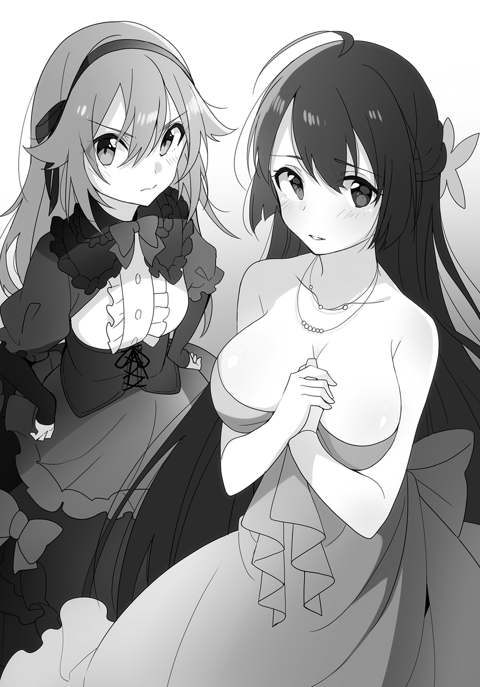

| 都市伝説系彼女。～永遠子さん救済倶楽部～ | |
| おかざき登 | |
この本は縦書きでレイアウトされています。
また、ご覧になる機種により、表示の差が認められることがあります。
 ダッシュエックス文庫DIGITAL
ダッシュエックス文庫DIGITAL
都市伝説系彼女。
～永遠子さん救済倶楽部～
おかざき登
プロローグ
学校の前庭に桜の木を植える意義はなんだろう。
桜といえば、卒業や入学の象徴だ。しかし、本州のかなり北の方に位置するこの高校では、例年、卒業式はもちろん、入学式――つまり、今日にも、満開は間に合わない。
事実、僕が今見上げている桜も、贔屓目で見ても五分咲きがいいところだった。
だったら、もう少し早く咲く木を植えればいいのに。
桜にこだわらなくても、卒業式か入学式を満開で彩ってくれた方がいいだろうに。
間に合わない桜だって立つ瀬がないし、その方が合理的だ。
でも――、
桜に目が行かなかったのはそのせいだ、と言うつもりはない。
僕が、彼女の長い黒髪に目を奪われてしまったのは。
一歩ごとに揺れる髪が、春の陽を受けて、まるで宝石を撒き散らしているようにキラキラと輝いている。
仮に桜がベストコンディションで満開だったとしても、きっと、結果は変わらなかったはずだ。
むしろ、降るように舞い散る花びらに彩られて、周囲の桜色に映えて、彼女の黒髪はもっともっと強烈に僕の目を惹きつけたことだろう。
だから、彼女を見ていたから、気がついた。
彼女のカバンから、銀色に光る何かがぽとりと落ちたことに。
「あ」
しかし、彼女はそれに気づかず、なぜか校舎の裏手へと向かってどんどん進んでいく。
「ちょっと、君！」
名前も知らない彼女に、僕はそう声をかけた。
それでも、彼女は振り向いてもくれない。
ああ、もう！
僕は眼鏡の位置を直しつつ、落ちた何かへ歩み寄って、それ――キーホルダーか何かだろうか？ それにしては精巧な模様が彫り込まれた、銀色の小さな十字架だった――を拾い上げた。
そして、彼女の背中を追いかけた。
「ねえ、君！ ちょっと待って！」
それでも反応がないので、やむを得ずに「ねえってば！」と肩を叩いた。
「ひゃっ」
彼女はビクッと身体を震わせて、ようやく振り返ってくれた。
思わず、息を呑んだ。
――なんて......
少し垂れ気味の優しそうな目。
通った鼻筋と、桜の花びらかと見まごう唇。
白さと健康さを兼ね備えた、陽の光を弾く肌。
全身に纏った、穏やかそうなふんわりとした雰囲気。
そして、冬服のブレザーの上からもハッキリとわかるほどに、高校生離れした女の子のふくらみ。
後ろ姿よりもいっそう、僕の目は彼女に惹きつけられてしまっていた。
「あ、あの......？」
怪訝な顔をする彼女の言葉で、僕はハッと我に返った。
「あ、いや、その......これ、落とし――」
その瞬間。
まだ咲き切っていない桜の枝を盛大に揺らしながら、春の強い風が吹き抜けていった。
その風は、僕の目の前で、彼女のスカートをも派手に舞わせた。
――え。
再度、僕の目は彼女に奪われてしまった。
その、なぜなら――、
彼女は、穿いていなかったから。
あまりのことに、僕は完全に固まってしまっていた。
彼女は風にめくられたスカートを手で押さえて、雪のように白い顔を真っ赤にしながら、
「あ、あの、......見ました......か......？」
と、困ったように言った。
「あー、それは、その」
こっちも困って言い淀んでしまったが、よくよく考えてみれば、それは肯定したのと大差なかった。
「ち、違うんです......！ これは、幽霊が......」
しどろもどろに言いかけて、言葉を止めて、彼女は、
「ご、ごめんなさい......っ」
そう言って、そのまま走っていってしまった。
ぽつんと校舎裏に取り残されてしまった僕は、ただただ立ち尽くしてしまった。
――幽霊......？
首を傾げて、再び眼鏡の位置を指で直しつつ、返しそびれてしまった銀の十字架を見る。
わけがわからない。
なんなんだ、いったい。
とにかく、僕の高校生活は、こんなふうに予想外のできごとから始まったのだった。
第一話 カシマさんが奪うモノ
納得がいかない。
そう思いながら、僕は校舎裏から足早に生徒玄関へと向かっていた。
あんなものを見てしまったせいか、顔が熱い。
いや、それはそれとして、なぜ彼女は......その、穿いていなかったのだろうか。
穿き忘れた？
いやいや。普通、忘れるか？ マンガやアニメではしばしば起こりうる事態かもしれないが、普通に考えて気づかないとは思えない。
では、誰かに強要されている、とか？
真っ先に思い浮かぶのはいわゆるイジメだが、入学式当日にもうイジメが発生しているなんてありうるだろうか。中学から続いているとか？ ないとは言い切れないが、高校進学は人間関係をリセットするチャンスだ。深刻な問題を抱えていれば、いじめっ子と進学先を変えるとか、何か対策を取るだろう。
ということは、本人も合意の上で？ まさか、彼氏がいて、なんていうか、そういうプレイ的な？ だとしたら残念というか......いや、そうじゃなくて、他人の趣味や嗜好にいちゃもんをつける気はないが、それはそれで問題のような。
――真面目でおとなしそうに見えたけど、そうなのだろうか。
ううむ、納得いかない。全然合理的な説明がつかない。
しかも、最後に彼女が口走っていた言葉はなんだ。
『これは、幽霊が......』
幽霊がなんだというのだろう。まさか、幽霊がパンツを奪ったとでも？
馬鹿馬鹿しい。非科学的だ。非合理的だ。
何かを幽霊に見間違えるようなことはありうるだろうが、衣類を直接奪っていくなんてナンセンスだ。
と、生徒玄関前まで来たところで、
「よっ」
後ろから肩を叩かれた。
振り返ると、角刈りの大男が立っていた。
大野謙吾。
中学どころか、小学校に上がる前から連んでいた、腐れ縁の幼なじみだ。
精悍な顔つきといい、引き締まった肉体といい、いかにもスポーツマンといった外見である。いや、実際に中学二年までは柔道一直線で、当時はすでに三年生を差し置いて柔道部のエース的な立ち位置だった。
が、ある日、民俗学者である父親の書斎で関連の書籍を読んで感銘を受け、
「読書をしたいんで、部活、辞めるっす」
と言い出して周囲を驚かせた。
特に顧問の先生は「今、エースに抜けられたら困る」と半泣きで引き止めたそうだが、謙吾は一切聞く耳を持たず、「知らねえよ」と一蹴したのだとか。
それ以来、謙吾はひたすらに自分の知的好奇心を満たすために本を読み続ける日々を送っている。
「張り出されてるクラス分け、見てきたんだろ？ 俺は何組だった？」
そう問われて、僕は首を横に振った。
「いや、まだ。僕も今来たところだから」
「なんだ、見てねえのかよ」
クラス名簿は、生徒玄関前に張り出されている。今日は入学式だが、僕ら新入生も入学式前には自分のクラスの教室で待機することになっていたり、式の後にも教室でホームルームのような形式での伝達事項があったりと、クラス単位での行動が求められていた。
僕と謙吾は、クラス分けが張り出された掲示板と、その前で自分のクラスを確認しようとしている新入生の人混みを見やってため息をついた。
「あの中入っていきたくねえんだよな......。お前が見てきてくれてたら楽だったのに」
「まあ、気持ちはわかる」
あの人混みに割り込んでいくのは、ちょっと......いや、かなり面倒くさい。
だが、
「おーい！ おーい！」
人混みの中で、僕たちに向かって手が振られていた。あまりに背が低すぎて、人混みの中では振っている手しか見えないが、それが誰の手なのかは僕には一目で理解できていた。おそらく、謙吾も同じだっただろう。
「寧々子がいるな」
謙吾の言葉に、僕もうなずいた。
「小さいのによく目立つね」
「人混みに紛れて姿は見えねえけどな」
「たぶん、僕らが自分のところに来ることを疑ってないと思う」
「だろうな」
謙吾は「やれやれ」と肩をすくめて、人混みの方へと歩み出した。
僕も、それに続く。
なおも振られている手を目指して、人混みを搔き分けていく。
「にゃはは、敬ちゃん、謙ちゃん、また三人おんなじクラスだねえ」
猫のように大きな目を細めて、小柄な女の子がにまーっと笑った。
小椋寧々子。
両端が猫の耳のようにピンと尖ったニット帽を被っているせいで、頭の後ろで束ねた髪の毛が尻尾のように見える。童顔と小柄さと発育がアレで少年っぽく見えるスタイルのせいで中学校の新一年生にしか見えないが、れっきとした僕らの同い年だ。
そして、謙吾同様、腐れ縁の仲良し三人組の一人というわけだ。
「また同じクラスなのかよ」
呟いて、謙吾が掲示板を見上げた。
「そ。二組」
僕も、眼鏡の位置を直しつつ、掲示板を見る。
謙吾や寧々子の名前の近くに、確かに「多賀谷敬一郎」と、僕の名前も見つかった。
「代わり映えしないな」
皮肉っぽく笑って、そう呟いた。
「まったくだ」
「えー、あたしは嬉しいよ？ やっぱ、周りが知らない人ばっかりだと心細いじゃん」
「よく言うぜ」
謙吾が笑った。
「明日の昼休みには、お前はどうせクラスの大半と仲良くなってるだろうに」
「僕もそう思う」
「えー!? いつだって上手く立ち回れるとは限らないんだよ!?」
「今まで上手く立ち回り続けてたヤツが何言ってんだ」
言いながら、謙吾はくるりと背を向けて歩き出した。
僕も、同様に歩き出す。
「あれ、どこ行くの？」
「始業式開始まで教室で待機、でしょ」
振り向いて、眼鏡の位置を指で直しながら、僕は言った。
「そういうこった。クラスさえ確認したら、もうここに用はねえだろ」
振り返りもしないで、歩みも止めず、謙吾が言う。
まったく同感。人混みは好きじゃない。
「あーもう、ちょっと待ってよぉ！」
追いかけてくる寧々子がなんだか子猫のようで、思わず口元が綻んでしまった。
＊
僕らがこれから一年間学ぶことになる教室には、もう結構な数の生徒がいて、周囲を窺うような入学一日目の独特な空気を醸し出していた。
「......なんかすげえのがいるな」
そう呟いた謙吾の視線の先には、確かにすごい女の子が席に着いていた。
ツインテールなのはまあいいとして、どういうわけか首や手首に巻いた包帯が制服から覗いている。机の上に置かれた携帯電話には、ストラップよろしくお守りやどこかオカルトめいたグッズが一〇個以上くっついていた。しかも、カバンにはお札みたいなものが何枚もベタベタと張り付けられていた。
明らかに、教室内で浮いている。
そこかしこで知り合い同士が集まったり、初めましての探り合いをしている教室内で、その子に近づこうとするクラスメイトは皆無だった。
「なんだ、あれ......」
まず、目を背けた。正直、関わりたくない。
「うわー、まさかの中二病ってヤツ？」
寧々子が無遠慮に、ちょっとアレな人をまじまじと見つめる。
「声が大きいよ」
思わず、寧々子の頭を小突いていた。
「いたっ」
寧々子の非難がましい視線を黙殺し、教室内を見回す。
すると、教室の中に、見覚えのある顔を見つけた。
「あ」
今朝の、黒髪の君だ。同じクラスだったのか。
目が合った。
ついつい朝の出来事を思い出して、顔が熱くなってくる。
彼女も僕に気がついたのか、頰を赤く染めてうつむいてしまった。
そんな様子を、付き合いの長い二人が見逃すはずがない。
「なんだ、知り合いかよ？」
ニヤニヤしながら謙吾が僕にヘッドロックをかけ、寧々子が「マジか」とでも言いたげな顔で僕と彼女を交互に見た。
「そんなんじゃない。ちょっと話しただけで、名前も知らないよ」
言いながら、首を絞める謙吾の腕を二回叩く。気軽に首を絞めてくれるが、元柔道部エースの腕は、おふざけでも僕の力ではびくともしない。
謙吾の腕から解放された僕は、彼女の方へと歩み寄り、彼女の机の上に返しそびれていた銀の十字架をそっと置いた。
そして、気恥ずかしさに目を逸らしたまま、
「これ、落とし物」
ぶっきらぼうにそう告げた。
「あ、ありがとうございます......」
自分のカバンに十字架がないことを確認して、その後に机の上の十字架を確認して、彼女は胸を撫で下ろしてそう言った。
大切なものだったのだろうか。だとすれば、拾った甲斐もあったというものだ。
「もう落とさないようにね。それ、ただのキーホルダーじゃないでしょ？」
アクセサリーの類には詳しくないけれど、その十字架は安物には見えなかった。どっちかというと、元々はペンダントか何かだと言われた方がしっくりくる。
「あ、はい。祖母の形見なんです。気をつけます」
にっこりと、彼女が微笑んだ。
その微笑みがなんだか気恥ずかしくて正視できず、僕は眼鏡の位置を直しながらそっぽを向いた。
その途端、
「よう」
と謙吾がガシッと肩を組んできた。
「まさか堅物の敬一郎がいきなりクラスの女の子を口説きだすとはなあ」
「誰が堅物だよ。それに、口説いた覚えはないから」
「ホントにぃ？」
寧々子が疑わしそうな目で僕を見て、次に彼女の胸を見て、最後に自分の胸を見て、がっくりと肩を落とした。
いや、そこ以外にも色々負けてるぞ、たぶん。
「俺は大野謙吾。こっちの小っちゃいのは小椋寧々子。この多賀谷敬一郎とは昔っからの腐れ縁だ。一年間よろしくな」
「これはご丁寧にどうも。久喜島永遠子です。こちらこそよろ......あ、いえ、私には関わらない方が......」
「「「は？」」」
僕と謙吾と寧々子は同時に首を傾げた。
会話の流れや彼女――久喜島さんの雰囲気から、拒絶の言葉が出てくるとは思えなかったからだ。
それに、入学初日というこのタイミングで、一年間いやでも顔を合わせなくてはならないクラスメイトを拒絶するとか、完全に理解の外だ。
「あ、いえ、気を悪くしないでくださいね......？ 私に関わると、巻き込まれかねませんから......」
「巻き込まれるって、何に？」
寧々子が不思議そうな顔で訊く。
「ええと、その......」
久喜島さんが言い淀む。その遥か後方で、中二病スタイルの彼女が僕らの方を見て怯えたような顔をして、サッと顔を背けた。......感じ悪いな。
「私、幽霊とかに好かれやすいらしくて......」
そういえば、そんなことを校舎裏でも言ってたな。
「幽霊？ あはは、まっさかぁ！」
寧々子がケラケラと笑った。だが、これが虚勢であることは僕も謙吾も重々わかっていた。謙吾も口元に笑みを浮かべてるし。
昔っから、寧々子は怖い話が苦手なのだ。小学生の頃の肝試し大会で、ルートの途中で怖さのあまり足がすくんで身動きができなくなってしまったこともあった。そのくせ、学校の怪談や怖い噂話なんかは聞きたがるんだから、よくわからない。
ほら、現に今も、寧々子は平静を装いつつ、いつの間にか僕の腕をギュッと摑んで小刻みに震えてるし。なんでそんなに怖がりなんだ。
「敬一郎、お前も馬鹿馬鹿しい、とか思ってんだろ」
「ああ。非科学的だね」
「でもな、怖い怖いと思う心が何かを見せたり聞かせたりすることもあるし、思い込めば体調が崩れたりもする。案外、馬鹿にできねえんだぜ」
「それはまた別の話だと思うけどな。科学的根拠がある事柄と、荒唐無稽な幽霊話を一緒くたにするのはどうかと思う」
「一緒だろ。少なくとも、原因の一端にはなってんだから。それに、単に幽霊の存在がまだ科学的に証明されていないってだけかもしれねえぜ」
「屁理屈にしか聞こえないよ」
「お前の頭が固ぇんだよ。それはそうと、久喜島さん。そういう話なら、この敬一郎は頼りになるかもしれねえぜ」
そう言って、謙吾は久喜島さんにイタズラっぽく笑った。
「はい......？」
「何しろ、コイツは『寺の息子のＴ』だからな」
「なんの話だよ」
確かに、僕の家は寺で、親父は住職をやっている。苗字も多賀谷だからイニシャルはＴだ。だが、それがここまでの話とどう関係があるというのだ。
「いや何、ネットで流布してる怪談のいくつかで、そういう人物が救済役として登場すんだよ。『親父にはまだまだ及ばない』なんて言いながら、悪い霊を撃退してくれるんだ」
「変な役回りを勝手に振らないでくれ」
まったく......。
そもそも、幽霊なんて存在するはずがないんだから、寺だろうが教会だろうが、できることなど何もない。せいぜい、お経なりお祓いなどで、気休め程度の安心感を与えてあげられるくらいだ。
と、そんな話をしているところで、チャイムが鳴って、小柄な女の先生がやってきた。
さあ、いよいよ入学式か。
＊
入学式が終わると、簡単なホームルームがあって、下校と相成った。
しかし、生徒玄関前では、各部活動の先輩たちが、盛大に新入生を勧誘しているようで、その喧噪が校舎の中にまで伝わってきていた。
謙吾や寧々子ともども、面倒くさいな、と思って顔をしかめる。
と、下駄箱付近で、出るに出られずに困った顔をしている久喜島さんと出くわした。
「どうしたの」
歩み寄ってそう尋ねると、久喜島さんは困り顔のまま微笑んで、
「ああいうの、ちょっと苦手で......」
そう言って、先輩たちがちょっと強引な勧誘を繰り広げている外へと目を向けた。
「あー、久喜島さんって、なんかそんな感じだよねー。わかるわかる。ぐいぐい来られると断りにくいもんねー」
寧々子がうんうん、とうなずいた。
確かに、わかる気がする。今日会ったばかりでこんなことを思うのもなんだが、断るのが苦手そうなオーラが目に見えるようだ。
「じゃあ、俺たちと一緒に帰るか？ 寄ってくる虫は、敬一郎がきっちり追い払ってくれるぜ」
「なんで僕が......」
じろりと謙吾を睨む。
そんな僕を、久喜島さんは申し訳なさそうな顔で見て、
「やっぱり、ご迷惑ですよね......」
と消え入りそうな声で言った。
......なんだ、この罪悪感。
そして、ニヤニヤと謙吾が笑っている。
......なんだ、この敗北感。
「あーもう！ わかったよ！ 追い払えるかどうかは知らないけど、引き受けるから、そんな顔しないでくれ！」
負けを認めてそう言うと、久喜島さんはホッとしたように儚げな微笑みを浮かべた。
それがまた照れ臭くて、僕の視線はまた宙を彷徨うのだった。
生肉に食いつくピラニアの大群の映像を見たことがあるだろうか？
生徒玄関を出て、まず思い浮かんだのはそんな映像だった。言うまでもなく、僕ら新入生が生肉で、先輩方がピラニアだ。
新入生と見るや誰彼かまわず近づいて、やれテニス部に入らないかとか、来れ野球部だとか、そんなことを一方的にまくし立てる。
少しは相手を見たらどうかと思う。謙吾はともかく、華奢で眼鏡の僕をラグビー部に勧誘するのはどういう了見だ。
最初のうちは「いえ、結構です」とか「そのつもりはありませんので」とか穏便に断っていたのだが、そんなことを五回も六回も繰り返すうちにだんだんイライラしてきた。
それでも、我慢はしようとしていたのだが――、
「君、うちのマネージャーになりなよ！ はい、決定！ この入部届に名前とクラスを書いて！ 今！」
とか久喜島さんに詰め寄ってきた先輩を見て、思わず入部届を奪い取って握り潰してしまった。
「気の弱い女の子に迫って入部を強要するとか、恥ずかしくないんですか」
「てめえ、それが先輩に対する口の利き方か!?」
胸ぐらを摑まれる。
でも、僕は眼鏡の位置を直しつつ、その先輩を睨み返して、
「そもそも！ そんなふうに先輩風を吹かせて命令すれば後輩は言うことを黙って聞く、なんて考えの先輩がいる部活に、入りたがる人がいるとでも思ってるんですか！」
大きな声で、だが努めて冷静に、言った。
賑わっていた生徒玄関前が、急に静まり返った。
「先輩」
言いながら、謙吾が僕の胸ぐらを摑んでいる先輩の手首を摑み、手に力を込めた。あっさりと、先輩の手が僕の胸ぐらから離れる。
「こいつの言ってること、どっか間違ってるっすかね？」
先輩の顔が苦痛に歪む。
柔道家の握力は強い。組んだときの襟の取り合いは勝敗の鍵を握る最初の一手で、その駆け引きを制するには握力の強さが大きく影響するのだという。
辞めたとはいえ、往年の握力は健在ということか。
「あ、変なことは考えねえ方がいいっすよ。こいつ、見るからに頭切れそうでしょ？ しかも、何かあったら親とか先生とかすっ飛ばして警察や弁護士に話を持っていくくらい容赦もないヤツっすから。たぶん、連帯責任で公式大会への参加禁止や部活動停止だけじゃすまねえっすよ」
なんだか酷い言われようだ。
と、脇から寧々子がスマートフォンを取り出して、その先輩の顔をパシャパシャ撮り始めた。
「敬ちゃん、警察行くときは声かけてね！ 写真提供するよ！」
「気が早いよ。何か起こってほしいのか、お前は」
「にゃはは、念のためよ、念のため」
謙吾が先輩の手首を解放した。
「じゃ、俺たちは帰りますんで」
「僕らは自分たちが入る部活くらい、自分で決めます。お構いなく」
こうして、僕らは勧誘攻勢を乗り切り、無事に校門を出ることができた。
......なんだか目立ちすぎてしまった気もするが、まあ不可抗力だし、仕方ないか。
＊
都会では、五分一〇分待てば電車がやってくると聞くが、田舎の電車事情はとてもじゃないがそんなに恵まれていない。
朝の通勤通学ラッシュ時など、一部の時間帯を除けば、一時間に一本。それがこの辺りの当たり前だ。だから、「何時台の電車」なんて言い方をしたりする。
「参ったな。一二時台の電車は行ったばっかりじゃねえか」
駅で電車の時間表と腕時計を見比べながら、謙吾がため息をついた。
次の電車は、およそ一時間後。なお、都会の一駅間は「運動のために歩く」程度の距離のところもあるそうだが、田舎の一駅間を歩くにはかなり覚悟がいる。
「だってさ。久喜島さん、どうしよっか？ どこかで時間潰す？ 喫茶店とか」
寧々子に訊かれて、久喜島さんは申し訳なさそうに首を横に振った。
「すみません、あんまりお金を持っていなくて......」
「そっかー。まあ、それはそうよね。あたしだって無駄遣いは避けたいしなー。高校生になったんだし、バイトでも探そっかなー」
「寧々子、アルバイトは校則で禁止されてるよ」
「知ってるよー。もー、敬ちゃんは堅いなあ」
「座る場所が欲しいだけなら、駅の待合室かホームのベンチでいいんじゃねえか？」
「私が貧乏なばっかりに、なんだかすみません......。学校でも、私のせいであんな騒ぎになってしまいましたし......」
さらに申し訳なさそうな顔になる久喜島さんに、僕らは顔を見合わせた。
「気にするこたぁねえよ。なあ？」
謙吾に同意を求められて、僕は「ああ」とうなずいた。
「久喜島さんが絡まれなくても、あの勧誘ラッシュにはイライラしていたから」
「いやー、敬ちゃんは自分のためにはキレたりしないでしょ。にしても、相変わらず怖いもの知らずだよね」
「確かにな。成績なら条件次第では追いつける可能性がそこそこある気はするが、度胸だけは勝てる気がしねえよ」
「......なんか褒められている気がしないんだけど」
「そんなことないよー？ 小学生の頃、肝試しの途中で怖くて動けなくなっちゃったあたしを探しに来てくれたじゃん。涼しい顔してさ、この世に怖いものなんかなんにもない、みたいな態度で」
「そういや、んなこともあったな」
腕を組んで、謙吾が懐かしそうな顔をした。
「あたしはあのときを思い出したわよ」
「寺の息子は墓のとなりで生活してるんだよ。肝試しくらいでビビるわけないじゃないか。今回だって、あんな公衆の面前で、本気で殴りかかってくる馬鹿がいるはずない。仮に後で報復をされたとしても、あれだけの目撃者がいるんだから、あの先輩は真っ先に疑われる。自滅するだけだ。合理的に考えれば、さほど危険はないさ」
「簡単に言ってくれるぜ」
謙吾が肩をすくめる。
「っていうか、その役目を振ったのはどこのどいつだよ」
僕が唇を尖らせると、久喜島さんはくすくすと笑った。
「みなさん、仲が良いんですね......。ちょっと羨ましいです」
「久喜島さんにだって、仲の良い友達くらいいるでしょ？」
寧々子が首を傾げた。
「いえ......」
寂しげに、久喜島さんが首を横に振った。
「他人様を巻き込むわけにはいきませんし......」
思わず舌打ちをしていた。
幽霊が寄ってくるから友達を作らない、だって？
馬鹿げてる。幽霊なんて存在しないもののために我慢を強いられるなんて。
「おい、敬一郎」
真面目な顔で、謙吾が何かを警告するように、少し強く僕の肩を叩いた。
「言いたいことはわかるが、いるかいないかで終わる単純な話じゃねえぞ」
「わかってるよ」
そう。朝、謙吾も言っていたように、見えないモノが見えてしまったり、あるはずがない音を聞いてしまったりすることも、ありうるのが人間なのだ。
それは荒唐無稽な話ではなく、心理学や精神医学の領分だ。
だから、霊感云々という主張を短絡的に噓だと決めつけるのはよくない、ということは僕だってわかっているつもりだ。
そのために友達を作らず生きてきたというなら、単なる思い込みだとしても、きっと相当根が深い。下手な否定は、アイデンティティそのものの否定になってしまうかもしれない。たぶん、それでは久喜島さんの問題は解決しない。それどころか、いっそう深刻化させてしまう恐れだってあるだろう。
それに、何らかのＳＯＳを幽霊になぞらえて伝えようとしている、ということだって考えられる。
やはり、その......穿いていないなんて、どう考えてもおかしい。
僕は少し考えて、
「話してみてくれないかな」
と久喜島さんに言った。
「例えば、今、どんな幽霊に悩まされているのか、とか」
久喜島さんは困ったような顔で目を伏せた。
「でも、これ以上ご迷惑をおかけするわけには......」
「話すだけなら迷惑になんてならないでしょ？ あたしも聞きたいなー」
笑顔でそう言っている寧々子だが、聞き終わった後はビビりまくりだろう。まったく、懲りるということを知らないのだろうか。
「いえ、たぶん、話すだけでご迷惑になっちゃうと思います......」
「話すだけで？ どゆこと？」
寧々子が首を傾げた。
「その手の怪談は結構あるぜ。話を聞いた者のところに幽霊が出るってタイプとかな」
顎を撫でながら、謙吾が考えを巡らせるように目を閉じながら言う。
「有名なところではカシマさん系の話とかな。怖い話を聞かせた後、その話が実際に聞き手の身の上に起こるぞ、って脅すのは聞き手を怖がらせるには有効な手段だぜ」
「あー、知ってる知ってる！ カシマレイコだ。その話なら、あたしも聞いたことあるよ。まあ、聞いた後も実際に出てきたりしなかったけどね」
マジで出てきたらどうしよう、とビビりまくっていた寧々子の姿が目に浮かぶようだけどな。
っていうか、明るい声で言いながらも、僕の腕から手を離さないあたり、今も内心ビビってるに違いない。
しかし、寧々子だけでなく、『カシマさん』とか『カシマレイコ』という名前を聞いた途端、久喜島さんもハッとしたように顔色が変わった。
どうやら、その怪談話は何か関係があるようだ。
「で、謙吾。それはどういう話なんだ？」
「知らねえのか。有名な話だぜ？」
「今まで興味がなかったからね」
僕の答えに、やれやれ、と謙吾が肩をすくめた。
「色々なパターンがあるが、痛ましい事故のことを知ってしまうと、その霊がやってきて何らかの問いかけをされる。その答え方に間違えると悲惨な目に遭う、って形式の怪談だ。戦時中に殺された郵便局員とか、戦後の混乱の中で非業の死を遂げた女性だとか、幽霊の素性も様々だが、一番多いのは鉄道事故で下半身を失った女性、という話だろうな。『テケテケ』という怪談との関連もよく取り沙汰されるくらいだ。いずれにしても、腕やら脚やら、身体の一部を失っている、という共通点がある」
「テケテケ？」
僕は首を傾げた。
「あ、それも知らねえのか。北海道の踏切事故で女性が上半身と下半身を切断されたんだが、寒さのせいで傷口の血管が凍結し、即死できずにもがき苦しんで死んだ。その女性の霊が、失った下半身を探して現れる、って話だ。その際に脚がねえから、両手で這って移動する。その様だか音だかからテケテケと命名されているんだとさ」
なるほど、ヴィジュアルを想像してみるとかなりエグい。これは初めて聞いたとき、寧々子はさぞビビったことだろう。
「ってか、両手で這ってそんな音するものか？」
「知らねえよ。俺に言われても困る」
「それに、北海道くらいじゃあ、真冬でも寒さで血が止まるなんて起こらないんじゃないかな。そんな大怪我で出血多量による即死を免れるような傷口の凍結なんて、マイナス百度とかじゃないと無理なんじゃないか？」
「......なんで敬ちゃんはこの話を聞いた直後、そういう冷静なツッコミが出てくるの？」
露骨にガタガタ震えながら、寧々子が言った。
「逆に、なんで疑問に思わないのか理解できない」
「怖くて疑問どころじゃないでしょ、普通は！」
「そうか？ まあ、話として、聞き手を怖がらせるための仕掛けはなかなかよくできているとは思うから、話し上手が情感たっぷりに語れば怖いかもしれないけど、謙吾のは単なるデータの羅列でしょ。怖がらせるための話し方じゃない」
「いやいやいやいや！ それでも充分怖いよ！」
「まあ、怖がらせる話し方をしても、敬一郎をビビらせるのは至難の業だろうけどな。ともかく、実際に傷口の凍結については指摘されているぜ。敬一郎の言う通り、厳寒期の北海道でもありえねえそうだ。だから、もしかしたらそのうち液体窒素の運搬車両による事故なんかに変化していくかもしれねえな」
「いい加減だね。そんな簡単に中身が変わっていいのか」
「都市伝説ってのはそういうもんだ。各地で話を採取していくと、そういう変化がどの地域で起こったのかがわかったりして、噂がどう広がっていったのかも見えてきたりするわけさ」
「......どゆこと？ なんでそれで噂の広がり方がわかるの？」
寧々子が首を傾げた。
「例えば、Ａ、Ｂ、Ｃの三つの学校があったとする。地域的にも、Ａ校とＣ校は遠く、Ｂ校が中間という位置関係だったとする。Ａ校では、『カシマさんの質問に正しく答えられねえと脚をもがれる』というパターンの噂が流れている。しかし、Ｃ校では『カシマさんの問いに間違えると殺され、正解なら脚をもがれるだけで済む』という風に伝わっていたとしたら、Ｂ校ではどんな噂になっていると思う？」
「え？ いや、そんなの、Ｂ校の人に聞いてみないとわかんないでしょ」
何を言ってるんだ、という顔で寧々子が肩をすくめる。
「いや、想像はつくよ」
「え、ウソ!?」
僕の言葉に、寧々子が大袈裟な声を上げた。
「おそらく両方、しかしＣ校と同じ噂がＡ校の噂を駆逐しつつあるような状況だと思う」
「なんで？」
「怪談を話す人間の心理からすれば、より怖がらせたい、と思うはずでしょ。だとすれば、エスカレートすることはあっても、逆は考えにくい。たぶん、Ａ校の生徒からＢ校の生徒に伝わって、Ｂ校で誰かが『もっと怖くする』ことを考えた。そして、もっと怖くなったバージョンがＢ校で広まり、それがＣ校の生徒に伝わった、ってことだと思う」
「ほへー、なるほど。さすが敬ちゃん、頭いいねー」
「ちょっと合理的に考えればわかることだよ」
「そういうこった。まあ、最近はネットの出現で広がり方は一変しちまったけどな」
「それも民俗学？」
「まあな。幽霊がいるかいねえかわからんが、こういう話を語る人間は存在している。なぜそんな話が生まれたのか、なぜ広がったのか、どう広がったのか、それらは社会の在り方や時代性に大きく左右される。例えば、ネットが浸透する前は、塾や習い事の場が各学校の噂話をつなぐ架け橋になっていた。では、テレビやラジオの存在はどんな影響を与えただろうか。そういう変化を考え合わせていくと、噂話は社会と決して無関係じゃねえ。たかが噂、怪しげな都市伝説からでも、人の心や営みが見えてくる。それが面白いんだ。もしかしたら、文化人類学や社会学も被ってるかもしれねえけどな」
なるほど。民俗にせよ文化にせよ、なんとも幅が広くて便利な言葉だな。
「で、話を戻すと、現れたカシマさんからの問いかけは......、まあ、これも色々あるんだが、『腕や脚をよこせ』とか『その話を誰から聞いたか』というものだと言われている。腕をよこせと言われたら『今使ってます』、脚をよこせと言われたら『今必要です』、誰から聞いたか、は『カシマさん』と答えるのが正解とされている......けど、これも変化が激しくてな。特に最後のは、漢字まで説明するようなパターンも多い」
「......詳しいんですね」
感心したように、久喜島さんが言った。
「今は暇さえあれば本を読んだり、ネット怪談を漁ったりしてるからな」
「で、久喜島さんが今困ってるのは、そういう話なの？」
僕が訊くと、久喜島さんはまた困ったような顔をして、しかしそれでも、ぽつりぽつりと話し始めた。
＊
発端は、卒業式の日だったのだという。
「クラスメイトの何人かが、私の席の近くで集まって、お喋りをしていたんです。私は話の輪に加わる気も、聞く気もなかったんですけど......」
「聞こえてしまった、と」
久喜島さんは僕の言葉に、「はい」と小さくうなずいた。
「えーと、そのとき聞こえちゃった話がカシマさんのことだった、ってことでＯＫ？」
寧々子の確認に、久喜島さんがもう一度うなずく。
「それで、帰ってからもなんとなくイヤな予感はしていたのですが......」
なるほど、『その話を知った相手のところに訪れる』という設定は上手く出来ている。聞いた後、「もしかして」と思って尾を引いてしまうわけだ。
「その日の晩、夢を見たんです......」
ごくり、と寧々子のツバを飲み込む音が聞こえた。
訥々とした久喜島さんの語り口は、本人に自覚はないのだろうけれど、なんだか妙にリアリティを感じさせる。
「その日は風が強くて、我が家がだいぶ古いのもあって、あちこちが音を立てるものですから、それが気になってなかなか寝付けなかったんです。最初は寝なきゃ寝なきゃ、と思っていたんですけど、よく考えたら卒業した後ですから、翌日は休みなんですよね......。そう気がついて、じゃあ眠れなくてもいいかな、と思った途端に急に眠気がやってきて、ウトウトし始めて......。でも、少ししたら、風の音がぱったり止んでいて、別の音が聞こえてきたんです。ざりざり、というか、ずるずる、というか......」
寧々子が僕の腕を摑んだ手にギュッと力を込めた。顔がかなり青ざめている。もう虚勢の笑顔さえ維持できなくなったようだ。
......カシマさんとやらの話はとっくに知ってるんじゃないのか。
「なんだか妙だなって思って、起き上がって周囲を確認したんですけど、真っ暗でなんにも見えなくて。でも、何かを引きずるようなその音だけは、着実に近づいてきているような気配があって......」
腕を摑んだ寧々子の手にますます力がこもる。
「こりゃ意外な才能だな」
謙吾も、感心したように呟いた。
その意見には、僕も同感だ。寧々子のように怖いと思うわけではないが、久喜島さんの話には臨場感があって、思わず引き込まれてしまう。
「いつの間にか、私、音が聞こえてくる方から目を背けられなくなっていました。そうこうしているうちに、どんどん音が大きくなってきて......、やがて、暗闇の中を這ってくる女の人の姿が......」
「ひいい......」
寧々子の手が、ついにガタガタと震え始めた。そこまで怖いか。
「その女性は、腰から下がなくて......。這ってきた地面にはべったりと血の跡が伸びていて......。それを見て、私、思わず......」
「わかるわかる！ そりゃ悲鳴上げちゃうよね！ あーもう、怖っ！」
どうでもいいけど、高校生にもなって怖い話くらいでしがみついてこないでいただきたい。怖がってガタガタ震えてる女の子を突き放すほど冷酷ではないつもりだが、寧々子のような発育不良娘でも、こうもギュウギュウと引っ付かれれば身体の柔らかさや温かさが感じられて照れ臭い。
「あ、いえ、痛そうだし不便そうだし、かわいそうだなって思って、『大丈夫ですか』って駆け寄っちゃいました」
「「「......は？」」」
僕らは三人して、拍子抜けというか、肩すかしを食らって、間抜けな顔で訊き返してしまった。
「ええと、ですから、手当てとまではいかなくても、せめて介抱というか、労るくらいはしてあげなきゃ、って」
「ううむ、さすがに俺もその展開は予想してなかった......」
「だ、だよねー」
確かに意表を衝かれたが、これで終わりではないはずだ。ここで終わりなら、出会い頭に言っていたパンツと幽霊の因果関係が謎のままだ。
だから、僕は、
「それで？」
と話を先に進めるよう促した。
「あ、はい。なんとか止血できないかって思って、でも包帯も何もないので、着ていたパジャマを脱いで血を拭いたり、傷口を縛ったりしたっていうだけで......」
「ええー」
もはや寧々子が呆れるを通り越してドン引きしていた。震えが収まっているところを見ると、怖さもどこかへ飛んでいったようだ。
「なあ、謙吾。問いかけとか、間違えると酷い目に遭うって話はどこに行ったんだ？」
「俺に訊かれても」
「そういえば、そのときに何か言われた気がします。私、思わず『重傷なんだから喋っちゃダメです』って言っちゃったんですけど」
「白衣の天使か、お前は」
思わず、寧々子にするように、脳天に軽くチョップでツッコミを入れていた。
「はう......。すみません......」
チョップされた頭を手で押さえて、久喜島さんが申し訳なさそうに頭を下げる。
「あ、いや、こっちこそ、つい......」
申し訳なさと照れを隠すように、僕は必要もないのに眼鏡の位置を指で直した。
「でもさ、それって春休み初日の話でしょ？ 今困ってることを訊かれてその話をするってことは、その夢、毎日見てるの？」
「いえ......その......」
首を横に振って、久喜島さんは言い淀み、僕の方をちらりと見て、顔を赤らめた。
そして少しうつむいて、しばらく逡巡した後、さらに顔を真っ赤にして、
「..................翌朝、起きたらなぜかパンツを穿いてなくて......どういうわけか、その日から、パンツを穿けないんです......！」
恥ずかしそうにそう言った。
......ところで、寧々子、お前はいつまで僕の腕を摑んでいるんだ。
＊
聞けば、久喜島さんは僕らが使う駅の二つ手前の駅が最寄りなのだという。
先に降りる久喜島さんを見送り、しばらく三人で電車に揺られて、やはり三人揃って同じ駅で降りる。
「しかし、命でも腕や脚でもなく、カシマさんがパンツを奪うとは思わねえよなあ......」
謙吾が呟いた。
「まったくだね。幽霊話が自己暗示的に作用する、ってのは理解できないことはないんだけど、こんなふうに独創的な症状が出ることもあるのか？」
「おいおい、わかるわけねえだろ、俺は医者じゃねえんだぞ」
「そりゃそうだけど」
「彼女なりの解釈があったのかもしれないし、カシマさんとはまったく関係ないストレスが悪さしてるのかもしれないし、なんとも言えんな」
「っていうか、実際に生活に支障が出るなら、ちゃんとお医者さんに診てもらった方がいいと思うのよね」
「同感だよ......」
「まあ、さすがにお医者さんにも言いにくいと思うけどねえ......」
「なんにせよ、俺たちにこれ以上できることがあるとは思えねえな。俺たちに話したことで、少し気が楽になったりしてくれるといいんだが」
「そうだね......」
無人駅の改札を抜けて、駅前とは名ばかりの何もない通りを並んで歩く。
噂では、この辺りに広大な駐車場を備えたショッピングモールができるとかできないとか。となりの駅はそこそこ大きくて、駅前にも立派な商店街があったりするのだが、それでもシャッター通り化が止まらないのだという。
結局、田舎で雪国のこの辺りは車社会で、自動車なしでは生活も仕事も立ちゆかない。一家に一台どころか、一人一台必要なくらいだ。そんなだから、一時間に一本の電車が停まる駅の前であるということより、駐車場の有無の方が重要なのだ。
ほどなくして、三叉路で謙吾が「じゃあな」と手を上げて一人別の方向へ足を向けた。
「ああ、また明日」
「じゃあねー」
僕もそれに返事をして、寧々子も手を振る。
もう少し行けば、僕と寧々子も帰り道が分かれることになる。
「......」
そこまでの道のりで、寧々子は何も言わなかった。
だから、僕も何も言わずに黙々と歩く。
だが、別れ際、寧々子は僕の腕を摑んで、
「ねえ、敬ちゃん......」
そう言って、少し不安げな顔で僕を見上げた。
「ん？」
「あのね、........................あ、えーと、やっぱりいいや」
一〇〇％迷いを残した表情で僕の腕から手を放して、寧々子は何かを誤魔化すように微笑んだ。
「はあ？」
「あー、そうだ。明日からお弁当でしょ？ あたし、敬ちゃんの玉子焼きが食べたいなー」
「なんだよ、その取ってつけたようなリクエストは」
「いいじゃん。どうせあたしはコンビニのパンだしさー」
「自分で作るっていう選択肢は」
「あたし、不味い玉子焼きとか食べたくないよ？」
「美味しく作れるようになる努力しないのかよ」
「まあ、なんていうか、それは近いうちにネ」
そんな日は来ないと断言できるけどな。目を合わせようとしないのが何よりの証拠だ。
「じゃ、そーゆーわけで、よろしく！」
ひらりと僕から離れると、寧々子は「たっまごっまごまごたっまごっ焼きー」と変な歌を歌いながら、大きく手を振って、自分の家へと駆けていってしまった。
......やれやれ。
僕はため息を一つついて、卵は冷蔵庫にいくつあったかな、などと考えながら、家である寺に向かって歩き始めた。
＊
その日の深夜。
妙な寝苦しさに目を覚ました。
――何時だ？
上体を起こし、机の上に置いた眼鏡を取ろうと手を伸ばして、眼鏡をすでにかけていることに気がついた。
......？
それどころか、闇の中、手を伸ばせば届くはずの勉強机に手が触れることもなく、いつもは暗い室内で光を放っているはずのＰＣや電源タップのランプの光も見当たらない。
「これは......明晰夢というヤツか」
これは夢だ、と認識して見る夢。
しかし、珍しいな。夢そのものを滅多に見ないのに。
周囲を見回すが、結局、闇ばかりでほとんど視界が利かない。
「ん？」
何かが聞こえた気がした。
ずり、ずり、と何かを引きずるような音。
それと重なるみたいに、ねちゃ、とでもいうような、湿った音。
――まさか。
今日聞いた、謙吾や久喜島さんの話が意思に反して思い出される。
ありえない。
あんな話を聞いたから、脳がそれを記憶していて、夢に見せているだけだ。
夢なんて、所詮は脳が寝ている間に行っている情報処理の産物に過ぎない。そういう話を聞いてきたのだから、その夢を見たところでなんの不思議もない。
むしろ、因果関係は明らかじゃないか。
心を落ち着かせるように大きく深呼吸をして、眼鏡の位置を指で直す。
音は、どんどん大きくなってきている。
つまり、近づいて来ている。
「もったいぶらずにさっさと出てこいよ」
音の方に向かって、言った。
少し取り乱しはしたが、原因がわかってしまえばどうということはない。
「何よ、可愛げがないわね」
そう言いながら闇の中から匍匐前進でやってきたのは、腰から下が千切れてしまった妙齢の女性だった。
これまで僕が出会った誰とも似ていない気がするが、切れ長の目がとても綺麗な美人だった。しかし、だからこそ、振り乱した髪や、ボロボロに破れた白い服、その服や肌に付着したどす黒い血が際立ち、目を背けたくなるようなグロテスクさが同居していた。
そして、どういうわけか、腕や頭にはクマさん柄の布が包帯よろしく巻き付けられていた。これは、やはり久喜島さんの話の影響だろうか。
「キミ、あたしが怖くないの？」
「別に」
夢だとわかっていれば、何が出てこようと怖いはずがない。
「へー。こないだの女の子といい、変わった子が増えたわねえ」
こないだの女の子ってのは久喜島さんのことだろうか。すると、やはりあの包帯代わりのクマさん柄の布は彼女のパジャマか。
って、そんなわけないな。あくまでこれは夢。すべての情報は僕の脳内にあるモノ、それがつなぎ合わさって夢になっている、それだけのことだ。
「あ。まさか、胸元見て興奮してるんじゃないでしょうね？」
イタズラっぽく、その女性は地面に肘をついたまま、二の腕で豊かな胸を寄せてみせた。ボロボロの服は胸元も大きくはだけていて、それはもう上から見ると谷間がハッキリくっきりではあったが。
「誰が興奮するか！ 人を死体愛好者みたいに言わないでくれ！」
つか、ずいぶんノリが軽いな、カシマさん。
「ところで、坊や、その手をあたしにくれないかしら」
「誰が坊やだよ......。ええと、今使ってるから断る」
謙吾が話していた対処法を思い出しながら、言った。ビビっているつもりはないが、対処法を間違うと酷い目に遭う、という情報はすでに知識としてあるのだ。それに沿って夢が進行したら、ろくな目に遭わないということになる。
たとえ夢の中でも、酷い目に遭うのはゴメンだ。
「あら、残念。じゃあ、脚は？」
「今必要だから断る」
「あたしが言ってるのはぁ、三本目の脚だったりして」
「はあ!?」
「あれ、意味わかんないかな？ 真ん中の......」
「ド直球のセクハラかよ！」
「手を今使ってて、真ん中の脚が必要なことって何かなー？ 若いわねえ、坊や」
「黙れよ、色ボケ幽霊」
「んなこと言わないで、もう少しお姉さんのセクハラに付き合ってよぉ。下半身がこの通りでもうそっち方面に縁がなくなっちゃったんだからさあ」
「知るか」
「えー、これほどの肉体をこの若さで持て余しているのよ？ もったいないと思わない？」
ことさらに胸の谷間を強調して、カシマさんが流し目で言う。
「思わない！」
ってか、この若さってなんだ。幽霊は年齢とか関係あるのか。
いや、これは夢なんだから、もしかして僕の欲求的なものの表れなのか。だとしたら、僕は健全なのか不健全なのか、ちょっと真剣に悩んでしまうな......。
「つまんないなー。坊やはこないだの子と違ってちゃんと答えたから、腹いせにパンツ奪うこともできないし。幽霊の世界もね、結構ルールがうるさいのよ」
「奪うのは手とか足とかじゃないのか」
「えー？ そんなことしたら死んじゃうじゃない。腕や脚でも、引っこ抜いたら出血多量で死んだりショック死したりするのよ？」
「それが目的じゃないのかよ」
「だってぇ、別にそんなものもらったって仕方ないし」
「それはそうだろうけど......っていうか、返してやれよ、パンツも。それこそもらっても仕方ないでしょ。穿くべき下半身がないんだから」
「ちょっとぉ、坊や、それはさすがにデリカシーないんじゃない？」
「セクハラ三昧のあんたがデリカシーとか言うのかよ。それに、パンツを奪うのだって相当デリカシーに欠けると思うけど」
「何よぉ、ちょっとしたイタズラじゃない」
「だったらなおさら返すべきでしょ。今も彼女は困ってるんだから。......ってか、僕の夢の中でこんなことを言ったって無意味だろうけど」
「そうねえ。じゃあ、返すわ。はい」
彼女は、白と水色のストライプ柄の小さな布を投げてよこした。
反射的に受け取る。
「これって、まさか......」
案の定、それは女性用の下着だった。
これが僕の夢だとしたら、僕はかなり最低なのではないだろうか。
「手と真ん中の脚を使う行為に使っちゃダメよ？」
「うるさい黙れ。使うわけないだろ！」
キッと睨みつけると、上半身だけの女性は「怖い怖い」と笑いながら、すーっと搔き消えてしまった。
＊
カーテンの隙間から差し込む陽の光が、朝の訪れを告げていた。
カーテン越しにも感じるまぶしさが、天気の良さを物語っている。
もうしばらくしたら、目覚まし時計が鳴り始めることだろう。
気持ちのいい朝だ。
起きたら、昨日寧々子にリクエストされた玉子焼きを作らなければ。
そんな今朝の予定を頭の片隅で思いながら、
――この、なぜか僕が今握りしめている白と水色のストライプ柄の布きれについて、何をどう考えたら合理的な説明ができるだろうか。
そのことについて、困り果ててしまっていた。
第二話 メリーさんの長電話
登校中、駅から学校までの道の途中で、見覚えのある綺麗な黒髪の後ろ姿を見つけて、
「ちょっと先に行く」
と一緒だった謙吾と寧々子に言って、足を速めた。
「久喜島さん！」
僕の声に、美しい黒髪の持ち主が振り返り、
「あ、多賀谷さん。おはようございます」
ぺこりと丁寧すぎる仕草であいさつをした。
「ああ、おはよう」
「あの、実はですね......」
少し顔を赤くして、久喜島さんは数秒逡巡した。
「実は？」
「その......か、解決しました！」
「解決？」
「は、はい。今日起きたら、その、......ちゃんと穿けました......」
消え入りそうな、恥ずかしそうな声で、久喜島さんは言った。
それは何より。
しかし、昨夜の夢で「パンツを返してもらった」こととの符合は偶然だろうか。
「あ、そうだ。これ、確認してくれないか」
僕はカバンから紙袋を取り出して、久喜島さんに差し出した。
と、その瞬間、
「何？ それ何!? なんか美味しいヤツ!?」
おっそろしい勢いで駆けてきた寧々子が、横から紙袋をかっ攫った。
「あ！ おい、寧々子、開けるな！」
そう制止はしたが、寧々子は急には止まれない。奪い取ると同時に、紙袋の中を覗き込まれてしまった。
そして、寧々子が何か汚らしいモノでも見るような目を僕に向ける。
「そんな目で僕を見るなよ」
「いや、これは見るでしょ」
「僕は数奇な運命の末に手元に回ってきたものを、元の持ち主かもしれない人物に返したいと思っているだけだ」
「......敬ちゃん、何言ってんの？」
なおも寧々子の視線は冷たい。
まあ、自分でも何言ってんだろうな、と思うけれども。
「朝っぱらから何を騒いでいるんだ」
あくびをしながら、謙吾も追いついてきた。
「......自分でもどうかと思ってるから、あんまり言いたくなかったんだが、昨日、カシマさんの夢を見たんだよ」
かいつまんで夢の内容を話し、起きたら返してもらったパンツがあったのだ、とありのままの事実を説明した。
聞き終わるなり、寧々子は青ざめた顔で紙袋を久喜島さんに押しつけた。
久喜島さんは渡された紙袋の中を確認して、顔を赤らめた。
「......たぶん、私のもので間違いないです......」
ますます、寧々子の顔から血の気が引いていく。
「じゃ、じゃあ、それって本物のカシマさん......？」
「ただの夢だ。それに、エロいこと言ってくるだけの幽霊の何が怖いんだ」
「だだだ、だって、それはどう説明すんの!?」
寧々子が紙袋を指さして、泣きそうな声で言う。
「久喜島さんの部屋から風で飛ばされて、何日かかかって僕の家まで飛んできたとか」
「そんな偶然あるわけないじゃん！」
「可能性はゼロじゃないだろ」
窓を開けて寝ていた記憶はないが、きっと家族の誰かが開けたか、僕の記憶違いだろう。そうに決まっている。
「その偶然、幽霊が実在する確率と、どっちが高いだろうな」
楽しそうに笑いながら、謙吾が言った。
「ありえないものよりは、ゼロじゃない以上高いと思うよ」
「でも......」
久喜島さんが首を傾げた。
「多賀谷さんの夢に出てきたカシマさんは、クマさん柄の布を包帯みたいに巻いていたんですよね？」
「ああ」
「私、昨日、パジャマの柄なんて言いましたっけ......？」
「「「......」」」
僕も謙吾も寧々子も、一瞬、黙り込んでしまった。
「パジャマを包帯代わりに巻いた、という話は聞いたが、柄まで聞いた記憶はねえな」
腕を組んで考え込むように謙吾が言った。
「言ってない！ 絶対言ってないよ！」
ガタガタ震えて僕の腕にしがみつきながら、寧々子が断言する。
「記憶にはないけど、夢に出てきた以上は聞いていたんだよ、きっと」
僕は、肩をすくめた。
「幽霊なんて、いるはずないんだから」
＊
昼休み。
「ねー、久喜島さんもお昼、一緒に食べようよ！」
寧々子にそう誘われた久喜島さんは、少し迷っているようだった。
「でも......やっぱり巻き込んでしまいましたし......」
僕の方を見て、申し訳なさそうに言う。
「僕は単に夢を見ただけだし、巻き込んだのとは違うと思うけどな」
「そうそう。細かいことはいいから、こっち来なって」
寧々子は久喜島さんの手を引っ張って、強引に連れてきてしまった。朝はあれだけ怖がっていたのに、なんともまあ切り替えが早いというか、忘れっぽいというか。
まあ、ああやって屈託なく誰とでも仲良くなるのは寧々子の美点だが。
四つの机をくっつけて作った食卓を四人で囲む。
謙吾は極大のおにぎり二つと、古めかしいハードカバーの本。おかずはなし。本を読むのにおかずは邪魔なのだそうだ。現に今も、おにぎりを手にするより先に本を開いている。
寧々子はコンビニのサンドイッチ。三角形のタイプではなく、切れ目を入れたフランスパンに野菜やベーコンを挟んだヤツだ。
久喜島さんは女の子らしいお弁当箱だったが、なかなか開けようとしない。
「どしたの？」
そんな久喜島さんの様子に、寧々子が怪訝な顔をする。
「あ、ええと......笑わないでくださいね......？」
おずおずと、久喜島さんがお弁当箱を開ける。
その中身は、白米と梅干しだけの、見事なまでのザ・日の丸弁当だった。
「うわー。これはまた珍しいね......」
「我が家はちょっと貧乏でして......」
「意外だな。どっちかってぇと、お嬢様っぽい雰囲気なのに」
謙吾が開いた本から顔を上げる。
本を読みながらでもちゃんと話を聞いているんだから、この男の頭と耳はどうなっているのだろうか。
「大変だねー」
ポンポン、と寧々子が久喜島さんの肩を叩いた。
「いえ、これも神の与えたもうた試練ですから」
「ん？ クリスチャンなのか？」
謙吾が訊いた。
そういえば、昨日拾ったのも十字架だったな。
「いえ、正式に洗礼を受けたわけじゃありません。祖母の影響というか、教えというか。周りを恨んだりするより、そう考えた方がいいって」
「なるほど、確かにそうかもしれねえな。案外、宗教の教えってのは、そういう生活の中の細々したことの中から生まれたのかもな」
「謙ちゃんはどんなことにも意味を見出そうとするねえ」
謙吾らしいけどな。
「ああ、そうだ。じゃあ、これ、ちょうどよかったかもな」
僕は自分の弁当箱より一回り大きなプラスチック容器を取り出して、みんなの前にどんと置いた。
「何これ？」
寧々子が訊く。
「はあ？ 昨日変な歌まで歌って玉子焼き作れって言ったのはどこのどいつだよ」
寧々子は一瞬キョトンとして、
「あ。あー、ここのあたしだ」
ポンと手を打った。
「謙吾もあったら食うだろうし、少し多めに作ってきたんだ。久喜島さんも、よかったら食べて」
「あ、ありがとうございます......。多賀谷さん、お料理、できるんですか？」
「ああ、少し」
「敬ちゃんの玉子焼き、美味しいんだよー」
なぜか自慢げに言って、寧々子は容器のフタを開けた。
鮮やかな玉子の黄色と、茶色く煮汁が染みた赤身と白い脂身のコントラスト。
「あれ、玉子焼きだけじゃない」
「昨日仕込んだ猪肉の叉焼があったから、ついでに入れてきた」
「猪？ もしかして、親父さんが仕留めたヤツか」
「そう。この時季の猪は、脂がほどよく落ちて冬のとは別物なんだ」
猪の旬は冬で、脂が乗りに乗った肉は牡丹鍋には最適だ。でも、調理法によっては、その脂の乗り方が仇になるケースもある。
「ええと......」
置いてけぼりにされていた久喜島さんが、不思議そうな顔で首を傾げた。
「仕留めたって、狩猟ですか......？」
「親父の趣味でね」
「え......でも、多賀谷さんのお家ってお寺......ですよね......？」
ハテナをたくさん浮かべたような顔で、久喜島さんが困惑している。
「やっぱ、みんな最初はそう思うよねー」
面白そうに、寧々子が笑った。
「とんだ生臭坊主に思えるもんな」
謙吾も苦笑を浮かべている。
「必要に迫られてというか、頼まれてというか、農家をやってる檀家さんが困っているのを見かねて始めたらしいんだけどね」
「あ、もしかして、畑を荒らされたりとかの対策で......？」
僕は「そういうこと」とうなずいた。
田舎の農業は、天候だけでなく生き物との戦いでもある。野菜であれ果物であれ、一口でも何かに囓られてしまえばもう売り物にはならないのだ。
狩猟などと言うと、動物がかわいそうとか思う人もいるかもしれないが、その動物のために収入が激減する農家の人たちだって死活問題なのである。
いつも思うのだが、○○を殺すな、とか主張する人たちは、そのことによって生じる誰かの損害を自分が肩代わりする覚悟をしてからものを言うといいのだ。
「何もお坊さんにお願いしなくてもいいと思うんだけどねー」
「無理もないだろ。敬一郎の親父さんって地域のまとめ役みたいな立ち位置だし」
「近隣がほとんど檀家さんだからね。農家やってる人たちの大半はお年寄りだし、誰かにお願いしなきゃいけない事情も理解はできる――って親父は言ってた」
「なるほど......」
久喜島さんが、納得したようにうなずいた。
本当は、他に頼める人が近所にもっといれば一番良いんだろうけど、世の中、なかなかそう都合よくできてはいないものだ。
「で、当然、親父が猟に出れば獲物があるわけでさ。捌くのは知り合いの家でやってから帰ってくるから、親父が持ち込むのはもう『肉』になった状態なんだけど、それでもお袋が気味悪がって触りたがらないんだよ。で、いつの間にか親父が仕留めてきた獲物の調理は僕の仕事になって、基本的な包丁や火の使い方を覚えたら、そのうち料理ができるなら弁当くらい自分で作れ、と」
よくよく考えてみると、この流れ、なんだか理不尽な気がする。まあ、寺の業務が実はかなり忙しいのは近くで見て知っているので、特に文句を言うつもりもないんだけれど。
「まあ、ご託はいいのよ。美味しければ」
そう言いながら、寧々子がひょいと玉子焼きを一切れつまんで、口に放り込んだ。
「んー、この味この味」
美味しそうに食べてくれるのは嬉しいが、手づかみってのはどうなんだ。
「ほらほら、久喜島さんも食べなって！ 美味しいから。ボヤボヤしてるとなくなっちゃうよ？」
「あ、はい......。頂きます......」
おずおずと、久喜島さんが猪の叉焼を箸でつまみ上げた。そして、それを可愛らしい口へと運ぶ。
「あ、美味しい......！」
一口で、久喜島さんの口元が綻んだ。
「すごいですね、冷めてるのに柔らかくて、脂が全然しつこくなくて......」
「そりゃよかった」
「これはもう、敬ちゃん毎日作ってくるしかないねえ」
玉子焼きをもう一切れ、ばくりと口に入れながら、寧々子が笑った。
「お前はちょっと食い過ぎじゃねえのか」
「えー。女の子をまるで大食らいみたいに言うなんて、謙ちゃんひどーい」
「事実、大食らいだろうが」
「ぶー」
寧々子が不満げに頰を膨らませた。
そんな様子に、久喜島さんがくすくすと笑う。
......ふむ。なんていうか、いつもの三人組だけで食べるより、悪くない気がする。
他人に関わるまい、とする久喜島さんをこの輪に誘うためにも、明日もおかずを余分に作るくらいは引き受けるとするか。
そんな食事を終えて、満足感と気だるさが漂ってきた頃、
「あ、そうだ。久喜島さん、携帯の番号教えてよ。あと、メールとかも」
と、寧々子が自分の携帯電話を取り出して言った。
「あ、すみません......。私、携帯電話を持っていなくて......」
申し訳なさそうに、久喜島さんが頭を下げる。
「ありゃ、そうなの？」
その瞬間、寧々子の携帯電話が鳴った。
「はい、もしもし？」
寧々子が即座に携帯電話を耳に当てる。
「......え？ ちょ、何......？ イタズラならやめてよ......！」
怯えた顔で、寧々子は携帯電話を久喜島さんに差し出した。
「私......ですか......？」
「メ、メリーさんだって言ってるけど......」
誰だ、それ。
僕は首を傾げたが、謙吾は「ほう」と興味ありげに本から顔を上げた。
「もしもし......？」
寧々子から携帯電話を受け取った久喜島さんは、電話の向こうの相手に何度か「はい」を繰り返していたが、すぐに「切れちゃいました」と言ってすぐ寧々子に返した。
「なんて言っていた？」
謙吾が、本をパタンと閉じつつ、訊く。
「ええと、私が携帯電話を持っていないので小椋さんの電話にかけたそうで、今はゴミ捨て場にいらっしゃるそうです」
「知り合いよね!? 久喜島さんの知り合いなのよね!?」
泣きそうな顔で、寧々子が久喜島さんに詰め寄った。
「い、いえ、初めて聞く声でしたけど......」
「ひいいい！」
寧々子が僕の後ろに隠れるように、背中にしがみついてきた。だから、何かにビビる度に僕にしがみつくなっての。
「何を騒いでいるんだ」
そもそも、久喜島さんの友達って寧々子の携帯番号を知っているものなのか。
「敬一郎は知らねえのか。『メリーさんの電話』は有名な怪談だぜ？」
「知るか」
「捨てた人形から電話がかかってくるんだよ。『私メリーさん、今ゴミ捨て場にいるの』ってな。何度も何度もそんな電話がかかってきて、電話がかかってくる度に、どんどん自分の家に近づいてくるんだ」
「へえ。で、最後はどうなるんだ？」
「知らねえよ」
「はあ？」
「たいていは『今あなたの後ろにいるの』で終わるからな」
「なるほど......。怪談話としては、そこでバッサリ切って終わらせた方がスマートか」
「ってことだろうな。おい、寧々子。次はスピーカーモードにして、会話の内容が俺たちにも聞こえるようにしてくれ」
謙吾の指示に、寧々子は青ざめた顔でコクコクとうなずいた。
「っていうか、誰か代わりに出て」
そもそも、寧々子は自分の携帯電話を久喜島さんから受け取ること自体を拒否している。困り果てた久喜島さんは、寧々子の携帯電話を机の上にそっと置いた。
「久喜島さん、最近人形を捨てたりしたか？」
「いいえ......」
謙吾が首を捻った。
「おかしいな......。いや、まだゴミ捨て場にいたとなれば、今朝ゴミに出されたわけじゃねえのか」
「うちの近所は、ゴミは夕方の回収ですけど......。あ、もしかしたら、母が間違えてゴミに出したとか、そういうことならあるかもしれません。人形なら、祖母からもらった人形がありますから」
「なるほど、その線はあるかもしれねえな」
その瞬間、再び電話が鳴る。画面には『非通知』の文字が。
寧々子がイヤイヤと首を振って机の上の携帯電話を怖々と見やる。
「じゃあ、私が......。どうすればいいんですか？」
久喜島さんがビビりまくりの寧々子に操作方法を訊いて通話ボタンを押し、
「もしもし......？」
と電話に出た。
『私メリーさん。今、えーと、田中さん？ の家の前にいるの』
可愛らしい女の子の声が、それだけ言って、電話は切れた。
「......だそうです」
久喜島さんは携帯電話を寧々子に返そうとしたが、寧々子が受け取ろうとしなかったので、仕方なさそうに机の上に置いた。
「田中さんの家というのは？ ゴミ捨て場からどっちに向かってんだ？」
「さあ......」
謙吾の質問に、久喜島さんは首を傾げた。
「ご近所に田中という苗字の家はないと思いますけど......」
「だとすると、家に向かってるわけじゃなさそうだな」
「まさか、この学校に向かってるっていうの!? 冗談じゃないよ!?」
「待て待て！」
僕は謙吾と寧々子に制止をかけた。
「なんで怪奇現象が起こってる前提なんだよ！ おかしいでしょ！」
「なるほど、敬一郎の言うことももっともだ」
そう言って、謙吾はうなずいた。
「だがなあ、寧々子の知り合いで、久喜島さんのことを知っていて、しかもこんなイタズラを仕掛けてくる動機がある人物なんて心当たりあるか？」
「それは......」
確かに、かなり限定されるはずなのに、思い当たる人物がいない。寧々子を怖がらせるだけなら、久喜島さんの名前を出す必要もない。
ううむ、なんということだ、どっちに考えても全然合理的じゃない。
と、僕が困ってしまったところで、また電話が鳴った。
また、久喜島さんが電話に出る。
『私メリーさん。ええと、ええと......』
なんだか、電話の向こうで焦っているような気配が伝わってきた。
『ちょ、やめなさい！ この馬鹿カラス！ やめ......きゃーっ！』
ツーツー。
「えー」
これまでのビビりようはどこへやら、寧々子はガッカリ気味に久喜島さんが持っている自分の携帯電話に白い目を向けた。
「もしかして、カラスに負けちゃったの......？」
「さあ、どうなんでしょう......」
久喜島さんも首を傾げる。
「たいした怪奇現象だな」
「俺も、少し斬新すぎると思う」
全員が呆れたところで、昼休みの終わりを告げるチャイムが鳴る。
そして、教室の隅でじっとしていた例の包帯中二病さんが、こちらをちらりと見て、青ざめた顔でカバンから何枚ものお札を取り出して、僕らの方にそれを翳しながら何やらブツブツと口の中で唱え始めた。
うん、ちょっと怖い。そう思って、僕はすぐに目を背けた。
＊
午後の授業が終わった後、寧々子に見せられた携帯電話には、数十件の着信履歴がひしめいていた。
「もうやだー」
寧々子は今にも泣き出しそうだ。まあ、幽霊や超常現象を差し引いても、非通知の電話が二時間の間にこれだけ来ていれば怖くもなる。
そして、また寧々子の携帯電話が鳴る。
寧々子はもう何も言わずに、携帯電話を久喜島さんに押しつけた。
「もしもし？」
久喜島さんが電話に出ると、
『私メリーさん。もー、どうして電話に出てくれないのよう......』
そんな涙声が返ってきた。
「すみません、授業中だったもので......」
ぺこり、と、久喜島さんが電話をしながら頭を下げた。
『ふええ、ここどこぉ？』
電話がつながったことに安心したのだろうか、メリーさんは泣き出してしまった。
「......徐々に近づいてくるんじゃなかったのか？」
「いや、俺に言われてもな......」
「あの」
電話口を手で押さえるようにして、久喜島さんが、
「私たちで探しに行ってあげることはできないでしょうか......？」
と、僕らに上目遣いで訊いてきた。
「さすがにかわいそうですし、見つけてあげれば、この電話も止むと思うんです」
なるほど。『捨てられた人形が持ち主のもとに帰るために電話をかけてきている』という設定に基づいて考えれば、人形の思惑はどうあれ、電話は止むだろう。
......とうてい受け入れられない理屈だけどな。
だが、誰かがそれに沿って話を進めようとしている、という解釈は成り立つ。
「まあ、お前の考えていることはだいたい予想できるが」
そう言いながら、謙吾は僕の肩をポンと叩いた。
「案外、乗ってみるのも面白そうじゃねえか？ どうせ放課後にやることもねえんだし」
「謙吾、お前、絶対に面白がってるよな？」
「もちろん」
笑顔で即答しやがった。
「とりあえず、付き合ってやることで犯人の目的や正体が見えてくるかもしれねえだろ。それに、ほら」
謙吾が親指で示した方を見れば、久喜島さんが期待に満ちた目で僕らを見つめていた。
かわいそうな迷子のメリーさんを助けてあげたいです、という目で。
......。
あーもう。どうにも、僕はあの目に弱いらしい。
「はいはい、わかったよ。暇つぶしだと思って付き合うよ」
肩をすくめる。
僕の言葉を聞いてパッと綻んだ久喜島さんの笑顔が眩しくて、眼鏡の位置を指で直しながら、僕はそっぽを向くことを余儀なくされた。
＊
とりあえず学校を出て駅に向かいながら、
「メリーさん、近くに何か目立つお店や建物はありませんか？」
久喜島さんにそう訊いてもらった。
『ええと、ええと、赤い柱があって、すぐ側に青いお花が咲いているの』
「赤い柱ってなんだ......？」
首を傾げる。
「鳥居とか......？」
寧々子も、頭を捻りながら言った。
「この辺に神社なんかあったか？ うーん、ヒントが足りねえな......」
謙吾も、渋い顔で考え込んでいる。
「メリーさん、他には何かありませんか......？」
『ええと、車がたくさん......やっ、ちょ、猫ーっ!? こらっ、スカートを咬むなーっ！』
ツーツー。
......マジか。
「ぜんっぜんなんのことかわかんないね......」
「とにかく、駅まで行くことにしない？ どこに何で移動するにしても、駅を基点に考えた方が効率が良いんじゃないかな。駅へ向かいながら、もう一度電話がかかってくるのを待つのが無難だと思う」
「そうだな。俺も、敬一郎の案に賛成だ」
「はい、私も異論はないです......」
「じゃ、決まりだねー。あ、そうだ、あたしの携帯は久喜島さんが持ってて。ちょっとメリーさんがドジっ子でほっこりしたけど、まだ微妙に怖いし」
「わかりました」
ということで、学校の最寄り駅へ。
僕たちが通う学校の最寄り駅は、この辺りではそこそこ大きな駅である。
駅の前にはタクシー乗り場とバス乗り場が併設されたロータリーもあるし、駅から続く商店街もかなりの規模である。もっとも、最近は郊外型のショッピングモールなどに客を奪われて、シャッターを閉じたままの店も多くなってきているが。
もしかしたら、この先、商店街の衰退とともに駅の利用者数も減っていき、近隣で一番大きな駅ではなくなっていくのかもしれない。
まあ、それはそれとして。
ロータリーを見回して、花壇に青い花が咲いているのが目に入った。
「みんな、あの花壇に青い花が」
僕が指をさすと、全員が一斉に花壇を見て、
「青いパンジーですね」
久喜島さんがそう呟いた。
「でも、赤い柱なんて見当たらないよね」
確かに、花壇の側にあるのはポストやバス停の案内板くらいのものだ。
「ここじゃねえのかもな」
顎をさすりながら、謙吾が言った。
「ええ、この時期はパンジーを始め、花は多いですから......。公園なんかでも花が咲いているところは多いでしょうし」
「車が多い、という意味では合致してるんだがな」
何しろ客待ちのタクシーが何台も並んでいるし、駅前は市街地の中でも特に自動車の交通量が多い。
「結局、電話待ちかー」
「だな」
寧々子の言葉にそう呟いて、しかし、
......いや、待てよ。
そう思って、花壇に歩み寄った。そして、しゃがみ込む。
「なあ、ちょっと来てくれないか」
青い花。その向こうに見える、四角いポストを支える脚。
「これじゃないか？ 赤い柱」
そう言いながら、ポストの脚を指さした。
「人形が電話をしてきてる、って設定なら、こっちも目線を人形に合わせた方が良いのかもしれない」
「なるほどー！ さっすが敬ちゃん！」
「おい、見ろ、あれ！」
謙吾が指さした先には、植え込みからこちらを窺う野良猫の姿があった。
「猫！ じゃ、やっぱここなのかな！」
「ええと、猫さん、メリーさんを知りませんか？」
そう話しかけながら久喜島さんが歩み寄ると、「にゃっ」と一鳴きして、野良猫は植え込みから飛び出して走っていってしまった。
「あ、猫が逃げた！」
「ええと......、でも、この植え込みの中にはメリーさんはいないみたいです......」
「今の猫がくわえていった、ってわけでもなかったよな」
「あーん、結局、電話待ちしかないのかー」
寧々子は大きなため息をついた。
「そうでもないよ。さっきまでここにいた、ということがわかっただけでも、次の場所を特定するには大きなヒントになるはず」
「俺も同感だ。どうやって移動してるにしても、いきなり何駅分も移動することはないだろう。この近くを中心に探せば、いずれ見つかるはずだ」
と、また電話が鳴る。
「もしもし？ メリーさん、今どこですか？」
『ええと、それが......あ、大きなガネーシャ像があるわ！』
「がねー......しゃ？」
寧々子が首を傾げる。
「インドの神様の名前だ。人間の身体に、ゾウの頭の」
間髪を容れず、謙吾が説明する。
「何それ、ずいぶん妙ちくりんな神様だねえ」
寧々子、さすがにその発言は失礼だし罰当たりだぞ。
『あ、誰か来たわ、一旦切るわね』
ツーツー。
「切られちゃいました......」
「ヒントはガネーシャ像だけか」
「ヒンドゥー教か。でも、この辺にそんな像があるところ、あったか......？ 仏教でも、天台宗や真言宗では歓喜天として信仰されているけど、それっぽい本尊があるところなんて......。いや、そもそも、歓喜天像は秘仏とされることの方が多いから、たいていは公開されていないんじゃないか......？」
「おー、さすが寺の息子。何言ってるかサッパリだけど」
「あの、多賀谷さん......。今回のヒントも、このポストの赤い柱と同じなんじゃないでしょうか」
「え？」
「いえ、薬局のキャラクターに、ゾウさんの頭の男の子とかあったような気がして」
「「それだ！」」
僕と謙吾が同時に言った。
「店の前とかにそんな感じのキャラクターのマスコットを置いてる薬局って、確かにあるよね」
「きっとそれだな。この近くの薬局を探そうぜ」
「確か、あっちに一軒あったよね」
「行ってみましょう......！」
「だね！ あたしも賛成ー！」
僕たちは早足で移動を開始した。
そして、薬局前。
確かにお店の前では、ゾウの頭で半袖半ズボンのキャラクター像が、にこやかに笑って客を出迎えていた。
「これか......！」
言いながら、謙吾がガネーシャ君（仮称）の頭をポンポンと叩いた。
「でも、近くには人形なんて見当たらないね」
寧々子がキョロキョロと辺りを見回して、ついには側溝の中まで覗き込み始めた。
「もしかして、やってきた誰かに拾われてしまったんでしょうか......？」
「それはわからないが、もう少しこの辺りを探してみないか？」
謙吾の提案に、全員がうなずいた。
ゴミ箱の陰や、自動販売機の裏側を見て回りながら、薬局の周辺をうろうろと歩き回る。そんなことをしながら、薄暗い路地に入ったとき、また寧々子の携帯電話が鳴った。
電話に出た久喜島さんが何かを言う前に、感極まった声で、
『私メリーさん。今、あなたの後ろにいるの』
メリーさんがそう言った。
僕らが振り返った視線の先にあったのは、古びたブティックのショーウインドウ。
その中では、着飾ったマネキンたちに紛れて、二〇センチ弱くらいの小さな人形がちょこんとディスプレイされていた。
＊
ブティックの名前は『ＪＥＡＮＮＥ』――ジャンヌというらしい。店の前には、ややもすれば見落としてしまいそうなほど、奥ゆかしくて目立たない看板が出ていた。
それにしても、と腕を組んで考え込む。

仮に誰かが電話をかけているとしても、小道具としての人形は用意しているのだろう。それは、予想できた。
でも、てっきり、古ぼけたフランス人形のようなものだろう、と思っていた。
しかし、ショーウインドウの中の人形は、これまで僕が見たことがあるものとは明らかに違っていた。
なんて表現すればいいのだろうか。一言で言うなら、恐ろしく精巧な着せ替え人形だ。幼い頃、寧々子が持っていたリカちゃんだかバービーちゃんだか、そんな名前の着せ替え人形の豪華版。顔の造形もそうだが、服から覗く手首や足首までがきちんと可動するように作られている。おそらく、ドレスの下の肘や膝、それ以外の関節も人間に近いくらい動かせるように作ってあるのではないだろうか。
そんな精巧な女の子の人形が、ゴシック・アンド・ロリータの黒いドレスをすました顔で着こなしている。
「あの人形なの......？」
寧々子が、久喜島さんに訊いた。
「はい。着ている服は家にあったときと違いますけど、間違いないです」
「この店の人に拾われた、ってことかよ」
ううむ、と唸って謙吾が考え込んだ。
僕も、面倒なことになった、と思ったが、逆にこの店の拾った張本人が電話の主なのではないか、とも思い始めていた。
問題は、この店の人がどうやって久喜島さんと寧々子の関係と、寧々子の電話番号を知りえたのか、だが......。こればっかりは、いくら考えてもわからない。
あと、久喜島さんの勘違いでない以上、久喜島さんが所有する人形を犯人がどういう手段でか手に入れたことになる。
謙吾たちは「人形が動いた結果」だと考えているようだが、そんなバカなことがあるはずはない。偶然手違いで捨てられたモノが巡り巡ってここへ来る、なんてことがあるとは思えない以上、なんらかの手段があるはずなのだ。
いったい、何が起こっているというんだ......。
「とりあえず、お店の人に事情を話してみるしかないんじゃないか？」
「確かに、敬一郎の言う通りだな」
「でも、返してもらえるでしょうか......？」
「それはもう、お願いしてみるしかないよねー」
「同感だね」
言いながら、僕はブティック『ジャンヌ』のドアを開けた。
「ちょ、敬ちゃん!? そんな、いきなり......！」
「話を聞くんでしょ。ここでゴチャゴチャ相談してたって事態は好転しないと思うけど」
謙吾が苦笑する。
「お前は相変わらず物怖じしねえなあ。まあ、確かにその通りだが」
「ホントにね......」
「ええと、頼もしいですね......！」
「いやいや、久喜島さん、その反応もどうなのよ」
「......いいから、早く入ろうよ」
そう言い残して、僕は店の中へと足を踏み入れた。
薄暗い店内は、ロココ調とでも言うのだろうか？ 調度も内装も少し古いヨーロッパ風に統一されていた。装飾も調度も華やかな造形で彩られているのに、煌びやかな印象は薄く、むしろ装飾が落とす影が陰鬱さを強調しているようだった。
ディスプレイされている服も、華美なドレスを思わせるものが多く、果たしてここの服は売れるのだろうか？ と首を傾げたくなる。社交界的なところでしか需要がないんじゃないだろうか。せいぜい結婚式とか？ 少なくとも、この辺の街中で、こんな服を着ている人を見かけたことはない。
「すみません」
そう声をかけると、奥から「いらっしゃいませ」という涼やかな声とともに、ドレス姿の女性が姿を現した。
若い......のだろうか。二十代に見えないこともないけれど、もっと年齢を重ねたような落ち着きや品がある。
薄暗い店内で、やけに赤いルージュの色が印象的だった。
「あらあら、ずいぶん可愛らしいお客様たちね」
たち、という言い回しに、ちらりと肩越しに振り返ると、久喜島さんも謙吾も寧々子も店内に入ってきていた。
「あ、いえ、僕らは客じゃないんです。実は、ショーウインドウに飾られている人形を探してやってきたんです。彼女の所有する同じ人形が、何かの手違いで捨てられてしまったらしいんです。それで、もしかしてと思いまして」
「あら、そうなの」
その女性――おそらく、このブティックの店主――は妖艶に微笑んだ。
「確かに、あのドールはそこの薬局の側で拾ったものよ。まさか、こんな可愛らしいお嬢さんの持ち物だったなんて」
女店主は久喜島さんに歩み寄って、そっと肩に手を置いた。
久喜島さんが、少し怯えたような顔でビクッと身体を震わせる。気持ちはわかる。この女店主さん、美人だけど、店の雰囲気も相まってちょっと気味が悪い。
「もちろん、お返しするわ」
女店主は久喜島さんから離れて、ショーウインドウのディスプレイを裏側から開けて、さっき見た人形を取り出し、僕らの目の前に置いた。
「その代わりと言ってはなんだけど、ほんの少しだけ、わたくしの趣味に付き合っていただけないかしら」
来た。
それが狙いか......！
そう思って身構えた僕の警戒心を見透かしたように、女店主は、
「そんなに怖い顔をなさらないで」
とやんわり笑って、僕など眼中にないと言わんばかりの露骨さで視線を久喜島さんに向けた。
「わたくしね、可愛い女の子には綺麗なお洋服を着せてあげたくなっちゃうの。このドールの持ち主の貴女、とっても素敵よ。その制服も可愛いけれど、もっともっと似合う服があるはずだわ」
「え、あの......そんな......」
照れて反応に困っている久喜島さんから、女店主は寧々子へと視線を移した。
「そっちの貴女も、個性的な帽子がよく似合ってすごくキュートね」
「へ？ あ、あたし!?」
「もちろん、貴女のことよ」
「あの」
困惑する久喜島さんと寧々子を見かねて、僕は女店主に声をかけた。
「僕ら、高校生なんで、お金はあまり持っていません。どんなに似合う服を見繕ってもらっても、買うことはできませんよ」
「聞いていなかったのかしら。わたくしは、似合う服を着てみてほしい、とお願いしているのよ。気に入って買いたくなってくれるのが一番だけれど、何がなんでも買えなんて野暮なことは言わないわ。もちろん、多少シワになったり、破損してしまったりしても、弁償しろなんて言わないわよ。故意じゃない限りは、ね」
「つまり、本当に着せ替え遊びをしたいだけ、だと......？」
「ええ。ずっとそう言っているでしょう？ それに、拾ったドールを本来の持ち主にお返しするだけの話だもの。そんな大それたお礼は要求しないわよ」
うーん。何か裏があるのでは、と思ってしまうのは、僕の考えすぎだろうか。
「わかりました......」
久喜島さんが、意を決したように言った。
「久喜島さん......いいの？」
「はい。ちょっと試着するだけですし、落とし物を拾っていただいたら、お礼をするのは当たり前のことですから......それに」
「これも神の与えたもうた試練だ、とでも？」
「はい」
迷いもせずに、久喜島さんはうなずいた。
寧々子もため息をつきつつ、
「しょうがないなあ。じゃあ、あたしも付き合うよ。友達のためだし」
そう言って、女店主を喜ばせた。
......なんかいいように誘導されてる気がするんだけどなあ。
＊
「じゃあ、まずはこれを着てみてくださいな」
女店主はいそいそと二人にそれぞれ服を手渡した。
「試着室はあちらよ、うふふ」
久喜島さんと寧々子が、女店主の指示に従って店の奥の試着室へと入っていく。
その様子を見守っていた謙吾が不安げに眉をひそめて、
「......俺の杞憂だといいんだが」
と呟いた。
「何がだ」
「聞いたことねえか？ 『客が消えるブティック』って話を。かなり有名な都市伝説なんだが」
女店主には聞こえないよう、小声で謙吾が言う。
「文字通り、試着室に入った客が忽然と消える、って都市伝説だ。まあ、主に海外旅行中の話として、人身売買なんかとセットで語られるんだがな。海外という場所の不安が一役買っているんだろうが、一九六九年にフランスのオルレアンでそういう噂が流れたことの影響という説もある」
「へえ。オルレアンねえ......。そういえば、この店の名前は『ジャンヌ』じゃなかったか」
オルレアンはフランスの都市名だが、この地名からまず連想するのはオルレアンの乙女、ジャンヌ・ダルクだ。
「いやな連想で結びつけるんじゃねえよ。まあ、実際にはオルレアンでそんな事件が起こったという記録はねえんだがな」
「当たり前だ。あってたまるか」
実際にあったのなら、それは都市伝説でもなんでもない。ただの事件だ。
よもや、今、この場で、久喜島さんと寧々子がいなくなるなんて――
じわり、といやな予感が冷や汗のように滲み出てくる。
その瞬間、僕の制服の内側で、軽やかに携帯電話の着信音が鳴った。
「わっ!?」
謙吾と二人して驚きつつ、慌てて電話に出た。
「もしもし？」
『私メリーさん。今あなたの目の前にいるの』
え――？
電話に出たときに女店主はチラリとこちらを見たが、それも一瞬で、今はもう試着室の中に顔を突っ込んでは、夢中で着付けの手伝いをしたりしている。
彼女が電話の主じゃなかったのか......？
しかも、僕の携帯電話の番号まで知っているなんて......。
僕らの目の前に置かれた人形と目が合った......ような気がした。
いや、まさか。
非合理的だ。非科学的だ。
そもそも、心だの人格だのは脳という器官の内部で電気信号が行き来することによって成立している、言わば『現象』に過ぎないのだ。無機物である人形にそんなものが生まれる道理はない。断じて、あるはずがない。
『あの子たちが忽然と消えちゃうんじゃないかって心配なら、無用よ』
僕の疑問などお構いなしに、電話の向こうで少女の声が言う。
『だって、このお店に入った時点で、もう全員消えちゃった側にいるんだもの』
......え？
「ちょ、それってどういう......」
しかし、僕が質問を言い終える前に、電話は切れてしまった。
どういう意味だ。
そう思った瞬間に、試着室から久喜島さんが出てきた。
思わず、息を呑む。
久喜島さんは、これからお城の舞踏会にでも出かけるのかとでもいうような、煌びやかな淡いブルーのドレスを身に纏っていた。
まるで、シンデレラか白雪姫か。
そんな衣装にも、久喜島さんはまったく見劣りしなかった。
流れるような黒髪は、華やかなドレスの上でもその魅力がまったく損なわれることはない。しかも、こうしたドレス特有の大きく空いた胸元から覗く真っ白い谷間の迫力たるや、ついつい視線が引き寄せられてしまう。
大きい大きいとは思っていたけれど、まさかこれほどとは......。
いや、その、こほん。
「あの、この服......ちょっと大胆すぎませんか......？」
顔を真っ赤にして、久喜島さんが恥ずかしそうにうつむいた。
そんな様子がまた清純なお姫様のように見えて、なんだかこっちまでむず痒くなってしまう。
「そんなことはないわ。とってもお似合いよ。その証拠に、ほら、お友達も見とれていますよ」
にこやかに、女店主が僕の方を見た。
え。
久喜島さんと、目がバッチリ合う。
途端に、今まで以上に久喜島さんの顔が赤くなる。
つられるように、なぜか僕まで照れ臭さがこみ上げてきて、ついつい顔を背けてしまった。
と、また僕の携帯電話が鳴った。
「はい？」
『私メリーさん。今あなたの目の前にいるの』
「またお前か」
『ねえねえ、何よ今の甘酸っぱい雰囲気！ もしかして、貴方、永遠子ちゃんのことが好きなの!?』
「はあ!?」
『あれえ、違うの？ でも、きっと永遠子ちゃんは貴方のことが好きよね？』
「知るか！」
『あらー、その反応って、もしかして照れ隠しっていうヤツ？ そうでしょ？ きゃー、人間の恋愛っぽくて素敵！ もしかして、あれかしら！ 有名な友達以上恋人未満っていうヤツ！ やだー、もう、一番盛り上がるところじゃない！ ああ、これから二人は一歩ずつ思い出を作りながら、いろんなイベントで笑ったり泣いたりケンカしたりしながら恋人への道を歩んでいくのね！ 恋のライバルが登場するのはいつかしら！ 後半ではどっちかが記憶喪失になったりするんでしょ!? あーもう超楽しみ！ サイコー！ 人間の恋愛模様ってチョーサイコー！』
なんだよ記憶喪失って。昔の少女漫画かよ。
「意味がわからない。っていうか、お前は誰だ」
『最初に言ったじゃない。メリーさんだって』
また、人形と目が合う。ぞくり、と背筋に寒気が走った。
『きゃははははははっ』
プツッと電話が切れる。
......なんなんだ、いったい！
と思ったところで、寧々子も試着室から姿を現した。
こちらは黒基調のゴシック・アンド・ロリータだった。露出は少ないが、全身、レースやらリボンやらでこれでもかと装飾されている。
しかも、トレードマークのニット帽を外して、結んでいた髪を解き、大きなリボンを付けたりしているものだから、いつもと印象が全然違う。
普段の言動からは連想しにくいが、寧々子にこういう衣装がここまで似合うとは、女店主の見立てに舌を巻いた。
小柄さが幸いして、本当に品の良いフランス人形のようなのだ。
馬子にも衣装というか、着るものが変わるとずいぶん見違えるものだ。
「な、何よ」
寧々子が頰を染めつつ、ぶっきらぼうに言った。
「い、いや、別に......」
あ、あれ？ 寧々子ってこんなに可愛かったっけ......？
途端に、また携帯電話が鳴る。
「もしもし」
もう電話に出る声もやさぐれ気味だ。
『私メリー......』
「はいはい、目の前にいるんだろ」
『ちょっと、様式美を理解しなさいよっ』

「知るか。今度はなんだよ」
『そうそう、今の何よ!? 貴方は永遠子ちゃんが好きなんじゃないの!?』
「さっきも言ってたけど、僕は一切認めてないし、そもそも大きなお世話だ」
『何よー、人形には恋愛を語る資格さえないって言うの!? 恋愛なんかできない人形がせめて持ち主の恋愛模様を眺めてちょっと夢見るくらいいいじゃないのよ、ケチ！』
さっきの夢は妄想の部分がでかすぎないか。
「人形がどうとかいう問題じゃない」
誰であれ、勝手に僕の恋愛事情を語らないでくれ。
『なんなのよ。あ、わかったわ。貴方アレでしょう、ツンデレってヤツ』
人形風情が、そんな単語をどこで聞きやがった。いや、もちろんこれはイラッとなって脳内に発生した文句であって、実際に電話の相手が人形だなんてこれっぽっちも認めたわけではないのだが。そんな非合理、断じて認めていないのだが！
『まあ、さっきの態度、彼女の方もツンデレさんなのね』
「僕も違うが、寧々子もツンデレと言うには弱いだろ。デレてないし。それに、あいつはただの幼なじみだ」
『おおおおお幼なじみ！ 恋愛の鉄板キタ――――ッ！』
プチ。ツーツー。
ははは、うるさいからこっちから切ってやった。
「なあ、敬一郎」
「あー、そういえば電話、スピーカーに切り替えてなかったな」
「電話？ あ、いや、そんなことより、やはり『客が消えるブティックの話』だがな」
「は？ お前、まだその話のこと考えてたのか」
「ああ。そんなに変か？」
「久喜島さんや寧々子の変貌ぶりに見入っていた、とでも言われた方がまだ納得する」
「ん？ ああ、試着室からもう出てきてたのか」
気づいてなかったのかよ！
「ふうん」
謙吾は煌びやかに変身した久喜島さんと寧々子を見やって、
「正直、服のことはよくわからん」
と興味なさそうに宣いやがった。
「いやいや、二人ともメチャメチャ似合ってるだろ！ お前、さすがにそれは朴念仁過ぎないか!?」
「あらあら、お二人とも、よかったわね。眼鏡の彼は、とても似合っていて可愛いと仰っていますよ」
女店主のわざとらしい一言に、久喜島さんと寧々子がまた顔を赤くしてうつむいた。寧々子など、さっさと試着室に引っ込んでしまう。
「あーもう、可愛いったら......！ さあさ、次はこれにしましょう！ それとも、こっちの服の方が良いかしら」
その後も、楽しそうな女店主の手によって、久喜島さんと寧々子はチャイナドレスだの振り袖だのナース服だのを取っ替え引っ替え着せられて、その都度、電話をかけてきた自称メリーさんが大騒ぎをし、僕は毎回容赦なく携帯電話を切った。
そして。
ようやく着せ替えショーから久喜島さんと寧々子も解放され、
「ごめんなさいね、わたくしったら夢中になっちゃって。もう、ダメねえ。素敵なお客さんを見つけると、ついつい時間を忘れて似合いそうな服を勧めてしまうの。この間も、気がついたら三日も経っていて」
そんなことを言って笑いながら、女店主が僕らを店の外まで見送ってくれた。
「まさか、これが『客が消えるブティック』の真相だというのか......」
謙吾はそんなことを呟いていたが、んなわけないだろう。
すでに店の外は日が暮れて真っ暗だった。
「あ、そうそう。これ、そのドール用のサイズのお洋服。たまにはその子もお着替えをさせてあげるといいわ」
女店主は、久喜島さんに洒落た紙袋を強引に手渡した。
「でも、そんな......」
申し訳なさそうな顔をする久喜島さんに、女店主がにっこりと微笑む。
「貴女に差し上げるのではないわ。貴女にお返ししたドールの女の子に、よ」
「はあ......」
「でも、また来てくれたら貴女にもうんとサービスするわよ。買わなくても、試着だけでも遠慮なくいらしてね」
そう言って、女店主は一礼し、店に戻っていった。
「とりあえず、無事にお人形を返してもらえてよかったね」
寧々子の言葉に、久喜島さんは「はい」とうなずいた。
「間違って捨てられた人形が、カラスやネコに運ばれて、この店の人が偶然拾ってくれた。そして、その人形を俺たちは見つけ出して、返してもらえた、と。まあ、結果だけを見れば、実にシンプルな出来事ではあったな」
「過程は全部無視かよ」
「まあでも、終わりよければなんとかって言うじゃん？」
寧々子がお気楽に笑った。
「ほら、ワケわかんないところは、掘り下げていくと、また怖い話が出てきそうだし」
ああ、寧々子の本音はそれか。
「とりあえず、メリーさんにはあんまり電話をしないように言っておきますから......」
「だから、なんでそんな非科学的な話をすっかり信じているんだ」
「敬一郎は認めたくねえんだろうけど、古来、人形に魂が宿るなんて話は掃いて捨てるほどあるからな」
「待った！ ストーップ！ あたしはそういう話が出るのがイヤだって言ったの！」
「言っておくが、人形の話は切ない話やいい話も多いんだぞ？」
「問答無用っ！」
「なんでそんなに必死なんだよ......」
呆れ気味に頭を搔く謙吾と、それでも「それ以上話すな！」と嚙みつく寧々子に、久喜島さんがくすくす笑った。
僕も、思わず笑ってしまう。
それにしても、結局、自称メリーさんは何者で、どんな手口で僕らの電話番号を知り、まるでブティック内の様子を見てきたように知ることができたのだろうか。
駅に向かって歩き出そうとしてそんなことを考え、ふと振り返る。
「敬一郎、どうした？」
「いや、なんでもない」
おそらく、辺りが暗くなってしまったせいだろう。
たった今出てきたはずのブティックの入り口が、どこにも見当たらなかったのは。
まったく、なんだか釈然としないことばかりだ。
第三話 ひとりコックリさん
放課後。
謙吾に「放課後、少し相談したいことがあるんだが」と言われて、僕らは教室に残っていた。ただし、今、この教室に謙吾はいない。
僕ら三人は謙吾を待っている最中というわけだ。
「それでねー、結局、電話を切ったのが夜中の二時よ、二時！ もー、おかげで今日は眠くて眠くて......」
「なんだかすみません......。ちゃんとメリーさんには、長電話はやめてくださいって言っておいたんですけど......」
「久喜島さんのせいじゃないと思うけど」
どうやら、家に帰ってからも、寧々子の携帯電話には自称メリーさんからの連絡があったらしい。
ただひらすらガールズトークをしていたらしいのだが。
まったく、夜中まで何を話していたのやら。
「っていうか、メリーさん、すっごい少女マンガにくわしいんだよね。なんか二〇年以上前の名作から最近の作品まで、ものすごく知ってんの」
「人形だっていうなら、どうやってマンガを読むんだよ」
思わず突っ込んでしまったのだが、
「なんかね、最近は携帯でもマンガ読めるでしょ？ 電話の回線に侵入できるからそのくらい余裕だって言ってた」
「それ、不正アクセスじゃないのか!?」
だが、少し見えてきたぞ。そんなことが簡単にできるハッカーが相手だとしたら、ストーカー並みにこっちの情報を知っていてもおかしくないということか......。
うーん、なんか自称メリーさんが超危険人物に思えてきた。
まあ、そんな得体の知れない相手とまでいつの間にか仲良くなっているあたり、誰とでもすぐ友達になる寧々子らしいと言うべきか。
実際、入学間もない現時点で、すでに授業の合間ごとに違うグループの話の輪に加わっているのだから、寧々子は高校生になってもいつもの寧々子だった。
「それにしても、謙吾は僕らを待たせて何をやってるんだろう？」
久喜島さんも寧々子も、首を傾げる。
なんのために謙吾が僕らを待たせているのか、今なんで席を外しているのか、そのどちらも彼女たちは知らないらしい。
すでに授業が終わってから三〇分ほど経っている。クラスメイトの大半は部活や下校のために教室を去ってしまい、僕ら以外にはもうひと組、三人ほどの女子生徒が残っているだけだった。
そのうち一人がこれまで教室内で浮きまくっていたツインテールの中二病さんなのは少し気になった。
とはいえ、まあ、もう入学三日目ともなれば、多少変わり者でも友達くらいはできていてもおかしくはないわけだが......。でも、カバンにお札ベタベタやら手首や首元から包帯が覗くようなファッションだからなあ。多少......とは言えない気もする。
と、ようやく、
「おう、悪い悪い」
何やら手に持った紙をヒラヒラ振りながら、謙吾が戻ってきた。
「遅い。話ってなんだよ」
「これさ」
謙吾は僕らの方へと歩み寄ってくるなり、手にした紙を示した。
『新規部活動設立申請書』
その紙にはそうタイトルが付けられていた。
タイトルの下には、活動内容、希望活動場所、参加希望者を書く欄が設けられていた。
「どういうこと？」
寧々子が首を傾げた。
「だから、部活を作るんだよ」
「ええと、誰が、でしょうか......？」
「俺たちが」
僕は眼鏡の位置を指で直しつつ、
「話が見えないんだが」
と謙吾に説明を求めた。
「別に、難しい話じゃねえよ。今日のところは平穏無事だが、昨日一昨日と妙なことが起こったりしていて、久喜島さん本人も『引き寄せやすい』と言っているんだ。だから、それに対応するために、いっそ部活を作って拠点を手に入れてしまうのがいいんじゃねえか、と考えたわけだ」
「「「......」」」
僕だけではなく、久喜島さんと寧々子も謙吾のアイデアを理解するのに少し時間がかかったようだった。
「......つまり、久喜島さん救済部を作るというわけか」
「さすがにそれはご迷惑なのでは......」
「そもそも、そんな部活、認めてもらえるの？」
「もちろん、表向きの名目は別に作るつもりだ。例えば『文化人類学研究会』とか。略して『文類研』だな」
「民俗学じゃないのか？」
「それでも構わねえけど、こっちの方がなんとなく先生方の受けが良さそうな気がしてな。ぶっちゃけ、どっちでもいい。実際、かなり近い学問ではあるしな」
「そういうものか。しかし、何かを仕分けする部活みたいだな。字は違うが」
「あながち分類も間違ってないかもしれねえぞ。久喜島さんのところに寄ってくる現象を、俺はジャンルや派生の仕方で分類する。お前は合理的に説明がつくかどうかで分類すればいい」
「科学で合理的に説明できない事象なんかあるものか」
「じゃあ説明できたかできないかで分類しろ」
刑事ドラマとかでよく見る未解決事件ファイルかよ。
「あの、ですから、そこまでご迷惑をかけるわけには......」
「これも神の与えたもうた試練だと思えばいい」
どんな試練だよ。
「はうう......」
「でもさ、別に部活にしなくてもいいんじゃない？ 手続きとか、面倒くさいでしょ？」
「だが、メリットもある。文化系の部室にはまだ空きがあるから、あんまり部外者に聞かれたくない話をする場所が得られるぜ」
「なるほど、居場所の確保か」
それは魅力的な話かもしれない。状況によっては、放課後だけじゃなく、昼飯を食べるのにも都合がよさそうだ。
弁当を食うだけなら教室でもいいのだが、みんなお喋りに花を咲かせながらご飯を食べるから、如何せんうるさくてなあ。
「あと、部費がもらえる可能性がある」
「え、お金もらえんの!? マジで!?」
「金額はたかが知れているし、何に使ったかの報告も必要だろうし、文化祭なんかできちんと成果を発表する義務はあるけどな」
「なーんだ、自由には使えないじゃん」
寧々子が心底ガッカリした顔をした。いや、それはそうだろ。
「もー！ 学校のお金で美味しいものとか食べられるかと思ったのに！」
「いや、食文化の研究のために郷土料理を食べる、とか理由があれば許されるかもしれねえぞ」
「マジで!?」
また、寧々子が目を輝かせる。
まったく、お前の興味は食い物だけか。
「じゃあ、部費でパフェ食べに行こう！」
「小椋さん、さすがにそれはまずいんじゃないでしょうか......？」
「名目が必要だって謙吾に言われたばっかりだろ」
「だってー、郷土料理とか、いまいち地味で嬉しくないんだもん」
「郷土料理に失礼なこと言ってんじゃねえ」
僕もそう思う。
明日以降、作って持ってくる料理を郷土料理三昧にしてやろうか。
「そういう名目で使うなら、それを文化祭の研究発表とかに活かすくらいはしなきゃダメだろうけどね」
「だな。まあ、設立ほやほやの実績もない部に、まともに部費が割り当てられるとは思わねえ方が良いぜ」
まだできてすらいないしな。
「まあ、でも、部室はあると何かと便利かもね」
「しかし、謙吾。部活ってそんな簡単に新設できるものなのか？」
「内容による。こういう『勉強をしたい』って趣旨の部活ならきっと通りやすいだろ。一応、最低五人の部員と顧問の先生を確保することが条件になってはいるが」
「顧問の当ては？」
「その根回しをしてきたんだよ」
さすが、抜かりなしか。
「そこがクリアできてるなら、あと問題なのは部員五人に一人足りないことか」
「それなら、あたしが誰かから名前だけ借りてこようか？」
「最悪、それでも手続き上は誤魔化せるかもしれんが、できれば顧問へのお願いと書類の提出には五人揃って行きたいと思わねえか？」
まあ、完璧を期すならその方がいいのは間違いないか。
「でも、今すぐにあと一人というのは......」
確かに......と思った瞬間。
「きゃあ！」
悲鳴が、僕ら以外のグループから聞こえてきた。
何ごとかとそちらに目をやると、三人の女の子が揃って青い顔で机の上を指さしていた。
「なんだありゃ」
「さあ。コックリさんでもやってるんじゃないの？」
寧々子がそう言いながら肩をすくめた。
コックリさんねえ。いかに合理主義者の僕でも、そういう遊びとも占いともつかないモノがあることくらいは知っている。
何人かで十円玉やペンに指を添えると、あいうえお表や「はい／いいえ」なんて書かれた紙の上で勝手に動き出して質問に答えてくれる、とかいうヤツだ。
小学生の頃から馬鹿馬鹿しいと思っていたのでやったことはないが、ときおりクラスで流行ったりするのを横目で見ていたことはあった。
でも、高校生にもなって、やるか？
そんなことを思っているうちに、
「あ、あたしは知らないっ」
「私もっ」
と、半分悲鳴みたいな声を上げて、二人が逃げるように机から離れた。
「あ、ちょっと......！ そんな、途中で投げ出すような真似はいけませんわよ......！」
最後の一人が座ったまま制止をかけるが、二人は振り返りもせず、走って教室から出ていってしまった。
「何があったんでしょう......？」
「さあな」
僕らは外野として見ていただけだったが、謙吾は眉根をギュッと寄せて難しい顔をして、
「おい、あんた！ 大丈夫か!?」
そう、残った一人――例の中二病さんに呼びかけた。
「だ、だ、大丈夫じゃありませんわ！」
切羽詰まった声で、中二病さんは言った。
「北の窓からお帰りくださいませ！ お帰りくださいませ！ お願いですから、お帰りくださいませぇ！」
指を机につけたまま、中二病さんは涙目で目に見えない何かに懇願していた。
＊
謙吾と一緒に中二病さんの机に歩み寄ってみると、彼女の指は十円玉に張り付いており、その十円玉は机の上に敷かれた紙の『いいえ』と記されたポジションに居座っていた。
紙に書かれているのは、平仮名の五十音表に１から９までのアラビア数字、はい、いいえ、そして四本の線で構成された鳥居のような記号。
よくは知らないが、それがコックリさんとやらの古式ゆかしいやり方なのだろう。
「さっさと指を離せばいいだろ」
気軽に言った僕に対して、謙吾は、
「敬一郎、簡単に言うんじゃねえ」
かなり強くそう言った。
「コックリさんは一つ間違えると大変なことになるんだよ。思い込みによる心理作用は洒落にならねえんだ。過去にはノイローゼのような状態になって校舎から転落したり、三日間眠り続けたり、なんて例もある」
「その通りですわ！ 全部、実際に起こった事件ですのよ!?」
「それに、インチキと一概に決めつけるもんでもないぜ。色々と説はあるが、案外、潜在意識なんかが無自覚に身体を動かしてしまう、なんてありそうじゃないか」
「そんなんじゃありませんわよ！ 見えませんの!? こんなにガッチリ摑まれていたら、指を離すなんて不可能ですわ！」
ガッチリ？ 摑まれて？ ......何にだよ。
言うまでもなく、彼女と一緒にコックリさんをやっていた二人が逃げ去ってしまった今、この教室には僕らと彼女以外の生徒はいない。彼女の手を摑んでいる人間なんて、いるはずもない。
「あの、とにかく、一度深呼吸して落ち着きませんか......？」
「あたしもそれがいいと思う。コックリさん......エンゼル様？ もしかしてキューピッドさんかもしれないけど、今いらっしゃってるお方も少ししたら気が変わってお帰りくださるかもしれないし」
久喜島さんと寧々子はそう言うが、机の上の十円玉は、中二病さんの指を乗せたまま、『に』『が』『さ』『な』『い』の順で文字を示した。
それでまた、中二病さんは泣きそうな顔をする。
あと、寧々子も。......なんでお前まで。
あ、こら、だからいちいち僕の陰に隠れるなって。
「ええと、確か雲林院美加恵瑠さん......でしたよね？」
久喜島さんが言った。
......クラスメイトについて今さらこんなことを言うのもアレだが、すごい名前だよな。苗字もすごいし、ファッションもすごいから、なんか相乗効果でますます関わるのを躊躇したくなる。
「......美加でいいですわ。その名前、嫌いじゃないけど、恥ずかしいんですもの」
「嫌いじゃないのかよ」
思わず言ってしまっていた。
「だって、邪悪なものが名前だけで逃げていきそうですもの」
「確かにな。大天使の筆頭格の名前となれば、さぞ霊験もあらたかだろう」
まあ、よく知らなくてもなんだかありがたそうな名前ではあるもんな。
「えー、でも、名前ってそんなに凄い効果があんの？」
「もちろんですわ。悪魔は神の名前を唱えるだけで嫌がりますのよ？」
「昔は呪われないように真の名前を隠す、なんて風習があった文化圏も少なくねえし、オカルトの世界では名前は超重要な情報だったんだ」
「ほえー。たかが名前がねえ......」
雲林院さんは間抜け面で感心する寧々子を一瞥し、謙吾へと視線を向けた。
「あなた、なかなか詳しいですわね」
「そりゃどうも」
「でも、コックリさんは逃げ出してくれないんですね......」
「......」
久喜島さんの言葉に、雲林院さんは黙り込んでしまった。机の上で、雲林院さんの指が乗った十円玉は『お』『ほ』『ほ』『ほ』『ほ』『ほ』を示して高笑いしていた。
「と、とにかく、わたくしのことは美加で結構でございますわ」
それにしても、なんとなく、雲林院さんの喋り方はあのブティック『ジャンヌ』の女店主を思い出させるなあ。けれど、受ける印象がずいぶん違う。
女主人の場合は色っぽさを感じさせるのだが、この中二病さん――キラキラネームの雲林院さんの場合は、ちょっと生意気そうな感じがした。
「オッケー。美加ちゃんね。じゃあ、あたしも寧々子でいいよ」
「あ、あの......！ 私も、できれば他人行儀な苗字より、下の名前で呼んでほしいなあ、なんて思うんですけど......」
「いいよー。じゃあ、永遠ちゃんね。でも、永遠ちゃんも同じようにあたしたちのことは下の名前で呼ぶんだからね？」
「あ、はい。もちろんです、小......寧々子さん」
「まだ固いなー。まあ、いっか。ということで、敬ちゃん、謙ちゃん、わかった？」
急に寧々子に話を振られて、僕と謙吾は顔を見合わせた。
「それはどうかと思うがな」
「僕も、ちょっと賛同しかねる」
「えー。何よもう、男子、ノリ悪ーい！」
「無茶を言うんじゃねえ。そんなにいきなり切り替えられるわけねえだろ」
謙吾が肩をすくめる。
「僕もそう思う。いいかい、寧々子。男の子には、気軽に可愛い女の子の下の名前を呼ぶのを躊躇わせるシャイな心があるんだ」
「はあ？ 敬ちゃん何言ってんの？ っていうか、あたしのことは下の名前で呼び捨てにしてるよね!?」
「それはあれだ、察してくれ」
「謙ちゃんまで!?」
「いや、違うから。寧々子が考えてるような、失礼だったり寧々子を怒らせたりするような理由じゃないから」
「じゃあなんなの」
ジーッと寧々子に睨まれる。
「寧々子の場合、女の子というより幼なじみが先に来るからじゃないか」
「謙吾、お前......」
ハッキリと言いやがった。僕ですらどう言ったものかと躊躇したことを、平然と言ってのけやがった。
「フォローになってなぁ――いっ！」
寧々子に思いっきり腹をパンチされて、しかし、謙吾は平気な顔で首を傾げた。
「なんでだ」
「謙吾はときどき、本気でズレてるっていうか、馬鹿なんじゃないかって思える瞬間があるよな」
「納得がいかねえ」
「女の子にお前は女じゃないと言ったら、そりゃ怒るよ」
「そういうつもりで言ったんじゃないんだがな......」
「まあ、言わんとすることはわかるけど」
なんというか、ゼロか一〇〇かみたいなことではなくて、距離感とか天秤がどっちに傾いているかとか、そんなことなんだろう。
距離感なんて一歩でも動けばすぐに変わるし、天秤のバランスだってわずかな重り一つで動く。今は一緒に馬鹿をやってたガキの頃の延長という感覚があるから、女の子より幼なじみに見えるというだけの話。決して寧々子が女の子として魅力的じゃないとか、そういう意味ではない。
まあ、少なくとも、僕はそう思ってる。実際、例のブティックとかでは、ちょっとドキッとしたことも事実だし。
謙吾は......どうなんだろうな？
ただ、僕も謙吾も、会って間もない女の子の下の名前をサラッと呼べるようなキャラじゃない。
「つまり、アレだよ。対人関係のペースだって人それぞれなんだから、無理強いされると調子がくるうんだよ」
「そう、それだ。敬一郎、よく俺の言いたいことを代弁してくれた」
「それはわかったけど、あたしを女扱いしてない問題はどこ行ったの......？」
「まあまあ」
困ったような微笑みを浮かべて、久喜島さんが寧々子をなだめた。そして、視線を雲林院さんに向けて、
「それで、いったい何があったんですか......？」
と優しい声で訊いた。
「わたくしは、イヤだって言ったんですのよ。わざわざ霊を呼び寄せるだなんて。でも、あの人たちが面白がって......」
どうやら、あの二人と雲林院さんは友達というわけではなく、一方的に弄られていただけらしい。
雲林院さんが話している間も、指を乗せた十円玉はせわしなく動き回っている。
ええと、『ぱ』『ん』『つ』『の』『い』『ろ』『は』『く』『ろ』
......何をやってるんだ、この中二病お嬢様は。これが潜在意識の仕業だとしたら、いろんな意味で問題があるだろう。
「そしていざ始めたら、もうすぐ死ぬとか、怖いことばっかり言われたんですの。わたくし、これはちょっとまずい霊が来てしまったと思って、お帰りください、ってお願いしたんですけれど、全然帰ってくれなくて。それどころか服を脱げとか血を捧げろとか無理難題を言い出して......」
他の二人は気味が悪くなって逃げ出してしまった、というわけか。
なおも動き続ける十円玉は『し』『か』『も』『す』『け』『す』『け』
......いい加減にしろ。
「事情はわかったが、じゃあどうするんだ、これ。僕らになんとかできるものでもない気がするんだけど」
無理矢理やめさせるのがダメというなら、彼女の気が済むまでやらせておくしかない。この状況で「霊も魂もあるもんか」といくら説いたって無駄っぽいし。
「「「......」」」
誰も何も答えてくれない。やれやれ。
「どなたか、わたくしのカバンの中から護符を取ってくださいます？ 茶封筒に入っているはずですわ。わたくしはこの通り、片手が塞がってしまっていますから」
雲林院さんが、お札まみれの自身のカバンに目を向けた。
「ええと、どれでしょう......？」
久喜島さんが、言われるままに雲林院さんのカバンを開けた。
「ええと......これですか？」
久喜島さんが、カバンから茶封筒を取り出した。
「ええ、それですわ！」
しかし、茶封筒の中身を取り出すところでもたついた久喜島さんに痺れを切らせたのか、雲林院さんは「もう封筒ごとくださいな！」と茶封筒を奪い取った。
が、奪い取った瞬間、パン！ と大きな音を立ててその茶封筒が破裂した。
はらはらと、粉々になった紙片が紙吹雪のように舞い落ちる。その紙片は、よく見れば何かが墨で書いてあったようだったが、こうも千切れてしまっては、もはや判別は難しいだろう。そして、その紙片は墨とは別に、ところどころが焦げたようにドス黒く変色していた。
「そ、そんな......。高名な霊能力者さんにお願いして作ってもらった護符が......！」
「手品にしちゃずいぶん派手じゃないか。久喜島さんが持ってるときに誤作動したらどうするんだ、危ないなあ」
僕の言葉に、雲林院さんがキッと凄い顔をした。
「わたくしが仕込んだって仰いますの!? 冗談じゃありませんわ！ いくらしたと思ってますの!?」
「いや、知らないし」
っていうか、そんな紙切れに一体いくら払ったんだ......。
「ただの紙切れじゃありませんわよっ！」
雲林院さんは指を動き回る十円玉の上に置いたまま、ぷんすかと頰を膨らませた。
......まあ、自分のお金をどう使おうと、それは本人の勝手だけどさ。
「っていうか、敬ちゃん、この紙の黒いの、火薬とかで焦げたってのとはなんか違うんじゃない......？」
床に散らばっていた紙切れをしゃがみ込んで観察していた寧々子は、そう言って、ちょっと青ざめた顔で僕の側に寄ってきて、一人でコックリさんを続ける雲林院さんから隠れるようにガシッと僕の腰にしがみついてきた。
だからさあ。
なんていうか、いささか面倒くさくなって、僕は寧々子からも雲林院さんからも目を逸らした。ついでに話題も逸らしてしまおう。
「つまるところ、コックリさんってなんなんだ......？ 仮に、あくまで仮にだが、幽霊とかがいたとして、なんでこんな方法で律儀に質問に答えてくれるんだよ」
「さあ......？ 何か言いたいことでもあるんじゃないでしょうか......」
「だったら質問なんか無視して言いたいことを言うだろ。コックリさんで『自分の死体はどこそこに埋まってて、殺した犯人は誰それだ』なんて証言があって、それで未解決の殺人事件が何件も解決したりしてそうなもんじゃないか？」
「にゃはは、相変わらず敬ちゃんの理屈には浪漫がないなあ」
ビビって人にしがみついてるヤツが何を言う。
「コックリさんの近くでコックリさんはインチキであるかのような失礼な発言は慎んでいただけないかしら」
怒ったように、雲林院さんが言った。
「よくコックリさんに喚ばれてくるのは低俗な動物霊だなんて言われるけれど、馬鹿にしたものでもありませんのよ。特に狐は日本では特別な動物として神格化されたり、人を化かすなんて言われているんですもの」
霊の存在はさておき、人間のじゃないのかよ。
「コックリさんが狐ってのは狐狗狸の当て字からの連想じゃねえか。元をたどっていけば、〝きつね〟の〝き〟の字も出てこないはずだが」
謙吾が呆れ顔で言った。
「そっ、そんなこと、もちろんわかっていますわ！」
冷静な謙吾のツッコミに、雲林院さんはますます頰を膨らませて、
「わたくしはこっちの眼鏡君に言ってますのよ！」
と、僕を指さした。
誰が眼鏡君だ、誰が。
「はいはい」
謙吾が肩をすくめる。
「そもそも、普通には意思の疎通ができない相手となんとか会話をしたい、と思うのは知性がある存在なら自然なことではなくて？」
雲林院さんが僕に向かって言った。
「まあ、その点についてはわからなくはない。そんなものが本当に存在するならね」
「今、ここにいらっしゃるコックリさんが見えませんの!?」
「見えないよ。見えるのはエロいことばっかり示す指先の十円玉だけだけど、それはなんの証明にもならないからね」
指が触れている十円玉が動いたからって、何も不思議はない。せめて誰も触れていない十円玉が動き回るなら話は別だが、それだって手品でよくあるネタだ。普通はトリックを疑う。
「疑ってますの？」
「そりゃあね」
僕の返事に、雲林院さんは不満げに唇を尖らせた。
「もともと、コックリさんのような霊との交信方法は、降霊術に端を発しているんですのよ。恐山のイタコのような霊との交信はずっと昔からあったのですけれど、こうした方法論が考えられたりしたのは一九世紀の欧米で起こった降霊術ブームだと言われていますわ。イエスならラップ音を一回、ノーなら二回鳴らしてください、みたいな方法が最初のやり方だったみたいですわね」
おお、見かけによらず説明が流れるようだ。言ってる内容はともかく。
もっとも、手元の十円玉はノンストップでエロい単語を連発しているので、色々と台無しになっている気はするが。
「一回二回の元はテーブルターニングだろう。あれは一説によるとレオナルド・ダ・ヴィンチのメモにもそれらしい記述があるそうだから、もっと古いんじゃねえのか。まあ、テーブルターニングも含めて、一九世紀にブームがあったのは確かだがな。でも、一躍脚光を浴びたポルターガイストの姉妹は、後にインチキを認めてネタばらしをやっているぜ」
「くっ」
謙吾に言われて、雲林院さんがまた悔しそうな顔をした。
「盛り上がってるところ悪いが、そもそもテーブルターニングってなんだ？」
「それは、丸いテーブルの周りに数人が座って、卓上に手を置き、神様を天から呼び寄せる呪文を唱えますの。神様が降りてきたら、神様との間に約束事を決めるのですわ。さっきのような、イエスなら一回、ノーなら二回、テーブルの脚で床を叩いてください、というように。そして、神様に質問すると、内容に応じて、誰も手に力を込めていないのに、テーブルが傾いて脚で床を叩いて答えてくれる、というわけですわね」
雲林院さんの説明が終わって、僕と久喜島さんと寧々子は一斉に謙吾の方を見た。
「謙吾、何か補足はあるか？」
「ちょっと！ それ、どういう意味ですの!? わたくしの説明は完璧でしてよ！」
「それはまあ、そうなるよねえ？」
「はい......」
久喜島さんと寧々子は少し気まずそうに顔を見合わせた。雲林院さんが不満なのはわかるが、何度も謙吾のツッコミが入っているのだから仕方がない。
「テーブルターニングの説明なら、特にねえな。まあ、元々は神託の流れから生まれたんだろうな。日本に入ってきたのは明治前後で、最初は三脚の上におひつのフタを乗せたものをテーブルに見立ててやっていたそうだから、本式に近い形で伝えられたんだろう。一説には、その即席テーブルが動く様が『こっくりこっくり』しているように見えた、というのがコックリさんの語源だそうだ」
今ひとつ想像しにくいが、おひつってアレか。旅館とかでご飯が入ってくるヤツ。アレのフタの下に三脚？ うーむ。他に何かなかったのだろうか。
「じゃあ、それが日本でああいう十円玉を使うようなやり方に変化したのか」
「いいや、それが、アメリカのオモチャ会社がウィジャボードっていうコックリさん的なことをやるためのオモチャを一八九二年に発売してんだよ。年代的に考えても、十円型の原形はそれだろ」
もはや何を言っているのかさっぱりわからない。
「あの」
久喜島さんが、控えめに手を挙げて、
「雲......美加さんに、五人目をお願いしてはいかがでしょうか......？」
と言った。
正気か。
「だって、大......謙吾さんとはお話も合いそうですし」
一見合っているように見えて、火花が散っていたようだが。
「呼び方は保留になったんじゃねえのか」
謙吾がむず痒そうな顔で言う。
「はい、だから無理強いはしません。でも、私が呼ぶ分にはいいですよね......？ ええと、敬一郎さんも」
くっ、なるほど、そうきたか。
「やめろって無理強いもできねえしな......」
しかし、なんだこのくすぐったい感じ。下の名前にさん付けとか、理由はわからないが猛烈に照れる。
「一本取られたか」
「謙吾が綺麗に投げられた感じだね。まあ、僕もだけど」
二人揃って一本負けである。
「とにかく、困っている人を見捨てるような真似は心が痛みますから......」
困ってるヤツは十円玉でエロい単語を連発したりしないと思うけどなあ。
「何より、美加さんが入部してくれたら、今日のうちに五人揃って申請に行けるじゃないですか」
メリットはそれだけな気がしなくもない。
「ちょっと、どういうことですの？」
「えっとね......」
寧々子が、新しい部活動を作ろうとしている、というここまでの話をかいつまんで説明した。もちろん、昨日までの妙な事件というか経験のことや、部活の目的などは伏せたままだったが。
しかし、
「それは......願ったりかもしれませんわね......。どういうわけか、毎日のように妙なモノを背負ってきては、翌日にはどうにかしているみたいですもの」
彼女は小さな声で、確かにそう呟いた。
――どういうことだ......？
雲林院さんは、いったい、何を知っているのだろうか......。
＊
結局、雲林院さんは入部に同意して、顧問確保に向かう僕たちについてきた。右の人差し指に十円玉をくっつけて、左手でコックリさんの紙を持ったままで。
「ねー、美加ちゃん。ずっと気になってたんだけどさ、その包帯って、怪我？」
「違いますわよ。裏に経文を印刷してあるのですわ」
「へ？ お経？ そんな包帯、売ってるの？」
「まさか。特注品ですわ」
こともなげに言ったぞ、このお嬢様。
「特注って、いくらかかるんだよ......。ファッションのためにそこまでやるのか」
思わず言ってしまったところ、雲林院さんにじろりと睨まれた。
「ファッションじゃありませんわ。誰が好きこのんでこんな格好をすると思いますの？」
それを本人が言うのか。
しかし、確かに『裏に印刷して見せない』のであれば、ファッションのためじゃない、というのはその通りなのかもしれない。まあ、裏地に凝ったりするオシャレもあるようだけれども。
「じゃあなんで」
「校則に違反しない範囲で霊的防御を固めるには、これしかなかったのですわ」
......こいつは何と戦っているんだ。まだファッションの方が理解の範疇だった気がする。
「そうか。まあ、よくわからないが、その名に恥じぬ戦いをしてくれ」
「はあ？ 貴方、『耳なし芳一』の話をご存じありませんの？ これは、戦わないための工夫ですのよ」
軽口にマジレスか。っていうか、わかるわけないだろう、他人の頭の中の自分設定とか。小泉八雲の『怪談』はさすがに知っているけどな。
「寺の息子からすると、お経の文句にそんな効果があるのかどうか疑問なんだがな」
そんな話をしながら、廊下を歩くこと数分。
「ここだ」
謙吾が僕らを連れてきたのは、図書室の横にある司書準備室だった。
はて、司書ってどんな先生だったっけ。
考えているうちに、謙吾はさっさとノックして、「失礼します」と司書準備室のドアを開けてしまった。
元々狭い部屋な上にあちこちに本が乱雑に積み上がっているので、ちょっとどう足を踏み入れていいのかわからなくなってしまう。
そんな室内から、
「あん？ なんの用だい？」
ちょっとガラの悪そうな女性の声が飛んできた。
「先ほどお願いした件で、用紙を持ってきたっす」
そう言って室内に踏み込んでいく謙吾に倣って、僕らもおそるおそる足を踏み入れる。
積み上がった本の奥には、まだ若い女の先生がいた。髪が短くパンツスタイルで脚を組んでいて、美人というより、男前と表現したくなるような風貌だった。
その先生が、何やらシャーロック・ホームズが使っていそうなパイプのようなモノを弄っていた。半透明の筒の中に何かを入れて、それを木目のような装飾が施されたパイプの先端にはめて、口にくわえて大きく息を吸い込む。
「......なんですか、それ」
思わず訊いてしまった。
「ハッカパイプだ」
なるほど、さっき中に入れていたのはハッカか。あの、ガムとかに使われているスースーするヤツ。
「禁煙でもしてるんですか？」
「してない。けどな、校内全面禁煙なんてクソッタレな規則のせいで、私のスモーカーライフはお先真っ暗なんだよ」
「それは......ご愁傷様です。でも、健康のためにも禁煙した方が」
「お前、うるさいよ。それより、用紙？ 持ってきたなら見せてみな」
先生は謙吾から新規部活動設立申請書を受け取った。
「......ふうん、文化人類学研究会ねえ。内容は、『文化人類学や民俗学について、郷土の歴史や伝承などを中心に自主的に学習する』か。先生方の受けはよさそうだな」
「郷土史や学校史について調べることも多いと思いますので、津島先生に顧問になっていただけたら心強いな、と思いまして」
謙吾が直立不動で言う。
「確かに、司書教諭が顧問に引っ張り出されがちな文芸部も国語の松田先生が熱心にやってるから私はフリーだし、目の付け所はいいと思うが、フィールドワークの引率なんかゴメンだぞ？」
「贅沢は言わないっす」
「あと、たまに図書室の仕事も手伝わせるぞ」
「お手柔らかにっす」
「その返答は『喜んで』と解釈するからな」
笑ってそう言いながら、先生は新規部活動設立申請書の顧問欄に「津島響子」と名前を書き込み、印鑑を押した。
「ほら、これでいいな？」
そう言って、先生が用紙を差し出した瞬間、先生の視線が、一番隅の方でおとなしくしていた雲林院さんの方を向いた。
......え？
先生の目がフッとスイッチが切れたみたいに虚ろになって、手にしていた新規部活動設立申請書がはらりと床に落ちる。
カラン、と音を立てて、ハッカパイプも床に転がった。
「あら？ 指が離れましたわ」
雲林院さんの指が、十円玉から解放されていた。
だが、今はそれどころじゃない。
「先生......」
そう呼びかけた瞬間、津島先生はけたたましく笑い出した。
明らかにおかしい。今までの津島先生とは雰囲気があまりに違う。
「すごいわねえ、この人。修練もなしにこれだけの霊媒体質、恐山に行ったらヒーローになれるんじゃないの？」
霊媒......？ 何を言ってるんだ......？ それに、なんだか声もおかしい。異なる声が重なって聞こえているような......。
「はぁい、坊や。例の縞パン、ちゃんと返した？」
津島先生がこれまでの不機嫌そうな顔からは想像できないような笑顔で、僕に向かって手を振った。
「な......何を言ってるんですか、先生」
「あら、返してないの？ まさか、三本目の脚をナニするのに使ってるんじゃないでしょうね？」
「使うか！」
反射的に叫んでしまっていた。
「ムキになっちゃって、可愛いわねえ。あ、お嬢ちゃんも一緒なのね。どうなの？ パンツは返してもらったの？」
「ええっ!?」
突然パンツの話を振られて、久喜島さんは顔を真っ赤にした。
「これってもしかして、久喜島さんと敬ちゃんの夢に出たっていう......」
すでに寧々子は、青い顔でガタガタと震え始めている。あ、また腕に引っついてきた。単に先生がちょっと変なことを口走っているだけだろうに、まったく。
「カシマレイコが津島先生に憑依したとでもいうのか......？」
うめくような謙吾の言葉に、津島先生は「ふふん」と妖艶に笑った。
「まあ、あたしの名前はカシマレイコじゃないんだけどねー。胴体千切れちゃったから、あの話にも引っ張られちゃってるけど。あー、それにしても、足があるっていいわあ」
ことさらに、津島先生は脚を組み替えてみせた。
そして、「そ・れ・は・そ・う・と」と色っぽく言って、雲林院さんを指さした。
「ひっ」
雲林院さんも、寧々子同様に血の気が引いた顔で足をガクガクさせていた。
「あんたねえ、気安く霊を呼びつけたりするんじゃないわよ。あたしみたいな善良な霊だったからよかったようなものの、質悪い霊だって世の中には多いのよ？」
「......久喜島さんからパンツを奪って、敬一郎に夢で散々セクハラする霊が善良と言えるかどうかはかなり疑問じゃねえか？」
「善良という言葉の定義にもよるんじゃないかな。人を呪い殺すような霊に比べれば可愛い、とも言えるかも。まあ、霊なんてモノの存在自体、ありえないわけだけど」
「あら、可愛いなんて、嬉しいことを言ってくれるわね。でも、お姉さんは可愛いより綺麗って言ってほしいわ」
「何言ってるんですか、先生。もちろん、先生は美人だと思いますが」
「......お前はこの状況でもブレねえな」
呆れ気味に、謙吾が言う。
当たり前だ。幽霊なんかを認めるより、どこかから僕らの夢の話が漏れて、先生がイタズラか何かのつもりで演技をしていると考えた方が合理的じゃないか。
「とにかくね、もうやめなさい。コックリさんなんて、霊からしてみたら迷惑なセールスの電話か訪問販売みたいなものなんだから。もしくはピンポンダッシュ。わかる？ こっちの都合なんかお構いなしに拘束されて、くだらない質問に付き合わされる身にもなりなさいよね」
「は、はい......。申し訳ございませんわ......。でも、わたくし、やめた方がいいって言いましたのに......」
「ゴチャゴチャ言わない！」
「は、はいぃ......」
雲林院さんが涙目でカクカクとうなずいた。
「よろしい。以後気をつけなさい。それから、あの程度のお札、ガチで害が出るレベルの霊障には歯が立たないわよ。つまんない抵抗は霊を怒らせるだけだから、何もしない方がマシね。覚えておきなさい。まあ、何もしなければ結局殺されちゃうかもしれないけど」
「......そ、そんなぁ......」
「ひいいい......」
直接言われている雲林院さんはともかく、なんで寧々子まで怖がって僕の腕を摑む手に力を込めるんだ。
「ちょっと脅かしすぎちゃったかしら。でも、素直で可愛いわね」
津島先生は可笑しそうに微笑んで、
「じゃあねえ」
と言うなり、まるで糸が切れた操り人形のように、カクッと身体が力を失った。
「..................うーん？」
頭を押さえながら、津島先生が顔を上げた。表情は、すでにクールで男前の津島先生に戻っている。なんという演技力だろう。
「なんだ、お前らまだいたのか。用が済んだならさっさと帰れよ」
追い出されるように、僕らは司書準備室を出たのだった。
＊
雲林院さんは、学校の近くに住んでいるのだという。いや、近くというと語弊があるのかもしれないが、自転車で通える距離なのだそうだ。
というわけで、駅に向かう僕らとは生徒玄関で別れた。
もう、辺りは薄暗い。
体操着の女子生徒が、大きなライトがついたタイヤ付き発電機をグラウンドの方へ押していくのとすれ違った。投光機だ。この学校はナイター設備がないから、きっと熱心な部活があれで照らしながら練習を続けたりするのだろう。ご苦労なことだ。
「たぶん、雲林院さんは色々見えているんじゃないでしょうか......」
「あ、それ、あたしも思った。だから、余計に防御したいって考えちゃうのかもね」
そういうものなのだろうか。
「果たして彼女が見ているのはなんなんだろうな」
面白そうに、謙吾が笑う。
「知るか」
まあ、雲林院さんが仮に何かを見ていたとして、それが幽霊であるとは限らない。
妄想なのか、幻覚なのか。いずれにしても対処の仕方を間違えている気もするが、本人がそう信じ込んでいるものを否定するのも逆効果かもしれないわけで。
深く、ため息を一つ。
どうにも、世の中には非合理なことが多すぎる。
＊
電車を降りて、改札を通り、謙吾と別れる三叉路を曲がる。
「ねえ」
二人きりになったとこで、寧々子に制服の裾を引っ張られた。
「ん？」
「えーと、なんていうか......」
「何？」
「うーん......」
何やらモジモジして、寧々子がらしくない。
「ハッキリ言いなよ。明日の玉子焼きに何か入れてほしいものでもあるんじゃないの？」
「うなぎ！」
回答早っ！
「うなぎ代は寧々子が出すって言うならいつでも作るよ、う巻き玉子」
「いやあ、それはちょっと......」
「う巻き玉子は美味いけどね」
「だよねー。美味しいよねー」
「その分高いからな」
「だよねー......」
「それで、結局何が言いたいのさ。水産資源としてのうなぎの減少を嘆きたいわけじゃないでしょ」
「そりゃそうよ」
「だから、それがそうなのはわかってるから、内容を言えって言ってるんだけど」
なんなんだ、この堂々巡りは。
「いや、あのね？ これはあたしが訊きたいとかそういうことじゃなくて、メリーさんから是非とも訊いてくれって頼まれたから仕方なく、不本意ながら、こんなこと訊きたくないけどあえて訊くわけなのよ？」
「いやなら断ればいいのに」
「そうは言うけど、話の流れってあるじゃん？」
「あんな得体の知れない人物の言うことなんか聞く必要ないと思うけどな」
いや、逆に聞かないと怖いという気もするが。
「でもね、そんなに悪い子じゃないと思うよ？ 純粋に少女マンガとか恋愛が好きで、でも自分ではできないから憧れてるだけの女の子だよ？」
「まあ、確かに僕はブティックのときに少し話しただけだから、それだけでメリーさんの人となりを判断することはできないけど」
ただ、いきなり教えてもいない寧々子や僕の番号に電話をかけてくるなんてことをやっている時点で、あまり褒められたものではない。
とはいえ、寧々子は連日長電話をして仲良くなっているわけだし、そんな相手を悪く言うのも気が引ける。もしかしたら、病気か何かで外に出られず、超優秀なハッキングスキルを身につけた美少女かもしれないしな。
「で、訊きたいことって？」
「あ、うん」
寧々子はそれでもまだ少し言い淀み、あからさまに僕から視線を逸らして、
「と、永遠ちゃんのこと、どう思ってんの？」
と上ずった声で言った。
「はあ？」
「いや、だから、敬ちゃんは、永遠ちゃんのことをさ、どう思ってるのかな、って」
「別に聞こえなかったわけじゃないんだけど......うーん」
なんでそんなことをメリーさんが知りたがるんだ。
ああ、あれか。あの少女マンガフリークは、僕と久喜島さんをマンガの主人公とヒロインになぞらえたいのか。
ふふん、馬鹿め、その手に乗ってやるものか。
「お人好し、かな」
「へ？」
寧々子はぽかん、と間が抜けたように口を開けた。
「あれは絶対、そのうち詐欺にでも引っかかると思う。まあ、そこが彼女の良いところでもあるんだろうけど、少し度がすぎるっていうか」
「いや、そういう話じゃなくてね？」
「どう思ってるか、でしょ？」
「いや、そうなんだけどさ」
「言っておくけど、メリーさんが喜びそうな答えなんかしないよ。気に食わないってのもあるけど、久喜島さんとは知り合ってまだ何日も経ってないんだから、それ以上言えることなんかあるわけないじゃないか」
「でもほら、よく一目惚れなんて話もあるじゃん？ 恋愛に限って言えばさ」
「内面も知らずに、好きも嫌いもないと思うけどな」
「じゃあ、敬ちゃんは永遠ちゃんの外見には興味ないの？」
「そりゃあ、ないとは言わないけど」
綺麗な髪とか、優しそうな目とか、魅力的なのは間違いない。美少女だしなあ。特に、その、高校生離れしたサイズの胸とか、ときおりつい目が行ってしまうことは認めざるを得ない。
「でも、外見が良ければ誰でもいいってわけじゃないし」
「あんなにおっぱい大きいのに？」
「......何を言ってるんだ、お前は」
半ば内心を見透かされたようで驚きつつも、呆れながら、僕は言った。
「いーよねー、永遠ちゃんは。あんな、ボンッて感じのおっぱいでさ。どうやったらあんなに大っきくなんのかしら」
はあ、と寧々子は大きくため息をついた。
「ちょっとくらい分けてほしいわよねえ」
無茶を言うな。
「別に胸の大きさで女の人の価値が決まるわけじゃないでしょ？」
「これがねー、世の中そうでもないのよ。雑誌のグラビアとかでもてはやされるのってさあ、ばーん！ どーん！ って感じの女の人ばっかりじゃん」
大きな胸に何か恨みでもあるのか、寧々子は吐き捨てるように言った。
「そこだけ見るからでしょ。モデルとか、スレンダーな人だって多いんじゃないの？ アイドルにも細身だったりする子、いっぱいいるでしょ」
「そーですねー。モデルは、でも背が高いもんねー。アイドルだって脚がズバーンと長かったりさあ。......こんな背丈と体型でどうしろっていうのよ」
それを僕に言われても困る。
寧々子は、なんかそういう仕事にでも憧れてるのか。さすがにそれは無謀......とまでは言わないけど、ハードルが高すぎるんじゃないかなあ......。
寧々子が可愛くないとは思わないけど、なんていうか、そういうのとはタイプが違っている気がする。
「まあ、別にアイドルとかモデルとかになろうって気はないんだけどねー。なれるとも思ってないしー」
「......」
はあ？
......結局何が言いたいのさ、寧々子は。
「でも、じゃあ、敬ちゃんはおっぱいが決め手にはならないんだ？」
「そりゃあ、好きになった人が大きかろうが小さかろうがしょうがないじゃないか」
っていうか、なんちゅうことを言わせるんだ。
「ふーん、そっかー」
なんだか一転、上機嫌になって、寧々子は僕からひらりと離れた。
そして、にまーっと猫のように笑った。
なんていうか、恐ろしく清々しい笑顔だった。
「ま、いいや。メリーさんにはそう言っておくね」
寧々子は「じゃあねー」と手を振りながら、自分の家の方へと駆けていってしまった。
なんだったんだ、いったい。
僕は寧々子のネコ耳ニット帽と揺れる尻尾髪の後ろ姿を見送りながら、
「あ。玉子焼きに混ぜる具、訊くの忘れたな......」
そう呟いて、ため息をつきながら頭を搔いた。
第四話 倉庫の声
「申請はさっきしてきたから、あとは結果待ちだな」
走りながら、謙吾が言った。
体育の授業中である。なぜこの世に持久走などというものがあるのだろうか。この体育のカリキュラムを組んだ人間が憎い。
「幸い、今日だか明日だかの放課後に、生徒会でその辺の決定を下す会議があるんだそうだ。早ければ、今週中に決まるかもしれねえぞ」
「......へえ、そうなんだ」
僕は息も切れ切れに、ようやくそれだけ言った。
謙吾は涼しい顔で、僕に合わせてペースを落としてくれている。どうやら謙吾は、読書家に転向したあともランニングや基礎的な筋トレは続けているらしい。完璧超人か。
グラウンドの反対側の方で、女子は短距離走のタイムを計っていた。
くそ、まだしも走る距離が短くて羨ましい。
......念のために言っておくけど、僕は決して体育が苦手なわけではない。中学校では、成績だって人並みの評価をもらっている。
運動は健康のためには絶対に必要だし、長距離走の有用性や意味は認める。基礎体力作りのためにはとても合理的なトレーニング方法だ。
それはわかってる。
でも、嫌いなのだ。
ただ疲れるだけの「走る」という行為はどうにも好きになれない。
こればっかりは性分なのだが......ああ、とにかく、どうでもいいから早く終わってくれ。
＊
昼休み。
「ねえねえ、美加ちゃんもおいでよ！」
寧々子が強引に雲林院さんも連れてきて、五人での昼食となった。
「......わたくしなんかがお邪魔してよろしいの？」
「いいんじゃねえか。同じ部活の仲間になるかもしれねえんだし」
相変わらず、本を開きながら謙吾が言う。
「もちろんです」
久喜島さんも、にっこりと笑う。
「別に断る理由もないしね」
僕としても、異論を唱える必要性を感じない。だから、いつものように大量に作ってきたおかずをみんなの真ん中に出しつつ、そう答えた。
「待ってました！」
寧々子が、舌なめずりをしながら容器を開けた。
「今日は合鴨のつくねハンバーグと高菜漬け入り玉子焼き、それに小松菜とベーコンの炒めものだ」
焼き色がついた一口大のつくねが整然と並び、玉子焼きの黄色と混ぜ込んだ高菜漬けの深い緑のコントラストも美しい。小松菜とベーコンの炒めものも、緑が鮮やかに仕上がった。
うん、我ながら、なかなかいい出来映えだ。
「鴨！ なんか豪華っぽくてメッチャ美味しそう！」
「いつもすみません......」
「え？ え？ これって、どういうシステムですの......？」
僕が出したみんなの分のおかずを見て、雲林院さんが首を傾げた。
「単なるお裾分けだから、遠慮なくつまんでよ」
「敬ちゃんは料理上手だからねえ」
言いながら、寧々子は早速、つくねをひょいと口に入れた。
「んー！ 冷めても美味しい、さすがの敬ちゃんクオリティ！ この嚙むほどに染み出す鴨の味わいと、......んん？ この歯ごたえは......何？」
「普通はつくねに入れるなら軟骨じゃないのか？」
言いながら、謙吾も箸を伸ばした。
「いや、謙ちゃん、それがなんか違う感じなのよ」
謙吾も合鴨のつくねハンバーグを口に入れる。
「......確かに違うな。軟骨ほど堅くはないが、コリコリしつつグニュッとした楽しい歯ごたえが......」
「粗く刻んだ砂肝を混ぜてある」
「「それか！」」
謙吾と寧々子が声を揃えて言った。
「ああ、美味しくて涙が出そうです......」
本当に泣き出しそうな顔で、久喜島さんがパクパクと僕のおかずを食べてくれる。こうも美味しそうに食べてもらえると、作り甲斐もあるというものだ。
「ほらほら、美加ちゃんも食べてみなよ！」
手作りっぽいサンドイッチのお弁当を開けていた雲林院さんの口元に、寧々子が「はい、あーん！」と無理矢理、つくねハンバーグを押しつけた。
勢いに負けて、それを口に入れた雲林院さんがチラリと僕の方を見て、ちょっと照れ臭そうに目を逸らしながら、
「確かに、美味しいですわね」
と呟いた。
「でしょでしょ！」
なんで寧々子がそんなに嬉しそうなんだ。
それにな、雲林院さんのはたぶんお世辞だぞ。
雲林院さんのサンドイッチ、一見地味だが、見え隠れしている具がローストビーフだったりスモークサーモンとアボカドだったりと、かなり本格的で手が込んでいるし、材料費だけでも高校生の昼食としてはかなりお高めだと思う。
もしかしたら雲林院さん、マジでいいとこのお嬢様なのかもな。
「ねえねえ、ところでさ、こんな話知ってる？」
昼食もだいぶ進んだ頃、寧々子が言い出した。
「この学校って、地下に倉庫あるじゃん？ あの倉庫って、日中は開けっ放しなんだけど、昔一回盗難事件があったとかで、夜の施錠とか結構キッチリしてるんだって」
「そりゃまあ、鍵くらいかけるだろ」
本から目も上げずに、謙吾が言った。
僕もそう思う。逆に、日中は開けっ放しって方が不用心だ。
「まあまあ、最後まで聞きなって。でね、ある年、夏休みの直前、文化祭の準備か何かで倉庫の中にある道具のチェックをしてた生徒会のメンバーがまだ中にいるのに、鍵をかけて回る当番の先生が気がつかないで鍵をかけちゃったんだって」
いや、気づくだろ、普通。地下の倉庫なんだから中で作業するなら明かりは点けるだろうし、鍵をかける方だって明かりが点いてたら声くらいかける。中にいる方も、明かりが消されたら施錠に来たかも、と思って「まだ中にいます！ 鍵をかけないで！」とか、大声を出すくらいはしそうなものだ。
そう思ったのだが、久喜島さんも雲林院さんも聞き入っているようなので、あえてツッコミは入れないでおく。
「閉じ込められちゃったことに気がついた生徒は焦って携帯で助けを呼ぼうとしたんだけど、ほら、地下じゃん？ 電波が入らなくて。大声を出しても、翌日から夏休みで学校に誰もいなくて」
部活は？
運動部とか、部活しに来るだろ。顧問やコーチだって来るだろうし、そもそも夏休み中だって誰か出勤してるんじゃないのか？ 夏休み中だって、先生方にお給料は出てるんだろうし。
親も、子どもが何日か帰ってこなかったら警察に捜索願いくらい出すだろうし、そうなれば学校なんて真っ先に調べられるだろう。
まあ、言わないでおくけど。
「で、夏休みが終わったら、餓死した生徒が発見されて......。壁には、血まみれのひっかき傷がいくつもついてて......。それ以来、地下倉庫から『助けて』って声がどこからともなく聞こえてくるんだって......」
雲林院さんと、喋っていた当の寧々子が怯えた顔をして、久喜島さんは目に涙を浮かべて「かわいそう......」と呟いている。
しかし、なんで怖がりなのに寧々子はこういう話を聞いてくるんだろうな。怖いなら聞かなきゃいいのに。
「この学校の七不思議というわけか」
パタン、と謙吾が本を閉じた。
謙吾が本より話に興味を持ち始めた証拠だ。
「長くなりそうだから、まずご飯を食べちゃわない？」
僕はそう言って、みんなの中央に鎮座したおかず入り容器を箸でさした。
「少なくとも、それの中身だけは全部食ってからにしてもらえないかな」
万が一残されたりすると、後片付けが面倒だからな。
＊
昼食後、弁当箱を片付け終えて、ペットボトルのお茶などを飲んで一息。
「さっきの話だがな。敬一郎は色々疑問点や矛盾を感じたと思うが、実際、典型的な閉じ込められ型の怪談だ。これといって特筆すべきオリジナリティもねえ」
「なんだ、よくある話なのか」
「ああ。大学でも多いようだ。学部によっては休み中も忙しいらしいが、大学の方が夏休みも長いからな。逆に言えば、どこの学校でも起こりうると思わせる共通性が、あちこちで浸透している理由なのかもしれねえな」
確かに、夏休みがない学校はないだろうし、うっかり閉じ込められる、なんて「もしかしたら我が身にも起こるかもしれない」と思わせる内容だ。そうした身近さがリアリティになり、恐怖へとつながるのだろう。
場合によっては、うっかりどころか、悪意をもって閉じ込められることだってあるかもしれないし......。
「幽霊云々より、閉じ込められる恐怖というのがこの怪談の肝だな。そういえば、『赤いクレヨン』の話は知ってるか？」
謙吾に訊かれて、全員が首を横に振った。
「有名なネット怪談なんだがな。ある夫婦が、中古の一軒家を購入するんだ。だが、その家の中に一本の赤いクレヨンが転がっているのを見つける。夫婦には子どももいねえし、誰かが外から入り込んだ形跡もねえ。そんなことが何日か続いて、不思議に思った夫婦はその家のことを調べ始める。すると、間取り上、もう一部屋あって然るべき空間があることを発見する」
ごくり、と寧々子がツバを飲む音がここまで聞こえてきた。となりに座っていた俺の腕を左手で摑む。またか。
雲林院さんも、心なしか歯の根が合っていないようだ。
......やれやれ。
まあ、話の展開上、もうイヤな予感しかしないから、気持ちはわかるけど。
「夫婦は隠された部屋の周囲の壁紙を剝がしてみた。すると、釘で打ちつけられた扉が出てくる。それを開けると、赤い文字で『おかあさんごめんなさいここからだして』と、びっしり......」
「ひいいいいっ」
寧々子が悲鳴を上げ、雲林院さんが青い顔で両耳を塞いだ。
「あの、閉じ込められていた子どもはどうなったんでしょうか......？」
久喜島さんが謙吾に訊いた。明らかに、興味本位とかではなく、心底心配そうな顔で。
「この話はここで終わりだ。あと、この話はある芸能人が創作したもので、実際にそういう事件があったってわけじゃねえんだけどな」
「じゃあ、閉じ込められて苦しんだ子どもはいなかったんですね......」
ホッとした顔で、久喜島さんが胸を撫で下ろす。
「ただ、起源がハッキリしてる作り話でも、今や怪談としてまことしやかに囁かれてる。それだけ、閉じ込められる恐怖が身近に感じられているってことかもしれねえな」
「命に直接関わる事態だし、餓死とか一番味わいたくない死に方だろうしね」
「そういうことだ。まあ、だから、この学校の倉庫の話も、どっかの先輩が後輩を怖がらせるためにでっち上げた創作だと思うぜ」
「あの」
「でも」
久喜島さんと雲林院さんが、同時に声を上げた。
二人はしばし見つめ合い、久喜島さんが「お先にどうぞ」と発言を譲った。
「でも、あの倉庫には近づかない方がいいと思いますわよ。あそこは、本当に危険な感じがしますもの......」
「ちょっと、やめてよ！ 美加ちゃんが言うと、なんかマジで怖いんだけど！」
だから、まず寧々子は僕の腕にしがみつくのをやめて。
「昔から、怖い話では地下が出てきたらろくなことにならないと相場が決まっているんですわよ」
「まあ、わからなくはねえな。地下のその場所が昔は防空壕や地下牢、病院の霊安室だった、なんて言われればそれだけで因果関係がありそうに思えるし、映画とかでも何か秘密裏に悲惨なことが行われるのはたいてい地下だ」
「ここって病院の跡地だったっけ？」
僕の問いに、雲林院さんは「さあ？」と首を傾げた。
「でも、学校は広い用地を必要とするせいで、墓地やそういういわくがある土地の上に建てられることが多いと聞きますわ」
なるほど、理屈の上ではわかる気がする。住宅地で用地買収をするよりは、あまり人が欲しがらない元墓地などを使った方が安くすむのは間違いない。
それにしても、様子を見ていると雲林院さんも怖い話には寧々子みたいな反応をしているというのに、なんでそんなに詳しいんだ。
怖がり屋にはマゾヒストが多いのだろうか。
......まあ、それはさておき。
「それで、久喜島さんが言いたかったのは？」
僕に促されて、
「あ、はい」
と久喜島さんが口を開いた。
「今日は私、日直なので、さっきの体育の時間、先生に白線を引き直すからライン引きを取ってきてくれって頼まれたんです」
「あ、そういえば言われてたね」
なるほど、日常的に授業なんかで使うものが仕舞ってあるから、日中は開けておくのか。毎回鍵を開けに教師が行かなきゃならないのは不便だもんな。
「はい。それで、その地下倉庫に行ったんですけど......」
この語り口は......。
全員がその雰囲気に息を呑んだ。
カシマレイコのときの、夢の話を語った久喜島さんを思い出す。
「あの倉庫って、すごく広いんですよね。ちょっと埃っぽいんですけど、それに混じって、ガソリンのような臭いが微かにして」
「投光機の燃料でも保管してるんじゃないか？ ほら、昨日、帰りにどっかの運動部が使ってるのを見ただろ。発電機と一体型のヤツ。確か、あのタイプの燃料は軽油だった気がするが」
「投光機のことなんてよく知ってんな」
謙吾が少し驚いた顔を僕に向けた。
「実家が地域の顔役とかやってると、夏祭りの準備なんかでそういうのが出てくるのを見かけることもあるんだよ」
「なるほど」
「それより、久喜島さん、続きを」
「あ、はい。あの倉庫、整理されているところと乱雑に物が積んであるところがゴチャゴチャで、明かりを点けても見通しがあんまりきかなくて。しかも、一箇所、蛍光灯がチカチカしてるんですよね」
「うわ、それ、やだやだやだ！ 早く新しいのに取り替えてよお」
きっと自分が行けと言われたときのことを想像したのだろう。寧々子の震えが摑まれた腕から伝わってくる。
「そんなわけで、さすがにあんまり居心地がいい場所でもないので、早くライン引きを持って出ようと思って探していたんですが......」
久喜島さんが、息を整えるように、そこで一度話を切った。
「......ですが？」
怖々、寧々子が訊く。
「すごく小さな声で、どこからともなく......『助けて』って」
「ひっ」
寧々子が小さく悲鳴を上げる。
だから、腕！ そっちに力を込められると痛いんですけど！
雲林院さんは、すでに両耳を塞いで無我の境地みたいな顔をしている。
「それはもう、ライン引き持ってダッシュで逃げるよねえ」
「いえ、もしかして、誰か具合の悪くなった人でもいるのかなって思って、『大丈夫ですか、誰かいるんですか』って大声で訊いてみたんです」
「......」
信じられないモノを見る目を、寧々子が久喜島さんに向ける。
僕と謙吾は、らしいなあ、と思わず苦笑してしまったのだが。
「結局、返事もなかったので、そのまま出てきてしまったんですけど......もしかして、あの声って」
「それ以上言っちゃダメ――っ！」
寧々子が叫ぶのと同時に、昼休みの終わりを告げるチャイムが鳴った。
その日は、それ以降、取り立てて何ごともなく過ぎていったのだが......。
＊
翌朝。
「おはようございます......」
登校してきた久喜島さんは、一目見てわかるほどに眠そうな顔をしていた。
さらに、雲林院さんは、久喜島さんを一目見るなり、青ざめた顔でビクッと身体を震わせた。
しばらく葛藤したあと、両手でせわしなく印を結びながら「臨兵闘者皆陣列在前」とかなんとか呟いた。
そして、意を決したように、しかし、おそるおそる、
「いったい、何があったんですの......？」
と、こちらに歩み寄ってきて、久喜島さんに訊いた。
どうやら、何か関わるのを躊躇させるような理由があるらしいが、それでも今さら見て見ぬ振りをするのはさすがにどうかと思ったらしい。
「あたしもさ、昨夜、メリーさんに訊かれたんだよね......。『永遠子ちゃん、何か変なモノを拾ってきたみたいなんだけど、何があったの？』って......」
「っていうか、やっぱりまだメリーさんを名乗る謎の人物との電話でのやりとりは続いているのか」
こないだ帰り道で変なことを訊かれた時点でそんな気はしていたけれど。
「だって、かかってくるんだもん。内容はたいてい普通のガールズトークだしさ。なんか、いつか女の子で集まってパジャマパーティしたいとか言ってたよ」
どうせあの人形が来るだけなんだろうけどな。まったく、面倒くさい犯人だ。
「で、久喜島さん、どうしたの？ また夢でも見た？」
僕の問いに、久喜島さんは「はい......」と小さくうなずいた。
「真っ暗な狭い部屋に閉じ込められる夢です。息苦しくて、手探りで出口を探しても見つからなくて」
なるほど、明らかに昨日の閉じ込められ型の怪談の影響を受けた夢っぽいな。
実は、久喜島さんは感受性が豊かというか、影響を受けやすい性格なのかもしれない。まあ、僕もカシマレイコの夢を聞いた晩に見ているわけで、あまり人のことは言えないけれども。
「それで、出られなくて困っていたら、どこからともなく『助けて』っていう小さな声が聞こえてきて」
「あーもう、やめてよぉ！」
夢の話だというのに、寧々子は今日も心底怖がっているようだ。早速僕の腕にしがみついてきたのがその証拠だ。
「あの、やめましょうか......？」
「いや、続けてくれねえか」
寧々子が抗議の視線を向けるが、謙吾は意にも介さない。
「とはいっても、それが延々続いただけで......。さすがにずーっと『助けて』とか『出して』とか言われ続けたら、全然寝た気がしなくて」
確かにそれはきついな。
「言われた言葉はそれだけか？ 他に何か言っていたことはねえか？」
謙吾が訊いた。
「謙吾、何か思い当たる節でもあるのか？」
僕の問いに、謙吾は、
「いや、そういうわけじゃねえんだが」
と首を横に振った。
「ただ、これまでの経験則から、どうにも久喜島さんの周りには不思議な出来事が集まってくるって話は信憑性があるように思えるんだよ。だとしたら、今回の夢だって何かおかしな現象の一環かもしれねえだろ」
「いや、さすがにそれはどうなのさ。ただの夢だよ？」
僕に対して、謙吾はチッチッチ、と指を振った。
「夢を甘く見るんじゃねえよ。夢にまつわる怪談は多いんだぜ。お前だってカシマレイコの夢を見たんだろ？」
「あれはたまたまだ。偶然だ。そういう話を聞いたから、寝ている間に脳がその情報を整理しただけのことだよ」
「まあそう言うな。例えば、こんな話がある。ある女性が、近所のコンビニで会った暴漢に追いかけられ、殺される夢を見た。起きて、夢かとホッとしたんだが、その日、そのコンビニで自分を殺した男を夢とまったく同じシチュエーションで見かけた」
「うええ......」
寧々子がまた僕の腕をギュッと握りしめた。
「ゆ、有名な話ですわね」
どうやらその話を知っているらしい雲林院さんも、声が上ずっている。
「で、だ。その女性はこのままでは夢のように殺されるかもしれない、と思って、携帯電話で家に電話して、家族に迎えに来てもらうことにした。そうしたら、帰り際、その男がすれ違いざまに『夢と違うことするんじゃねえ』と」
「ひいいいい！」
寧々子が悲鳴を上げた。やめて。腕にしがみつかれたままクラス中の視線を集めるとか、すごく誤解されそうだから。
「あの、その女の人は、助かったんでしょうか......？」
不安げに、久喜島さんが聞いた。
「暴漢が捨て台詞を残してるところを見ると、犯行は未遂に終わったんじゃねえかな」
「確かにね。それでそのあと殺されたんじゃ、ストーリーとしてはメチャクチャだよ」
「ですわね。それに、この話は体験談として語られていたはずですもの。その女性が殺されてしまったのだとしたら、この話を伝える人がいなくなってしまいますわ」
「だ、だよねー」
僕らの言葉に、久喜島さんは、
「よかった......」
ホッとしたように胸を撫で下ろした。
「そもそも、作り話だと思うんだけどな」
少し呆れ気味に、僕は言った。みんな、たかが怪談話でマジになりすぎ。
「でも、久喜島さんの夢は作り話じゃねえだろ」
謙吾が言った。
「夢という現象は実際に起こっている。いみじくもお前が言った通り、夢は現実と無関係じゃねえ」
「そうだね。だから、昨日聞いた話を久喜島さんが夢に見てしまった。それだけの話で、それ以上でも以下でもないよ」
「そう決めつけるのは早計じゃねえか？」
「僕には、謙吾が面白がっているようにしか思えないんだけど」
「もちろん、それもある」
やっぱりか。
「まあ、これも文類研の活動の一環だと思えばいい」
「まだ正式に認められてもいないのに？」
「部活に熱心なのはいいことじゃねえか？」
まったく、ああ言えばこう言うだな。
「そういえば......」
記憶をたどるように考え込んでいた久喜島さんが、
「夢の中で聞いた言葉、『助けて』『出して』の他に、もう一つあったような気がします」
と呟いた。
「ええと、確か、『またつっかえる』とか......」
「つっかえる？ なんのことだ......？」
腕を組んで、謙吾が首を捻った。
「閉じ込められたんなら、『助けて』と『出して』は定番だが、『つっかえる』か......。しかも、『また』がついている......」
「夢なんてどんなメチャクチャなことが起こってもおかしくないと思うけどな」
「それはそうかもしれんが、俺はこのワードが倉庫の幽霊の正体を摑むための鍵じゃねえかと思ってる」
「おいおい。じゃあ、謙吾は久喜島さんの不調が幽霊のせいだっていうのか？ そんな非科学的な......」
「現段階じゃ否定も肯定もできんだろ」
「本気か」
普通は否定しかできないだろ。
「俺は常に柔軟な頭で物事を考察したいと思っているんでな」
それは柔軟とかとは別の次元だと思うのだが......。
やれやれ、この分だと、文類研の設立も、久喜島さんのためってのは完全に表向きの理由だな。こいつは絶対に自分の好奇心を満たすことしか考えていない。
とにかく、この変な流れを正常化するにはどうしたらいいだろうか。
「......そうだ、だったら、調べてみようか。校内で生徒が死ぬような事件があったのなら、記録が残っているはずだ。学校史か、地元の新聞のバックナンバーを探せば見つからないはずがない」
そう、幽霊がいないことを証明するためには、そこで誰かが死んだという事実がなければいい。
......あったら困るわけだが。
しかし、その辺の因果関係がハッキリすれば、解決に向かう気がする。何が解決なのかはさておき。
「なるほど、確かに敬一郎の言う通りだな。やることも部活動っぽいし、俺はいいと思うんだが」
謙吾はそう言って、他の面々の顔を見回した。
「わ、私は、その、私のことでみなさんの手を煩わせるのは申し訳ないかなって......。これも神の与えたもうた試練ですし......」
「あたしは、倉庫に直接行くとかじゃなければ、まあいいかなって」
「わたくしも、寧々子ちゃんと同意見ですわ。あの倉庫に入るのは絶対にゴメンですけど、調べ物くらいならお手伝いもいたしますわ」
「じゃあ、決まりだな」
楽しそうに謙吾が笑う。
まったく、承認される前から熱心に活動を始めるとは、なんて真面目な部活だろうか。
＊
放課後、厳正なるジャンケンでチーム分けをした。
僕と久喜島さんと寧々子が、学校の図書室で学校史を調べるチーム。
謙吾と雲林院さんが、市立図書館で新聞のバックナンバーを調べるチーム。
市立図書館に地方紙のバックナンバーがストックしてあるかどうかは知らないが、おそらく学校の図書室よりは資料が充実しているだろう、という判断だ。
早速、二手に分かれて調べ物を開始した。
「えーと、学校史、学校史......」
寧々子がちょこちょこと書架の間を動き回る。
「こっちじゃないですか......？」
「あ、あったあった！」
「どうでもいいけど、寧々子、図書室ではもう少し静かにな」
言いながら、分厚い学校史の一冊を手に取り、開く。
『昭和四二年、新設校舎に移転』
『昭和四三年、吹奏楽部県大会三位』
『昭和四三年、弓道部全国大会出場』
書いてあるのはそんなことばかりで、事件や事故の記録のようなものはどれだけページをめくっても見当たらない。
「なんだ、誰かと思ったらお前らか」
後ろから突然声をかけられて振り返ると、ハッカパイプをくわえた津島先生がいた。
「あ、先生......」
「学校史を読む生徒なんて何年ぶりだろうな」
「どうやらこれ以上読む必要はなさそうですけどね」
言いながら、僕は手に持っていた学校史を閉じた。
「いったい何を調べているんだ？」
先生に訊かれて、僕らは顔を見合わせた。
完全に推測だが、久喜島さんも寧々子も、何をどこまで話していいものか、という顔だ。
「実はこの学校に伝わる怪談について調べてまして」
「はあ？ そんなもの、さすがに図書室に来ても調べられないだろう。先輩にでも訊いた方がいいぞ」
「あ、いえ、怪談の裏付けです。学校で死んだ生徒の霊が出る、っていうなら、死亡事故や事件の記録があるはずじゃないですか」
僕の言葉を聞くなり、津島先生は顔をしかめた。
「やなこと調べるな、お前ら」
「イヤですか？」
「それはそうだ。学校からすれば、不祥事について調べているわけだからな。そもそも、マイナスイメージにしかならないことをわざわざ学校史に書くと思うか？」
「思いません」
学校史が何に使われるかはわからないが、仮に部外者が見たときにマイナスになるようなことは、そりゃ書きたくないだろう。まあ、担当者の主義主張やこだわりもあったりするのかもしれないけれど。
「だろう？ あくまで推測だが、仮に学校史作成の担当者がフェアに書き残そうとしても、色々面倒なことがあると思うぞ。書かせたくない人もいるだろうからな。だから、そういうのを調べるなら、新聞の方が確実だ。普通は学校で生徒が死んだら保護者は裁判を起こしたりするものだし、ニュースにはなる。特に地方紙ならな」
「学校の図書室に新聞が？」
津島先生は、図書室の入り口付近にある新聞ラックを指さした。
「あ、あった」
「雑誌も新聞も、バックナンバーは三カ月分保管してあるぞ」
「もっと前のはないってことですよね？」
「新聞そのものはないが、縮刷版というのがあってな。一カ月単位で、新聞をまとめたものがあるんだ。昭和四〇年くらいまでのなら、ほら、そっちの棚に」
「それは何カ月とか何年で処分とかしないんですか？」
「しない。授業で使ったり、文化祭の展示や、お前らみたいに部活で調べ物をしたいという生徒がたまにいるのでな」
さすが教育機関。まあ、司書である津島先生の方針なのかもしれないが。
もしかしたら、ぶっきらぼうな態度や物言いとは裏腹に、津島先生はすごく熱心な司書教諭なのかもしれない。
「本当はＤＶＤやＣＤ―ＲＯＭのやつに切り替えたいんだがな。省スペースになるし、創刊分から揃っているから」
「しないんですか？」
「先立つものが要るだろう。予算さえあればとっくにしているさ」
世知辛い話である。
と、僕の制服の内ポケットで携帯電話が鳴った。まさかまたメリーさんか、と身構えたが、取り出して画面を見ると『大野謙吾』と表示されていた。
「図書室ではマナーモードにしておけ」
「以後気をつけます。ちょっと、すみません」
津島先生に断って、図書室を出て廊下で通話ボタンを押す。
『今、図書館に着いた。そっちはどうだ？』
僕はこれまでの経緯を説明した。
『なるほど、うちの学校の図書室もなかなか捨てたもんじゃねえな』
「だね。もしかしたら、謙吾たちは無駄足だったかもしれない」
『いや、これも今後の調べ物の経験値になる。こっちの図書館の品揃えも確認しておきたいしな。じゃあ、こっちでは昭和四〇年より前の地方紙を重点的に調べてみよう』
「ああ。......あ、いや、校舎移転の文字を学校史で見た気がする」
『なるほど、校舎の場所が変わっているなら、移転前の校舎での事件は関連性が薄いかもしれねえな』
「あとで移転については調べ直してメールする」
『頼む。じゃあ、お互い調べ物をしたあとでな』
「了解」
電話を切って、図書室に戻る。
だが、結局、僕らも謙吾たちも、我が校の生徒が死亡したという記事を見つけることはできなかった。
＊
翌日。
久喜島さんは、二夜連続で同じ夢を見た、と語った。
「となると、原因はどうあれ、なんとかしねえとな。このまま寝不足が続くようだと、さすがに久喜島さんが保たんだろう」
「すみません......」
「久喜島さんが謝る必要はないけど、謙吾、どうするつもりなんだ？ 悪夢を見ないようにするなんて、僕らでどうにかできるのか？」
「できるかどうかはわからんが、敬一郎にも納得できる言い方をすると、久喜島さんの心に引っかかっている何かを突き止めて、スッキリさせる、ってところか」
「謙吾の言い方の方が引っかかるんだが......。つまり、久喜島さんが聞いたという倉庫の声を気のせいだったと断定する、ってことか」
「まあ、そうなるか。少なくとも、昨日調べた限りでは、この学校では創立以来一一五年間、生徒が校内で死ぬような事件は起こってねえ。昨日、帰ってからインターネットで校名と死亡や事故といったワードで検索してみたが、それらしい記事は見つからなかった。ということは、校内で生徒が死んだという事実はなかった、ってことだ」
「それはつまり、幽霊説は否定されたということだよね。やっぱり、幽霊なんていない、それが事実だよ」
「確かに、敬一郎の言う通り、寧々子が仕入れてきた『地下倉庫の幽霊』の話に出てきた、閉じ込められて死んでしまった生徒は存在しないことが証明された」
「でも......」
雲林院さんが、それでも何か言いたげな顔をする。
「死者がいない以上、幽霊がいるのは道理が通らないよ」
「それはそうかもしれませんけれど、でも、実際にイヤな感じはするのですわ。それも、ものすごく強く！ あれに近づくのは危険すぎますわよ！」
雲林院さんは必死に力説するが、根拠が本人の感覚だけなんだよなあ。しかも、僕らにはない感覚ときたもんだ。
「ほら、アレじゃん？ 美加ちゃんも、見間違えたり感じ間違えたりすることはあるんじゃん？ 人間だもの」
寧々子のそのフォローもどうかと思うけど。
「その地下倉庫に行ってみればいいじゃないか」
僕がそう言うと、明らかに雲林院さんと寧々子の顔色が青ざめた。
「敬ちゃん、さすがにそれは怖いもの知らず過ぎるって！」
「そうですわ！ 悪いことは言いませんから、お止めになった方が......」
やれやれ。なんでそんなに臆病なんだ。
「無理についてこいとは言わないさ。僕が一人で行って確かめてくる」
「あ、あの、敬一郎さんだけに行かせるわけにはいきません......！ 私もご一緒します」
「俺も行こう。......それとも、お邪魔か？」
謙吾がニヤニヤと笑う。
「お前は何を言ってるんだ」
「だが、久喜島さんは大照れみたいだぜ」
「は!?」
「寧々子も頰を膨らませてご立腹のようだが」
「なんで!?」
「敬一郎、お前は朴念仁だなあ」
「謙吾にだけは言われたくない」
眼鏡の位置を直しつつ、努めて冷静に言った。
「とにかく、今日の放課後、僕は地下倉庫を調べるから」
＊
放課後、僕は迷わず教室を出て、地下倉庫へと向かった。
慌てて、久喜島さんが追いかけてくる。
謙吾は部の設立の件で生徒会に急に呼び出されたとかで、すぐには来られない。待っていろとも言われたが、待っているくらいならさっさと済ませてしまった方がいい。
寧々子と雲林院さんがどうしているかは知らないが、まあ、その気があるならそのうちやって来るだろう。
「敬一郎さん、待ってください......！」
後ろからそう言われたので、歩む速度を緩める。
「久喜島さんも、無理しなくていいよ。寝てないならしんどいだろうし、教室で休んでるか、なんなら先に帰っても」
「いえ、そういうわけには......」
そんなやりとりをしつつ、倉庫前。
我が校の地下倉庫は、位置的には体育館のステージの真下からグラウンド方向に伸びるような感じになっている。かなり縦長で、体育館内部から入れる入り口と、もう一箇所、校舎の隅、グラウンドにすぐ出られる更衣室の脇に下り階段があって、その階段を降りたところにあるドアが入り口になっている。
外で使う体育用具のいくつかがしまわれているのは、グラウンドが近い更衣室側の出入り口だ。そして、当然、外での体育の時間中に用事を言いつけられて久喜島さんが入ったのも、こちらの入り口なはず。だから、今僕らが立っているのも更衣室脇の階段を降りた入り口の前だ。
ドアノブに手をかける。ひんやりとした感触が、ドアの向こう側から侵食してきているみたいで少し不気味だった。
久喜島さんが、僕の制服の裾をギュッと摑んだ。
「この学校で死んだ生徒はいない。だから、幽霊なんているはずがない」
振り向きもせずに言う。
「はい......。ですよね......」
それでも久喜島さんの声が上ずっているのは、雲林院さんの言葉のせいか、実際に自身が聞いてしまったという声のせいか。
怖がるより先に同情してしまう久喜島さんも、敵地に乗り込むようなこういう状況では少しは緊張したりするということか。
「開けるよ」
「は、はい」
ドアノブを回し、ドアを引く。
埃っぽさと、かび臭さが入り混じった不快な臭いが鼻孔を直撃する。幽霊なんかこれっぽっちも怖くないが、この空気には長居を遠慮したくなってくる。
さて、照明のスイッチはどこだろう。
暗い倉庫の中に一歩踏み込んでスイッチを探していると、久喜島さんが僕の制服の裾を摑んだまま、もう一方の手で、
「ここです」
とスイッチを押してくれた。
パッと倉庫内に蛍光灯の光が灯る。
一昨日久喜島さんが言っていたように、一箇所、蛍光灯が点滅していた。寧々子はその話を聞いてずいぶん嫌がっていたようだが、原因は蛍光灯の劣化であることが明らかなのだから、特に気になるものでもない。
「何か聞こえる？」
「いえ、今は何も......」
それはそうか。僕の耳にも、特に不審な音は聞こえない。......久喜島さんの息づかいがすごく近くて、少し気は散ってしまうけれども。
「奥に行ってみよう」
「は、はい」
奥とはいっても、反対側には体育館側からの入り口があって、そこはある意味『手前』でもある。僕らが目指す奥は、両方の入り口から同じくらい遠い地点、つまり厳密には中央付近ということになる。
一歩ごとに、久喜島さんのおっかなびっくり感が握られた制服の裾から伝わってくる。
ライン引きやハードルなど陸上関係の道具の横を抜けて、予備と思われる机や椅子が積み上げられたエリアを通り、奥へ。
と、一瞬、僕らの足音や息づかい以外に、何か聞こえた気がした。
「敬一郎さん......！ 今......！」
「静かに」
自分の口の前に人差し指を立てて、久喜島さんの言葉を遮り、耳を澄ます。
聞こえるのは、点滅する蛍光灯が立てるジジジッという微かな音と、お互いの息づかいのみ。
そんな中に、消え入りそうな――
『......けて......』
確かに、何かが聞こえた気がした。
久喜島さんも、驚いた顔で息を呑んだ。
「今......」
「しっ」
なおも耳を澄ます。
『出......して......』
「聞こえました！ 誰かいるんですか!?」
奥に向かって、久喜島さんが声をかける。
誰かが倒れたりしていたら大変、という久喜島さんの考えはわからなくもないが、しかし、最初に久喜島さんが声を聞いてからすでに二日が経過している。もし久喜島さんの危惧が当たっているなら、もっと大ごとになっているはずだ。まあ、今日になって誰かがこの倉庫で倒れてしまった、ということもありうるが......。
論理的に考えるのなら、一番可能性が高いのは――イタズラだ。
反対側にもう一箇所入り口があるんだから、この倉庫は密室にはならない。僕らが更衣室側から入るのと同時に、反対側から倉庫に入って隠れることは可能だ。そうじゃなくても、この倉庫は隠れる場所も多い。僕らの後から入ったって、上手く立ち回れば隠れながら先回りだってできるだろう。
反対側から入っても、明かりを点けたのもこちらなのだから、それを見ていれば僕らが倉庫に入るタイミングは手に取るようにわかるはずだ。
そう考えると、「誰かいるんですか」という久喜島さんの呼びかけは正しい。しかし、心配したり優しく声をかけたりする必要はない。というか、犯人が天使のような久喜島さんの心を嘲笑っているのかと思うと少し腹が立った。
出てこい、と声を荒らげたいところだが、それで逃げられても面白くない。
「声の方へ行ってみよう」
小さな声で、僕は久喜島さんに言った。
「はい......！」
積み上がったダンボール箱の山を抜けて、さらに奥へ。
と、その瞬間、強烈な目眩に襲われた。
「大丈夫ですか......!?」
よろけたところを、久喜島さんが支えてくれた。期せずして、久喜島さんの顔が数センチの距離まで縮まった。
長い睫毛も、桜色の唇も、ピンク色に染まっていく白い頰も、そのすべてが超至近距離で視界に飛び込んでくる。
埃っぽさもかび臭さも押しのけてしまう、爽やかな石けんの香り。
心臓が、勝手に鼓動の速度を上げていく。
「ご、ごめん......」
「い、いえ......」
慌てて久喜島さんから離れようとして、またふらついて、壁に手をついた。
......え？
自分が触れた壁を、思わず見やる。
こんなところに壁なんかあっただろうか。
僕はいったい、どれだけの距離をよろけたというんだ。
顔を上げる。だが、目の前には壁しかなかった。
横を見ても、振り返っても、壁ばかりだった。
――そんな馬鹿な。
僕らは、四方を壁に囲まれた二畳ほどの狭い空間に閉じ込められていた。
照明は、明滅する蛍光灯たった一つ。
「多、敬一郎さん......。これって......？」
「わからない......」
実はさっきの立ちくらみで、僕は久喜島さんに支えてもらえずに倒れ込んで、頭でも打って意識を失ったのではないだろうか。
夢だとでも思わなければ、目の前の何もかもに合理的な解釈が成立するとは思えない。
それでも、目が覚めない以上は目の前の現状をなんとかしないわけにはいかない。
とにかく調べてみようと一歩踏み出して、何かを蹴飛ばした感触があった。
視線を下に向ける。
明滅する光に浮かび上がったのは、灯油ポンプだった。
この辺りのような雪国では冬が来る度にお世話になる必需品。樹脂製の真っ直ぐな管と蛇腹付きのもう一本の管、そして手で握る赤いポンプで構成された、サイフォンの原理で灯油を大きな容器からファンヒーターなどの燃料タンクへと移すための道具。
教室にも暖房器具はあるが、一括管理のガス暖房だ。しかし、投光機なんかで軽油を使ったりする以上、灯油ポンプが学校にあること自体はおかしなことではない。
だが。
その光景は、明らかに異常だった。
僕らの足下を、何百、いや、もしかしたら千を超えるかもしれないほどの、おびただしい数の灯油ポンプが埋め尽くしていた。
「なんだこれは......」
久喜島さんも、それに気がついて息を呑む。
「助けて」
「出して」
不気味な声が四方の壁に反響して、何重にも、全方向から聞こえてくる。
「まだ使えるのに......」
え。
僕は弾かれたように振り返った。
「久喜島さん......？」
「はい？」
「今、なんて？」
「え？ 私、何も言ってませんけど......」
そんなはずはない。
今のは、反響してわかりにくくはあったが、間違いなく久喜島さんの声だった。一言だけならともかく、「まだ使えるのに」くらいの長さがあれば、ハッキリと聞き取れた。
いや、おそらく、さっきの「助けて」も「出して」もそうだったのだろう。
きっと、久喜島さんが夢で聞いた謎の言葉「また、つっかえる」は「まだ使える」のことだ。
しかし、今問題にすべきは、そこじゃない。
なぜ、久喜島さんが？
そんなことを考えていると、久喜島さんが僕に向かって両手を伸ばしてきた。
「ん？ 久喜島さん、何を......」
その手が、僕の首へと真っ直ぐ近づいてくる。
「まだ使えるのに、どうして」
うつろな目で、うわごとのように、久喜島さんが言う。
「ちょ......久喜島さん！」
後退るように数歩逃げて、僕は鋭く久喜島さんの名を呼んだ。
「え？ あ、私、何を......」
ハッとしたように、久喜島さんの目に意志の光が戻った。
意識を失っていた......？ なのに、意味のある言葉を口走って、僕の喉に向かって手を伸ばしてきた......？
そんな馬鹿な、と思いながらも、背筋が氷点下にまで冷やされた気がした。
それじゃあ、まるで何かに取り憑かれでもしたみたいじゃないか......！
「あ、あれ......？」
両手を僕の喉に向けて、久喜島さんが僕の方へと踏み出した。
「身体が、勝手に......!?」
はいい!?
冗談だとしたら、状況的に趣味が悪すぎる！ しかし、愕然としている久喜島さんの顔にウソはなさそうだった。それに、僕が知っている久喜島さんは、人を怖がらせて喜ぶような女の子じゃない。
じゃあ、いったいこれは......？
と、その瞬間、僕の制服の内ポケットで携帯電話が鳴った。
え、ここは地下なのに、電波が入るのか......？
だが、外部に連絡が取れるのならそれは何よりだ。僕は久喜島さんの手から逃げながら、携帯電話を取り出して通話ボタンを押した。
「もしもしっ!?」
『私メリーさん。今、永遠子ちゃんのお部屋にいるの』
「お前かーっ！ なんの用だ!? 今、メチャメチャ取り込み中なんだけど！」
『何よー、困ってるみたいだから助けてあげようと思ったのに』
「お前になんとかできるのかよ!?」
『とにかく、状況を説明して』
「たくさんの灯油ポンプが転がってる狭い空間に閉じ込められて、久喜島さんに首を絞められそうになってる」
『......それ、色々端折りすぎじゃない？』
「悠長に説明してる暇なんかあるか！」
電話で話しながらも、「早く逃げてください！」と僕を気遣う久喜島さんから逃げ回っているのだ。
『じゃあ、手短に説明するわね。たぶん、原因はたくさん転がってるっていう灯油ポンプよ。それから、道具が化けた付喪神の類の望みは、たいていの場合、きちんと使ってもらうことだから』
「使うっていったって......」
いくつあると思っているんだ。しかも、移し替えるべき容器も液体もない。
確かに、『まだ使える』なんて言葉からして......っていうか待て待て！ なんだよ、道具が化けたとか！ 非科学的すぎるだろ！
『永遠子ちゃんが首絞めようとしてるとか、状況からしてほとんど憑依されてるから、本体は永遠子ちゃんの中にいるわ！ だから永遠子ちゃんを灯油ポンプに見立てて使ってあげればＯＫよ！』
「言ってる意味が全然わからん！」
『あんた頭悪いんじゃないの!?』
「お前の言ってることの方がよっぽど頭悪いわ！」
『あーもう！ ええと、灯油ポンプってストーブのタンクとかに燃料を入れるアレのことよね!? だったら、永遠子ちゃんのおっぱいをポンプに見立てて揉んであげなさい！』
「はあ!? 何言ってんだお前は！」
『ただし、いやらしい揉み方するんじゃないわよ！ そういうのは、ちゃんと告白して、愛を深めて、もっとムードを盛り上げてから！ あくまで、灯油ポンプを扱うみたいにやるの！ わかった!?』
「わからないし、できるかそんなこと！」
『あのねえ！ 二人して異界に囚われて、一人が憑依されかかってて、もう一人は殺されそうになってるって、状況はかなりまずいのよ!? 最悪に近いの！ それをわかりなさいよ！』
「こっちは何言われてるのかもわからなくなってきてるんだけどな！」
「あの、何がどうなってるんですか、敬一郎さん」
僕の首を絞めようと追いかけながら、久喜島さんが訊く。
「メリーさんが、この状況を打開するために久喜島さんにエロいことをしろ、って言ってるから、できるかって怒鳴り返した」
「ええっ!?」
久喜島さんが顔を赤らめる。
その顔を見たら、メリーさんの言ってることを実行するとか、どう考えても無理。あまりに罪悪感が強すぎるし、しかも、それでこの状況を打開できるという主張に合理的説明が何一つないのだ。
「まったく、どうかしてるよな......」
そう言って苦笑した瞬間、久喜島さんの手に捕まってしまった。
「あ、しまっ......」
久喜島さんの白い指が、僕の喉に食い込んでくる。
なんて力だ。女の子の細腕が、まるでびくともしない。
苦し......。
「敬一郎さん！ 敬一郎さんっ！」
久喜島さんが悲鳴のような声を上げる。目元には、涙が浮かんでいた。
手から、携帯電話がするりと落ちた。
メリーさんが何かを言っているようだったけれど、大量の灯油ポンプに埋もれた携帯電話からの声は、もう聞き取れない。
「敬一郎さん！ やってください！ メリーさんが言ってたことを！ このままじゃ、敬一郎さんが......！」
くっ......。
助けて、出して、まだ使えるのに。
ぐわんぐわんと気味の悪い声が頭の内側で響く。
死ぬかもしれない。直感的にそう思った。
そんな中、せめてできることがあるなら、と意を決し、手を久喜島さんの制服の下に滑り込ませた。
――ごめん。
「きゃっ」
顔を赤くして声を上げた久喜島さんだったが、すぐに唇をきゅっと結んだ。
手には、ブラウス越しの、圧倒的に大きく、驚異的に柔らかい感触。
だが、薄れていく意識下では、この幸福な感触を味わうような余裕もない。
――灯油ポンプのように。
灯油ポンプは、サイフォンの原理を利用した装置だ。だから、一生懸命ポンプ部分を揉み続ける必要はない。何度かポンプを揉んで、灯油が流れ始めたらあとは自然に流れ続ける。適量を移し終えるまで待てばいい。
ポンプを――その、久喜島さんの胸を、二、三度、揉む。
「あんっ」
久喜島さんの甘い声は脳髄を直撃する破壊力だし、そして揉み心地はこのままあの世に行ってしまいそうなほど極上だが、ここはなけなしの意識を振り絞って我慢。
感覚的には、もうポンプの管を灯油が流れ始めている。
そして、その流れを止めるためには――、
先端のねじを緩めればいい。そうすれば、管の中に空気が入ってサイフォンの効果がなくなり、自然と流れは止まる。
ポンプの――久喜島さんの胸の膨らみの、先端を捻る。
「ああんっ」
久喜島さんがいっそう甘い声を上げる。
いや、その、本当に申し訳ない。
でも、これで灯油ポンプの使い方は正しく行ったはず――
『おお、おお。まさにこれこそ』
誰のものともしれぬ声が、四方の壁に反響する。
『説明書通りの、正しい使い方』
『よく知りもせず、ポンプを揉み続けてすぐ壊してしまうような者も多いというのに』
『あの小娘たちにも、こんなふうに使ってほしかった』
『せめて、こんなところに打ち捨てないでほしかった』
『だが、正しく使ってもらえた』
『打ち捨てられた身に、これほどの喜びがあろうか』
『もう悔いはない』
『ああ、悔いはない......』
ふっ、と首を絞める久喜島さんの手が緩んだ。
激しく咳き込んで、胸一杯に大きく息を吸い込んだ。埃とカビと、ほんの少しの軽油の臭い。そして、それを押しのけるような、久喜島さんから香ってくる石けんの香り。
とにかく、スムーズに肺に空気が入ってくることにこれほど喜びを感じるとは。
「あの......」
恥ずかしそうに、もじもじしながら、赤い顔で、久喜島さんが僕を上目遣いで見ていた。
「その......手が......」
「え？」
言われて自分の手に目をやって、まだ右手が久喜島さんの胸に触りっぱなしのままだったことに気がついた。
今になって、極上の柔らかさと、早鐘のような久喜島さんの鼓動が、手の神経を通して脳に伝達される。
なんだ、この神経が焼き切れそうなほどの圧倒的な触り心地。
初めて会ったとき、穿いていないスカートの中を見てしまったときと同じくらい、頭が真っ白になって顔が熱くなる。
「いや、その、ごめん......！」
慌てて飛び退くように久喜島さんから離れて、その拍子に僕の背中は壁にぶつかった。
その途端、壁が崩れ落ちる。
......え。
よくよく見ると、四方を囲んでいたのは、積み上げられた段ボール箱だった。それが、僕がぶつかったせいで崩れ落ちてしまったのだ。
倉庫の一角に作られた、段ボール箱で仕切られただけの空間。その床に散らばっている灯油ポンプも、落ち着いて見れば三〇個程度だった。
灯油ポンプの中から、落とした携帯電話を拾い上げる。すでに切れてしまっていた電話の画面には「圏外」の文字が表示されていた。
......どういうことだ？ あの電話も含めて、密閉された狭い空間と緊張状態が生み出した幻覚だったとでもいうのだろうか。
「なんだったんだ......」
「さあ......？」
久喜島さんも僕も、首を傾げるばかりだった。
「それはそうと......なんだか、敬一郎さんには、恥ずかしいところを見られたり触られたりしてばっかりですね......」
真っ赤な顔で、そんなことをなぜ言うのだろうか。虚を衝かれて、僕はうろたえてしまった。
「え!? いや、ごめん......！ でも、わざとってわけじゃ......」
「あ、わかってますから、別に怒ってるわけじゃありませんよ......？」
「わかってくれるのはありがたいけど、やっぱりなんか申し訳ないな......」
照れて赤い顔のまま、久喜島さんがクスクスと笑った。
「さあ、とにかく、早く外に出ましょう」
バツの悪さを隠すように、僕も目を逸らしながら「そうだね」とうなずいた。
＊
結局のところ、肝心なことは何もわからなかった。
わかったことは、投光器を使用する運動部のマネージャーが、何年か前から壊れた灯油ポンプを捨てに行くのが面倒だからと、この地下倉庫に段ボール箱で囲んだ秘密の場所を作って溜め込むようになっていたらしい、ということだった。
そして、中には操作方法を知らないが故に、ポンプの上のねじが緩んでいる状態で使おうとして上手くいかず、壊れたとされてしまっているものも多数あったらしい。
この日以来、雲林院さんも「地下倉庫のイヤな感じがなくなった」と言っているし、久喜島さんもあの悪夢を見ることはなくなった。
「そうだ、謙吾、つくもがみって知ってるか？」
ふとしたときに訊いてみると、謙吾は不思議そうな顔をした。
「ああ。お前の口からそんな単語が出てくるとは思わなかったが」
「いや、メリーさんがそんなことを言ってたんだよ」
「なるほど」
謙吾は顎を撫でながら、面白そうに笑った。
「古来、日本では、長く使われた道具が魂を持つ、と言い伝えられてるんだ。そうして妖怪になった道具を付喪神という。九十九の神とも書くな。九九年経った道具が化ける、なんて言い伝えもある」
「あの灯油ポンプたちが、そんなに長いこと時間が経ってるとは思えないんだけどなあ」
「そうだが、そのルールを覆すような恨みや無念があったのかもしれねえな」
「そんなに簡単にルールがひっくり返っていいのか」
「俺に言われてもな」
謙吾が肩をすくめる。
「だが、考えようによってはメリーさんだって付喪神だ。道具は人が愛着を持って大切に使えば、心強い味方にだってなってくれるのかもしれねえぞ？」
「お前はまだメリーさんが人形だなんて言っているのか」
「お前はまだメリーさんが人形じゃねえと思ってるのか」
まったく、この男は。
「まあ、ともかく、俺はこれまで、付喪神ってのは『道具を大切にしなさい』っていう教訓の説話だと思っていたんだが......案外、伝わってる話の中には、わりと実話も混ざっているのかもしれねえな」
「そんなわけあるか」
仏頂面で、僕は答えた。
「だが、現にお前と久喜島さんは地下倉庫で奇妙な体験をして、それに符合するような形で灯油ポンプの山が見つかった。偶然で片付けるのは簡単だが――」
謙吾はガッシリとした腕で肩を組んできて、
「不思議なこともあるもんだよなあ。そうは思わねえか？」
ことさらに楽しそうな顔で、僕に向かってそう笑うのだった。
第五話 凍える五人目
「部室ゲットぉ！」
その小さな部屋に入るなり、寧々子は勢いよく右手を天に向かって突き出した。
六畳間よりやや狭い部屋に、折りたたみ式の長机一つとパイプ椅子が六脚、それと、何も入っていない空の本棚が一つ。
本日の放課後を以て、文化人類学研究会、略して文類研が承認され、部室の使用許可も下りたのだった。
「まず、掃除だな」
本棚や机の上に積もった埃を見て、謙吾が言う。
長いこと使われていなかった部室なんてそんなものか。
「では、パパッと終わらせちゃいましょう」
そう言って久喜島さんが微笑んだ。
「まあ、こんな狭い部屋なら、全員でやればすぐに終わりますわよ」
雲林院さんも、ツインテールの毛先を指でくるくるやったりしながら、うなずいた。
そんなわけで、放課後早々、部室の掃除が始まった。
「ねえねえ、ところでさ、こんな話、知ってる？ この学校に伝わる、スミ子さんの話」
床を掃きながら、寧々子が言った。
こんなふうに寧々子が拾ってきた噂話を披露するのは、もう何度目だろう。
「この学校のどこかに、登山部の部室だった部屋があるらしいのよ。でさ、その前を通ると、寒気が止まらなくなって、季節に関係なくどんどん寒気が酷くなって凍死しちゃうんだって」
「それは穏やかじゃねえな」
本棚を拭いていた謙吾が、笑って答える。
「でしょでしょ」
「さすがに理不尽すぎないか？」
どこかわからない元部室の前を通っただけで死ぬ、しかもその場所が不明とか、どんな地雷原だ。
だが、謙吾は苦笑しながら、
「昔から行き逢い神と言って、出会うだけで災厄に見舞われる化け物の話はたくさんあるんだぜ。七人ミサキとか、出会ったら死亡確定なんてのもざらだ」
「昔から多い上に、どんどん生まれていますのよ。くねくねとか、八尺様とかもその部類ですわ」
ええい、次から次へとよくわからない名前を出しやがって。
「ちなみに、七人ミサキというのは四国や中国地方に伝わる昔話で、海なんかで亡くなった人たちの霊だと言われている。名前の通り七人組で、出会うと高熱を出して死んでしまい、七人ミサキに加わる。一人が加わると一人が成仏して、ずっと七人のまま彷徨い続けるんだそうだ」
それは怖い。もちろん、そんなものが本当にいれば、だが。
だが、寧々子は箒を投げ出して、いつものように一目散に僕のところまで駆けてきて、ガシッと背中にしがみついてきた。説明されただけでそんなに怖いか......。
「雲林院さんが言ってたくねくねも八尺様も、比較的最近にネットで広がった怪談だ。くねくねは田園に現れる人間サイズのくねくね動くよくわからねえ存在で、チラッと見る程度なら問題はねえけど、凝視したりしてそれが何かを理解すると精神に異常を来すそうだ。八尺様は背の高い女性の姿をしていると言われている。こいつは若い男限定らしいが、見初められたら数日で命を落とすらしい。まあ、その辺の新しい怪談を昔からの伝承と同列に語っていいものかどうかはわからねえけどな」
「ちょっと！ どうして貴方はわたくしの言うことに難癖ばっかりつけるんですの!?」
「あ!? 何を逆ギレしてんだよ。言われたくなかったら、もう少しちゃんと調べてから過不足ないように話せよ！」
「わたくしの知識がいい加減だって仰いますの!?」
「極端に偏ってるのは間違いねえだろ！」
「わたくしの場合は、実際に目にしたモノに即した知識なのですわ！」
「意味がわかんねえよ！」
「あ、あの、お二人とも、ケンカは......」
久喜島さんになだめられて、謙吾と雲林院さんは口をつぐんだ。
......やれやれ。
「物騒な世の中だね」
「その通りですわ。ですから、情報をたくさん集める必要があるんですのよ」
僕の皮肉に、雲林院さんは真顔でそう答えた。
「そうそう。例えば、こないだのカシマレイコだって、敬ちゃんは正しい答え方を知ってたから、無事にすんだわけじゃん」
「対処法を正しく知り、動向を理解することで、出会わないように立ち回り、万が一のときにも正しく危険を回避することができるのですわ！」
胸を張って、雲林院さんが言った。寧々子もうんうんとうなずいている。
たかだか夢の話じゃないか。それに、なんでそういう超常現象が存在すること前提で話を進めているんだ。
怖がりの寧々子が怖い話を懲りずに聞いてくるのは、そういうわけか。対処法を知っておかないと不安なわけだ。
でも、聞いたら聞いたで怖いもんだから、道連れにするためか否定してもらうためか、おそらくそんな理由で僕らに話す、と。
......難儀な性格だな。
「まあ、昔から語られるそういう伝承はなんとなく生まれた経緯はわかる気がするんだ。今ほど医学が発達してない頃は不審な死にそうやって理由をつけることで安心していたのかな、とか」
「なるほど、敬一郎らしい推論だな。確かに、原因がわからねえことが一番怖いからな。理由を与えることで安心する、なんてありそうなことだ」
「でも、今になって新しい怪談が生まれてるってのがよくわからないな」
「みんなに楽しんでほしいから、じゃないでしょうか......？」
久喜島さんがちょっと首を傾げるようにしながら、言った。
「ネットでそういうのを読む人って、きっと怖い話が好きな人たちでしょうし......」
「だろうな」
謙吾もうなずいた。
「そもそも、ほとんどの場合はネット自体が娯楽目的だろうし、さも体験談のように創作した怪談を書き込んで反響があれば嬉しくもなるだろう」
それらの話を作った人も、ここまでビビってもらえれば作者冥利に尽きるんだろうなあ。
「で？ スミ子さんの話の続きはどうなった？」
「あ、うん」
謙吾に促されて、寧々子は僕の腕を摑んだまま、続きを話し始めた。
「っていうのもね、冬休み中の部活で、山で遭難して凍死しちゃった女子生徒の霊が仲間を探しているかららしいの」
また学校の七不思議か。
僕は露骨にため息をついた。
っていうか、なんで寧々子は自分で話しながら僕の背中から離れないの。自分で言ってて怖くなっちゃってるんだもんなあ。
そして、
「それは、かわいそうですね......。冬山に一人では、寒いし寂しいでしょうに......」
すでに久喜島さんは同情し始めていた。
「でね、スミ子さんに殺されないためには、元登山部の部室を探し出して、他に仲間を三人集めて、冬の山小屋で眠らないためのあることをやらなきゃいけないらしいの」
「ん？」
謙吾が変な顔をした。
雲林院さんも、「それって......」と何か思い当たる節がありそうな顔だ。
「そのあることっていうのが、部屋の四隅に一人ずつ立って......」
「一人がとなりの角に向かって歩いてその角に立っている者の肩を叩き、肩を叩かれた者がさらに次の角に向かって歩いてそこにいる者の肩を叩き、ってのを繰り返してぐるぐる回る、ってヤツか」
謙吾に言われて、寧々子は心底びっくりした顔をした。
「なんで知ってんの!?」
「有名な怪談なんだよ。『スクエア』といってな」
雲林院さんも、うんうんとうなずいて、
「山小屋の怪、なんて呼ぶこともありますわね」
と言った。
「そっかー。スミ子さんの話って有名だったのかー」
「いや、スミ子さんという名前は初めて聞いたんだがな」
「スクエアは、さっき言った通り、山小屋の怪談ですわ。五人の登山者が遭難して、うち一人が死んでしまいますの。生き残った四人はなんとか無人の山小屋にたどり着くんですけれど、暖房もなく、寝たら凍死してしまう。だから、四人は死体を部屋の中央に置いて、一人ずつ隅に立って、眠らないように一晩中ぐるぐる回るんですわ」
「ちょっと待ってくれ。それ、おかしくないか？」
「お、敬一郎は気づいたか」
「そりゃ気づくだろ。そのやり方だと、四人目がとなりの角に行っても誰もいないじゃないか」
なぜなら、一人目はすでにとなりの角に移動してしまっているのだから。
「え？ え？」
寧々子が不思議そうな顔をする。あ、こりゃわかってないな。
「いいか、一人目がそこの角にいたとするだろ」
言いながら、部室の角を指さした。
「うん」
「だとしたら、四人目はこっち。で、一人目は四人目の角とは対角線のあっちに向かって進んで、そこにいる二人目の肩を叩く。このとき、一人目はもう二番目の角に移動済み。だから、最初の角には誰もいない。四人目は、一人目の肩を叩けないんだ」
四番目の人が二番目の角にまで二段階移動すれば話は別だけど。
「あー！ ホントだ！」
「この怪談は、敬一郎の言った矛盾こそが超常現象なんだ。夜が明けてから、四人はそのことに気がついてゾッとする、という話だ。おそらく、スミ子さんとやらはこの話をベースに作られた怪談なんじゃねえかな」
「ほへー。なるほど......」
「そもそも、スクエアはもっと古い元ネタがあるのですわ。『ローシュタインの回廊』といって、かつてローシュタイン卿というイギリスの貴族が行ったという黒魔術の実験が同じような内容なのですのよ」
ドヤ顔で語る雲林院さんを見て、謙吾は眉をひそめた。
「その『ローシュタインの回廊』な、わりと最近の創作だと思うぜ」
「え？」
雲林院さんの目が点になった。顔に「そんな馬鹿な」と書いてあるようだった。
「少なくとも、西洋魔術ではありえねえだろ。そもそも、魔術を黒だの白だので分けること自体がナンセンスだと思っているが、基本、西洋魔術は目的ありきだ。悪魔の召喚だってそうだぜ。ソロモンの七二柱だって、それぞれの悪魔に『宝の在りかを教える』だの『異性を振り向かせる』だの、得意なことが書いてあるだろ？ それはつまり、悪魔を喚び出すことは目的じゃなく手段で、本来の目的はその悪魔の力を使って望みを叶えるってことだ」
「それは......でも......」
何か反論を試みようとしたのだろうが、しかし、雲林院さんの口からはそれ以上の言葉は出てこなかった。
こっちは、もうなんの話をしてるのかちんぷんかんぷんだけどな。
「じゃあ、そのローシュタインのなんとかの目的はなんだ？ 五人目を喚び出して、何をさせるんだ？ 出典は？ 古い実験で記録が残ってるなら、そのことが書いてある本の名前くらい出てこなきゃおかしいだろ」
「うぐぐ......」
雲林院さんは悔しそうな顔で頰を膨らませていた。
「スクエアは、どっちかといえば、コックリさんのような降霊術や神託の系譜だろうな。だとすると、それは魔術とはまるで違う流れだ。なのにそこを混同している時点で、信憑性は薄い。まあ、とはいえ、逆に面白くはあるな。これは、おそらくネットがもたらした情報浸透の一つの形だろう。探せば、同じような広がり方をしてる都市伝説も多いかもしれねえな」
謙吾が、顎に手を当てて考察モードに入ろうとしている。
一方で、完全にやり込められてしまった雲林院さんは、拗ねたように頰を膨らませたままで謙吾を睨んでいた。
「みなさん、手が止まってますよ......？」
久喜島さんが、微笑みながらやんわりと指摘する。
「おっと、いかんいかん」
全員が、掃除へと意識を戻す。
その瞬間、久喜島さんがブルッと身体を震わせた。
「どうかした？」
僕が訊くと、久喜島さんは遠慮がちに、
「いえ、ちょっと寒気が」
と答えた。
「風邪でもひいたんじゃない？」
僕の言葉に、謙吾も寧々子も雲林院さんも呆れたような顔を向けてきた。
「永遠ちゃん、寒気が酷くなってきたらちゃんと相談してね！ 大丈夫、スミ子さんに対抗する人数は揃ってるから！」
「旧登山部の部室も探しておいた方がいいか」
「まだ悪い気配は感じられませんけれど......用心するに越したことはありませんわね」
......なぜそうなるんだ。
＊
翌日。
久喜島さんは、厚手のコートとマフラー、手袋までしっかりして、真冬みたいな完全防寒の格好で登校してきた。
いくら北国だといってももう四月、さすがに防寒具の出番はとうに終わっている。
「久喜島さん、その格好、何......？」
しかし、驚いたのは僕だけで、謙吾も寧々子も雲林院さんも「やっぱり」という顔をしていた。
「永遠ちゃん、これ、もしかしたらと思って持ってきたカイロ！ 使って！ 冬の余りだけど」
寧々子が久喜島さんの目の前に、カバンからどばどばと使い捨てカイロを取り出して積み上げた。
「あ、ありがとうございます......」
「昨日、部室の鍵を返却するときに津島先生に訊いてみたんだが、登山部のことは知らねえとさ。とりあえず、勤務歴の古い先生方に訊いておいてくれ、と頼んでおいた」
「ずいぶん手回しがいいな......」
「こうなる気しかしなかったからな」
なぜだ。
「永遠子ちゃん。これ、お持ちになって」
自分の席の下に盛り塩をしたあとに近寄ってきた雲林院さんが、久喜島さんに差し出したのは、真新しいお守りだった。
「有名ではないですけど、この神社のお守り、効き目は確かですのよ」
「は、はあ......。ありがとうございます......」
久喜島さんが、戸惑ったような顔でお守りを受け取った。
「まあ、その、きっと大丈夫ですわよ。コックリさんのときも、酷いことにはなりませんでしたし」
「はあ......」
「さて、やるべきことはわかってる。まずは登山部の部室探しだ」
僕以外の全員がうなずいた。
「津島先生が他の先生方に訊いて突き止めてくれればよし、ダメなら図書室で歴代の卒業アルバムを当たってみようぜ。卒業アルバムには部活ごとの集合写真も載ってるはずだから、登山部があったのがいつ頃なのかは特定できるはずだ」
また、僕以外の全員がうなずく。
......いや、寒気が酷いなら、保健室に行った方がいいんじゃないか？
＊
昼休み。
久喜島さんの寒気は、時間の経過とともに症状が悪化しているようだった。
部室で昼食を摂るときも、久喜島さんはコートと手袋を着用していた。どうやら寧々子にもらった使い捨てカイロも有効活用しているらしい。さすがに授業中はその格好をするわけにはいかないから、午後の授業は久喜島さんにとって辛い時間になるかもしれない。
そんなに辛いなら早退して病院に行くべきだと思うんだけど......。
そんな久喜島さんのために、と謙吾たちはさっさと食事をすませて、僕も引っ張って図書室へと移動した。
本気で言ってるのか、と思いつつも、久喜島さんもそれを望んでいるようなので、ため息をつきつつ、とりあえず今のところは付き合うことにする。
この前とは別の怪談を検証したいので、卒業アルバムで過去の部活動を調べたい。
そう告げると、津島先生は、
「今出してやるから、図書室で待ってな」
と面倒くさそうに手をヒラヒラさせた。
普段は司書準備室にしまってあるものらしく、面倒くさいを連発しながらも津島先生が図書室へと持ってきてくれた。わざわざ、何十冊も。もしかしたら、これは新手のツンデレなのかもしれない。
「それにしても、お前たち、熱心だな。正式に部と認められてやる気満々というわけか。暑苦しいくらい青春してるな」
ハッカパイプをくわえてそう苦笑する津島先生の目に、どこか懐かしそうな優しげな感じが見え隠れするのは僕の気のせいではないだろう。
「そうそう、今朝色々な先生方に訊いてみたが、登山部や山岳部があったという話はなかったぞ」
「そうっすか。ありがとうございます」
謙吾がそう言って深く頭を下げた。
「まあ、古い先生でもここに赴任して一〇年くらいだから、その前のことは知らん」
「いえ、一〇年分軽減されただけで充分っす」
確かに、少なくとも一〇冊は確認しなくてもすむ。
「実際、登山部や山岳部はきちんと指導できる先生がいねえと難しいみたいだな」
なるほど、確かにそれはそうだ。実際に山に行くとなれば引率も必要だろうし、生徒の安全まで気を配るとなれば、素人に務まるとは思えない。かなりの経験を積んだ先生がいなければ成り立たない部活というわけだ。
あるいは、プロのガイドを雇うような手もあるだろうけど、金もかかるだろうし、万が一事故が起きたときの責任の所在もあるだろうし、学校側は嫌がるのかもしれない。
と、そんなことを思いながらページをめくっていた手が止まった。
「謙吾、あったぞ」
昭和五〇年のアルバムに、『山岳部』の名前で、厳つい男子生徒が五人と、もっと厳つい男の先生が写っていた。
僕の声に、全員が僕が開いていたアルバムを覗き込む。
「ナイスだ、敬一郎！ その前後のアルバムを探せば、山岳部があった年代がわかるな」
「でも、噂では『登山部』だったはずだよね。もしかしたら、他の時期に、この『山岳部』とはまったく別に『登山部』が存在しているのかもしれない」
「つまり、どうすんの？」
寧々子が首を傾げる。
「やることは変わらねえよ。とりあえず、津島先生が確認してくれた過去一〇年分を除いて、卒業アルバムを全部確認する。まあ、旧校舎の頃にまで遡る必要はないと思うがな。旧校舎の部室があった場所と言われたら、さすがに実行不可能だ」
僕には実行する意味さえ理解できていないけど。まったく、非合理的すぎる。
「......ありませんでした」
「こっちもですわ」
久喜島さんと雲林院さんが残念そうに呟いた。
僕の方も、山岳部を見つけられたのは、昭和五〇年の一年だけだった。
どうやら、僕らのように同学年のメンバーを五人集めて顧問を見つけて部を作ったはいいが、その後一人も新入部員が入らず廃部になってしまったらしい。
「なるほど、どうやらこの山岳部以外に登山系の部活は存在してねえみたいだな」
「でも、謙吾、おかしくないか？ 卒業アルバムを見る限り、女子部員はいないぞ。それに、よく考えてみたら、学校で死んだ生徒がいないかどうかはこの前調べたばかりじゃないか。課外活動でも登山で死んだ生徒がいたなら、そのときに目に留まっているはずじゃないかな？」
僕の言葉に、謙吾も深くうなずいた。
「確かにな。それに、『登山部』と『山岳部』という名前の差異もある。もしかしたら、スミ子さんの話と実際の山岳部は関係ねえのかもな」
「亡くなった方のお名前がスミ子さんだってわかっているのですもの、その名前でもう一度調べてみたらいいのではなくて？」
「え？ 部屋の隅っこにいるからスミ子さんじゃないの!?」
寧々子の発言に、全員が言葉を失った。きっと、「こいつマジか」とか「んなわけないだろ」と思っていたに違いない。
だが、待てよ。
実在の『死んだ女子生徒』が存在しないとなれば、案外、寧々子の説の方が正しかったりするのかもしれない。話を作った人物が、適当に名づけたとか。......まあ、どうでもいいことではあるが。
「でもさ、その部が存在してることがわかったのはいいけど、当時どの部室を使ってたとか、どうやって調べんの？ 昭和五〇年って何年前よ、って話じゃん？」
「生徒会に記録が残っているんじゃないかな？ 部室の割り振りなんかもやっているのだから、そういう書類もあると思うんだけど」
僕の提案に、謙吾が渋い顔をしながらうなずいた。
「問題は、そんな古い記録が残ってるか、だな」
「じゃ、生徒会の先輩にちょっと訊いてみるね」
携帯電話を取り出して、寧々子は足取りも軽く、図書室の外へと駆け出していった。
おそらく、今すぐに電話をかけて訊いてみるつもりなのだろう。
「しかし、アイツはどうやって生徒会の先輩にまで交友関係を広げてんだろうな......」
寧々子が出ていったドアを見ながら、謙吾が呟いた。
まったく同感だ。それの方が七不思議に相応しいんじゃないだろうか。
＊
放課後。
「生徒会で保管してる過去の書類はＣＤ―ＲＯＭに記録してるヤツだけだから、そんな古いのは生徒会室には絶対ないって。でも、パソコンが生徒会に導入される前は代替わりの度に地下倉庫に色々持ってったりしてたらしい、って言ってたよ」
という寧々子の情報収集の成果から、またしても地下倉庫に潜ることになった。
なんとなく、この倉庫は苦手だ。入ると、どうしても思い出してしまう。あのときの石けんの香りとか、意識が途切れるかどうかの瀬戸際で触れた、灯油ポンプというか、それに見立てたアレの感触とか......。
つい意識してしまって、久喜島さんに目が行ってしまう。
と、久喜島さんも同じタイミングで僕の方を見た。
目が合ってしまって、照れ臭さが加速して、やはり同じタイミングで僕らは目を逸らした。
「さ、寒気が酷いなら病院に行った方がいいんじゃない？」
「あ、いえ......。大丈夫ですから......」
お互いを見ずに、空々しい言葉を交わす。
「むー」
変な声に振り返ると、寧々子が僕らを睨んでいた。なんだよ、言いたいことがあるならハッキリ言えばいいのに。っていうか、お前、この倉庫には絶対に来たくないって言ってなかったか。雲林院さんが「もう地下倉庫からイヤな感じはしなくなった」とか言ってたのを聞いたら平気になったとでもいうのか。単純なことで。
一方、その雲林院さんは、今日は朝にお守りを手渡して以来、久喜島さんとは一定の距離を取っているように見える。調べ物の際には協力し合っていたが、現に今は少し離れて一番後ろからついてくる。
「さて、とにかく、それらしい書類の束を探そうぜ。おそらく段ボール箱か何かに入ってると思うんだが」
倉庫の中を見回して、謙吾が言った。
「段ボール箱か......」
思い当たる節はある。
「ちょっとこっちに来てくれないか」
僕は先に立ってみんなに手招きをし、以前に灯油ポンプの墓場になっていた一角へと連れていった。
壁に見えるほどの数の段ボールが積まれていたのだから、その中にお目当ての書類が紛れ込んでいる可能性は決して低くないはず。
「ここから探し始めないか」
段ボール箱の壁を見ながら言った僕の言葉に、謙吾は、
「ＯＫだ。どうせ見つかるのが先か全部開けるのが先かだし、どこから始めても大差ねえ。ここは敬一郎の勘を信じよう」
と、早速最初の箱に手を伸ばした。
「だねだね！ じゃ、あたしもー」
寧々子も段ボール箱の山に駆け寄って......って、なんで一番のちんちくりんが一番高いところを攻めようとしてるんだ!?
「待て待て！ 危ない！ 僕がやるから！」
つま先立ちでぷるぷるしながら高いところの段ボール箱を下ろそうとしている寧々子のあまりの危なっかしさに、慌てて駆け寄る。
が、一歩遅かった。
「ひゃっ!?」
寧々子がぐらりとバランスを崩した。そして、彼女が取ろうとしていた頭上の段ボール箱も、その頭目がけて落下を始める。
あーもう、言ってる側から！
間一髪で段ボール箱をキャッチした。重っ！
なんとかそれを支えようと踏ん張った足に力を入れる。
が。
段ボールの落下を阻止しようと支えているところに、寧々子が倒れ込んできやがった。
さすがに、際どいタイミングで手を伸ばし段ボール箱を押さえた状況で、別方向からの力を加えられたらひとたまりもない。
僕は寧々子に体当たりをされてバランスを失い、巻き込まれて二重遭難的に転倒してしまった。
したたかに背中を打った。後頭部から行かずにすんだのは不幸中の幸いか。
「いってえ......」
「だ、大丈夫ですか......!?」
久喜島さんが駆け寄ってくる足音が聞こえた。
目を開けると、僕の身体の上には寧々子の身体が乗っかっていた。
さらには――
「ちょ、け、けけ、敬ちゃん......!?」
何がどうしてそうなったのか、僕の手は寧々子のペッタンコな胸に触れていた。
「あ、すまん。気づかなかった」
答えた瞬間、ガバッと跳ね起きた寧々子に胸ぐらを摑まれた。
「どーゆー意味よッ!?」
「いや、その」
つい、駆け寄ってきた久喜島さんの方をチラリと見てしまった。
「そーゆー意味かッッッッッ！ お、お、おっぱいは決定打にならないって言ってたくせに――――――ッ！」
怒りに涙まで浮かべて、寧々子は僕を揺さぶった。
っていうか、お前は何を口走っているんだ。
「今のは敬一郎が悪いな」
「わたくしもそう思いますわ」
「ええっ!? そ、そうなんですか......？」
久喜島さんだけは、わけがわからないという顔であたふたしている。
が、奇遇なことに、僕もみんなの意見に賛成だ。
「じゃれ合うのはそのくらいにしねえか。早く探し物を始めろよ。今この瞬間も、久喜島さんはカイロと厚着をしてなお寒さに震えているんだぞ」
「そだね」
パッと寧々子が僕の胸ぐらから手を離した。まったく、気分屋だな。
「ねえ、この数字、年号じゃありませんの？」
雲林院さんが、積まれた段ボール箱の側面に極太の油性ペンで記された数字を手でなぞりながら言った。
確かに、段ボール箱の中にはハッキリと数字が書かれているものが多数あった。
数字の前には「Ｓ」か「Ｈ」のアルファベットが書いてあるのだから間違いないだろう。昭和の「Ｓ」と平成の「Ｈ」だ。
順番がメチャクチャなのは、灯油ポンプの墓場を作るときに運動部のマネージャーたちが並べ替えてしまったからか、僕らが壁を崩して積み直したせいか。
「確か、昭和五〇年の一年間だけだったな」
「ああ」
謙吾に訊かれ、僕はうなずいた。
「四八......四九......五〇......あった！」
寧々子が指さした段ボール箱を、謙吾がひょいと下ろした。
「まさかこんな古い書類が本当に残っているとはね」
少し呆れて、僕は言った。
「残ってたってより、面倒で処分してなかった、が正しいんじゃねえのか。幸い、田舎の学校だから土地だけはある。この倉庫も、この広さだ」
なるほど、怠慢様々か。場所がなくなってきて必要に迫られるまで、きっとこの学校は体質的に色々なものを溜め込むのだろう。
その箱を開けると、古くなって変色しているわら半紙の束が挟まったファイルがわんさか出てきた。
五〇年度生徒会予算案、生徒会議事録、出納帳、委員会会議議事録......。
「当たりだな......！」
謙吾はその中から部活関係の名がつくファイルを片っ端から取り出しては目を通していく。
「あったぞ、新規部活動に関する書類！ ええと、これによると、山岳部の部室は......」
＊
確かめるべきことを確かめた僕らは、地下倉庫を出て部室に戻った。
「因縁めいたものを感じるじゃねえか」
パイプ椅子に座って、謙吾はしみじみと言った。
「そうですね......」
「まさか、ここが山岳部の部室だったなんてねー」
「確かに、偶然とは思えませんわね」
「いや、ただの偶然だろう。当時は運動部の部室が満杯だったから、夏や冬の休み以外は特に道具も使わない山岳部には空いていた文化系クラブの部室が割り当てられた。文化部の部室だって全部で一〇室、しかも伝統的に続いてる部の部室は当時から埋まってるだろうし、確率的にはそれほど奇跡的な数字じゃない」
「敬一郎は本当に浪漫や情緒をぶった切るのが好きだな」
「合理的に考えたらそういう結論になった、ってだけの話だよ」
「あの、ところで」
雲林院さんがおそるおそる手を挙げた。
「もしかして、これからスクエアを実際にやってみるターンですの......？」
「まあ、そうなるな。それが久喜島さんを寒気から解放する条件、ということになっているわけだし」
理屈の上では、寧々子が拾ってきた話を信じ込んで「寒気を感じると思い込んでいる」という可能性もあって、その思い込みを解除するために、話の中に出てきた解決方法を試みる――理屈の上ではそうなるのだが、さすがにもう四月だってのに、使い捨てカイロとコートとマフラーをガッチリ装備している久喜島さんを見て、果たしてそんな可能性が本当にあるのかどうか自信が持てなくなってきた。
「ええと、だったら、四人いればいいわけですから、わたくしは今日のところはお暇してもよろしいですわよね......？」
「美加ちゃん、なんか用事でもあるの？」
「いえ、そういうわけでは......でも、この前コックリさんに怒られたばっかりで、また降霊みたいなことをやったら......アレですもの」
何を言ってるのか、ちょっとわからないのだが。
「というわけで、ごきげんよう！ ですわ！ オホホホホ」
そう言うが早いか、雲林院さんは逃げるようにお札を貼りまくったカバンを持って部室から出ていってしまった。
「あ、美加ちゃん！」
「なんなんだ......？」
「さあ......」
「まあ、彼女が言っていた通り、スクエアを試すだけなら四人いればいいんだし、いいんじゃねえか。この手の行為は無理強いもできねえしな」
結局やるのか、山小屋の再現。
久喜島さんと謙吾と寧々子を順に見ると、どうにも『やる』以外の選択肢はないようにしか思えなかった。
「しょうがないな。やるのは構わないけど、僕は先頭かラストを希望する」
僕がそう発言すると、謙吾はニヤリと笑った。
「なるほど、確かに、超常現象に接触する可能性があるのは、そのどちらかだからな」
「それ聞くと、あたしはそのどっちかは絶対ヤダ」
「確かに、ちょっと怖いですよね......」
「っていうより、インチキがあるならそこだと思っただけなんだけどな」
「まったく、敬ちゃんは......」
「でも、敬一郎さんらしいです」
久喜島さんと寧々子が、顔を見合わせて笑った。
「......」
なんだか久喜島さんと寧々子の反応が妙に居心地が悪くて、それを誤魔化すように、僕は指で眼鏡を押し上げた。
＊
部室の小さな窓から、オレンジ色の夕陽が差し込んでくる。地下倉庫での探し物で、結構な時間を食ってしまったせいだ。
夕陽というのは不思議だ。
同じ場所なのに、夕陽に染められるだけで、まるで違う場所にいるような錯覚に陥る。
そんな部室で、それぞれ四隅に一人ずつが立っている。
僕から右回りに、久喜島さん、寧々子、謙吾の順だ。
「希望通り、敬一郎から始めるといい。反対するヤツもいねえだろうしな。敬一郎は久喜島さんの角に、久喜島さんは寧々子の角に、寧々子は俺の角に肩を叩かれたら向かう。超常現象が起こったとき、接触するのは俺と敬一郎だけの布陣だ」
僕も含めて、全員がうなずいた。
「じゃあ、始めるよ」
そう宣言して、僕は久喜島さんの方へ一歩を踏み出した。
狭い部室だから、距離なんかほとんどない。大股で歩けばほんの数歩だ。
なのに、久喜島さんの姿が、やけに遠く感じられた。
いや、遠いどころか、夕闇に紛れて、その影さえぼやけてよく見えない。
一歩が重い。まるで、数十センチ以上積もった新雪の上を歩いているようだった。そう思い始めると、気温まで真冬に戻ったような気がしてくる。
そう考えると、この身体の思うようにならない感じは、真冬の寒さに身体が強ばるのに似ている気がした。
もがくように歩みを進めて、ようやく、見えてきた人影の肩を叩く。
手が届く距離だというのに、久喜島さんをハッキリと視認することができなかった。辛うじて、シルエットの髪の長さが久喜島さんなのだと認識させる。
僕に肩を叩かれて、久喜島さんはビクッと一度身体を震わせた。が、すぐに手順に従って歩き始めた。ぼんやりと見えていた久喜島さんの後ろ姿が、すぐに夕闇に紛れて消えてしまった。
それまで久喜島さんがいた部室の隅で、ジッと立つ。
夕闇が部室に満ちていて、見通せないのは相変わらず。
しかし、おかしくないか？ 真っ暗闇ならともかく、夕陽が入ってきている室内でこんなに視界が悪いなんて......。
それに、この重苦しさはなんだ？
たった数歩の距離が、あんなに進みにくかった理由は？
気味の悪い儀式のようなモノをやっていることが、何か心理的な作用を及ぼしているのだろうか。
それにしても、今、誰がどこまで進んだのだろう。今誰が歩いているのか、まったくわからないほどに夕闇が濃い。
そろそろ、謙吾にまで順番が回っただろうか。謙吾が、僕が最初に立っていた角に到達したら、そこでこの茶番は終了だ。
なのだが――
ぞくり、と背後に強烈な寒気を感じた。
何者かが、背後から近づいてきている。そんな気配。
やがて、耳に何かを引きずるような、ずるずるという音が聞こえ始めた。
――この音、どこかで......？
しかし、確認するために振り返ることすらできなかった。まるで凍りついてしまったように、指先すら動かすことができない。
ずるり。
ずるり、ずるり。
音が近づいてきて、そして。
僕の右のふくらはぎに、誰かが手で触れた。
ズボンの上からでもわかるほど、冷たい手で。
触れられたふくらはぎから、冷たさが背筋を駆け上がって脳天までやってきた。ひっ、と声が出そうになる。
触れられた位置よりも、手の冷たさよりも、何かを引きずるような音よりも、背後にいる何者かの気配が恐ろしい。もはや生理的な嫌悪感に近い何かに突き動かされて、僕はまた次の角に向かって逃げるように歩き出していた。
わけがわからない。
何一つ、今、自分を突き動かしているものに合理的な説明を与えられない。
なんなんだ、この状況は！
次の角を目指しながら、このまま続けたら頭がおかしくなるんじゃないか、と思い始めてきた瞬間。
バン！ と大きな音を立てて、部室の入り口が開け放たれた。
その瞬間、まるでスイッチが切れたように、部室内を満たしていた夕闇が搔き消える。
「お前たち、いつまで残ってる気だ！」
入り口の戸を開け放ったのは、津島先生だった。くわえたハッカパイプをイライラと上下させながら、僕らを睨みつける。
だが、
「部室が使えるようになって嬉しいのはわかるが、とっくに下校時間は過ぎて――」
言い終わる前に、津島先生の目が意志の光を失った。
そして、
「やー、この人、いいタイミングで出てくるわねー！ 入りやすいし出やすいし、最高だわ、この人の霊媒体質！」
人が変わったようにケラケラと笑い出した。
またですか、先生。
寧々子がすすーっと僕のところまでやってきて、背後に隠れるようにして、
「ま、ま、まさか、スミ子さんですか......？」
と震える声で訊いた。
「んー、どうなんだろうねえ。ずーっといろんな名前で呼ばれてるから、自分の名前がなんだったか忘れつつあるわ」
あっけらかんと津島先生が言い、久喜島さんが「それは、お疲れ様です......」と控えめな声で労った。
「それにしても、坊や、マジでビビってたわね。なんか今まで涼しい顔ばっかりで怖がってくれなかったから、お姉さん嬉しいわ」
僕を見て含み笑いをしながら、津島先生は楽しそうに言った。
今までってなんだ。
「つまり、貴女は久喜島さんと敬一郎の夢に現れたカシマレイコであり、雲林院さんに喚ばれたコックリさんとして十円玉を動かしていた幽霊であり、かつ、今まで久喜島さんに取り憑いていたスミ子さんでもある、ってことっすか？」
「うん。でっかい坊や、正解。あんたら面白くてさ、つい構っちゃうのよねー」
「カシマレイコは上半身と下半身が千切れて死んで、スミ子さんは冬山で遭難して死んだんじゃないんですか、先生」

思わず突っ込んでしまった。
「そういう噂みたいね。まあ、私は冬山でひっどい雪崩に巻き込まれちゃってさ。なんか流れの具合でねじ切られたのか、何か一緒に流されたものでぶった切られちゃったのか、ここんとこでバッサリ千切れちゃってねえ。とっくに白骨になっちゃってるのに、未だに死体も回収されてないわけよ、これが」
「死に方の条件を両方満たしてるからって、どっちにも顔出してるとか節操なさ過ぎじゃないっすかね」
謙吾が苦笑しながら、そう言って頭を搔いた。
もう幽霊を完全に肯定しているのが面白くない。
「ちょっとぉ、坊や、何ムスッとしてるのよ。私にまた会えて嬉しくないの？」
「またも何も、先生とは昼休みにもお会いしています」
「あら、認めない気？ じゃあ、さっきまでの室内の異様な雰囲気はきちんと説明できるのかしら？」
その言いぐさが気に入らなくて、僕は死ぬ気で頭を回転させ始めた。
「おそらく、極度の緊張状態が生み出した幻覚です。僕らは『幽霊を喚び出す儀式』という日常とは切り離された行為をしていました。集団で同じ目的の下、こうした儀式を行うことは、それ自体が暗示の入り口になりえると思います。僕のように信じていない人間でも、心のどこかには『もしかしたら』と思ってしまう部分はありますから」
「五人目の存在は？ 坊やは誰かにふくらはぎを触られているでしょ？ まあ、ぶっちゃけ触ったの私なんだけど。いやあ、下半身がないから、肩は叩けないのよねえ」
「そもそも、この儀式では『誰かが触りに来ることを待っている』という緊張状態を強いられます。そういう錯覚を引き起こす要因としては充分です」
「うーん、ちょっと苦しいわねえ。じゃあ、坊やは『ふくらはぎを触られることを待っていた』の？ 違うわよね？ 叩かれるなら肩でしょう。肩を叩かれた錯覚ならまだしも、その説明ではふくらはぎがどうして出てきたのか説明できていないわ」
「それは......」
言葉に詰まる。完全に弱点を突かれた。僕自身、それが引っかかっていなかったと言えば噓になる。
「それにね、坊や。私がこの先生本人だとしたら、どうして坊やがふくらはぎを触られたということを知っているのかしら？」
「......」
咄嗟に言葉が出なかった。
あの感触自体は、錯覚でもなんでもいい。しかし、確かに、その感覚を僕が味わったことを先生が知っていた、という事実に対して、僕は説明する術を持っていない。
きっと、何かトリックがある。
例えば、あのふくらはぎに触れられた感覚が本物で、それ自体を先生が仕込んでいたとすれば、説明はつく。
だが、どうやって、という一点に関して、どう考えればいいのだろうか。
一番簡単に思いつくのは、謙吾と先生がグルである、という可能性だ。
だが、果たして謙吾がそんな真似をするか？
絶対にないとは言わないが、謙吾なら、脅かすことに成功したなら、その場で笑いながら種明かしをするような気がする。
それに、仮に謙吾がグルだったとして、集団幻覚と呼んでも差し支えないようなあんな状態にまで上手く誘導できるものだろうか。狙ってやれるなら、まるで超一流の催眠術師じゃないか。一介の高校生に、そんなことが可能なのか......？
......くそ、あちらを立てればこちらが立たない。
その上、そのどれをも、僕は証明することができない。
「どうしたの、坊や。もう反論はないのぉ？」
津島先生が、ハッカパイプをタバコよろしく人差し指と中指で挟んで弄びながら、ニヤニヤと僕を嘲笑う。
「いずれ、納得がいく説明をつけてみせます」
「まったく、強情な坊やだこと。でも、そういう子、嫌いじゃないわ」
目を細めて、津島先生――に憑依している幽霊だと自称する何者か――が、また笑った。
「そういう子の方が、脅かし甲斐があるもの。じゃあ、まったねー」
そして、またスイッチが切れたように、先生の首がカクンとなった。
「あ、あれ......？ あ、そうそう、さっさと帰れ！ 言っておくけど、この部で問題が起きると顧問やってる私まで怒られるんだからな！」
まるでこれまでの会話などなかったかのように、津島先生は僕らを部室から追い立てたのだった。
＊
生徒玄関を出ると、外はすっかり暗くなっていた。
久喜島さんは、玄関を出る前にトイレに寄って服の下に仕込んでいた使い捨てカイロを外し、コートやマフラーも小脇に抱えている。
「永遠ちゃん、もう寒くないの？」
寧々子に訊かれて、久喜島さんはにっこりと微笑んでうなずいた。
「おかげさまで、もうすっかり。ご迷惑をおかけしました......」
「まあ、一悶着あったが、当初の目的であるスミ子さん問題を解決できてよかったな」
謙吾はそう言うが、なんか色々納得いかない。
「もしかしてさ、美加ちゃんはわかってたのかな。永遠ちゃんに取り憑いてたスミ子さんがコックリさんのときの幽霊だってこと」
「かもしれんな。また怒られるみたいなことを言っていたし」
「そういえば、お守りをくださったときも、なんだか訳知り顔みたいでした」
「そっかー。やっぱり、美加ちゃんには見えてるのかもしれないねー」
「そんなわけがあるか。幽霊なんかいるはずない」
思わず言ってしまったが、拗ねたような言い方になってしまったのは、間違いなく自称幽霊に言い負かされてしまったことを引きずっているからだった。
......情けない。
「にゃはは、敬ちゃんは相変わらずだねー。あたしなんか、もう認めるしかないって思ってるよ？」
「私は、昔から悩まされてきてますので......」
この科学全盛の時代に、嘆かわしいことである。
「まさか、謙吾、お前もか」
「まあなあ、こうも立て続けに体験してしまえば、もしかしたらと思うようにもなるさ」
「学究の徒が、なんて非科学的な」
「いずれ、幽霊の存在が科学で証明される日が来るかもしれないぞ？」
「仮にそうなったなら、その証明に納得できるのなら、もちろん僕も認める。だが、そうなるまでは絶対に認めたくない」
やれやれ、とでも言いたげに、謙吾は肩をすくめた。
久喜島さんと寧々子も苦笑を浮かべる。
「石頭め」
「うるさいな。謙吾こそ、わかってるのか？ 仮に本物が存在するとなったら、お前の好きな民俗学だって足場が崩壊するんだぞ」
「まあ、超常的なものに関する分野はそうかもな。でも、逆にそうなったら、全部を考え直し、検証し直すことが求められる。それはそれで面白いと思わねえか？」
「......お前にはときどき、ついていけないと思わされる」
「そりゃお互い様だ」
ため息交じりに笑って、僕は眼鏡の位置を指で直した。
分の悪い勝負ではあるのかもしれない。何しろ、いないことを証明することは不可能なのだから。
でも。
「絶対に認めるもんか」
決意表明のように、僕は言った。
「敬一郎さんは、意地っ張りですね」
「ねー。昔っからこうだよ」
くすくすと笑い合う女子二名に、僕は口の中で、
「うるさいな」
と呟くのだった。
エピローグ
翌日の昼休み。
ちょっと寄るところがあるから先に行ってて、と言う寧々子を除いたメンバーが部室に揃ったので、僕は恒例のお裾分けおかずを長テーブルの真ん中に置いた。
今日のおかずは、お弁当用に汁漏れしないようとろみをつけた猪肉の回鍋肉、明太子入り玉子焼き、そしてアスパラのベーコン巻き。
そろそろ久喜島さんも慣れてくれないかなあ。毎回、拝むように感謝されるのはさすがにくすぐったすぎる。
「今日は平穏無事ですのね」
久喜島さんを直視して、微笑みながら、雲林院さんが言った。なんだろう、この言葉に込められたしみじみ感。
謙吾もその言葉にうなずきつつ、
「雲林院さんが言うと重みが違うな」
とか言っている。どういう意味なのやら。
「それにしても、寧々子は遅いな。敬一郎のおかず、なくなっちまうぞ」
「いや、主に久喜島さんの救済策なんだから、お前が体育会系の勢いで食うのは遠慮してくれ」
「わかってるわかってる、冗談だ」
「いつも申し訳ありません......」
「だから、いいってば」
「そろそろ来るでしょうから、先に食べていてもいいのではなくて？」
雲林院さんの提案に、それぞれが席に着く。
不思議なもので、部室を使い始めて間もないというのに、もうなんとなく誰がどこに座るのかが決まり始めていた。
「そういえば、さっきの平穏無事の話じゃないですけど、今朝、ちょっと妙なことならありましたよ」
久喜島さんが、何気ない感じで言い出した。
「妙なこと？」
僕が聞き返すと、「はい」と久喜島さんはうなずいた。
「私の家の最寄り駅の前に交差点があって、朝や夕方は結構人通りが多いんです。その交差点で信号待ちをしていたら、向こう側に赤い服を着た若い女の人がいて。綺麗な人だな、って思ってボーッと見てたんですけど」
僕らはそれぞれ、自分のタイミングで相づちを打つ。
まあ、よくある話だ。きっと、誰にだってそんな経験は一度ならずあるのではないだろうか。不思議と、人混みの中にいても目立つ人というのはいるものだ。服が目立つとか髪型が目立つとか、外見的に特徴がある人じゃなくても、どういうわけか目を引いてしまう、みたいな。
「そうこうしているうちに、信号が青になって、交差点を渡り始めたんです。当然、その女の人もこっちに向かって歩いてきて」
それはそうだ。
交差点の向こう側で立っていたのなら、久喜島さんがいる側に渡るために待っていたはずだから、信号が青になればお互いが近づいていって、横断歩道の上ですれ違うことになるだろう。
「そしたら、すれ違いざまに、その女の人に言われたんです。『何見てるのよ、そんなに見られたら私の立場がないでしょ』って。わけもわからず、すぐにすみませんでしたって謝っちゃったんですけど」
「......何も、ちょっと見られただけでそんな言い方をすることねえのにな」
「僕もそう思うけど、世の中には変な人も多いからなあ」
「そうですわね。特に、永遠子ちゃんは優しすぎるところがありますもの、気をつけた方がよろしくてよ」
「はあ......」
と、そこへ、ばーんと戸を開けて寧々子がやってきた。
「おっ待たせー！ あ、ねえねえ、こんな話聞いたんだけど！」
寧々子は自分の席に座るなり、明太子入り玉子焼きを一つつまんで口に入れ、「美味っ」と言いながら飲み込み、
「ある人がね、交差点で明らかに雰囲気がおかしい女の人を向こう側に見つけたんだって。で、どう考えても生きてる人間って気がしないから、なるべく見ないようにして、気がつかないふりをしてたの。で、信号が青になって、横断歩道を渡り始めたら、すれ違いざまにその女の人が『見えてるくせに』ってボソッと言ったんだって！ ねえ、この話、すっごい怖くない!?」
寧々子は何やら一人で盛り上がっているが、僕らは一斉に久喜島さんの方を見ていた。
「ええと......」
困ったように、久喜島さんが曖昧に微笑む。
「それって、もしかしたらもしかするんじゃありませんの......？」
「確かに、後半の『私の立場がない』という発言は、普通に考えると意味不明だな。だが、今の寧々子の話を当てはめてみると、ピタリと符合する」
「何を言ってるんだ、馬鹿馬鹿しい。春先によく出る自意識過剰な人に、ちょっとおかしな絡まれ方をしたってだけの話じゃないか」
「あら、でも、たった今、わたくしたちと同じタイミングで永遠子ちゃんの方を見たのではなくて？」
「話に類似性があったから、思わず見てしまっただけだよ。それくらいのことで、同じ思考をしたと思われるのは心外だ」
「敬一郎は相変わらず石頭だな」
「違いますよ、敬一郎さんは意地っ張りなんです」
「お前ら、うるさいよ」
「え？ 何？ 何がどうしたの？ なんの話？」
一人わけがわからず首を傾げる寧々子に、僕らは苦笑を漏らした。
どうやら今日も、我ら文化人類学研究会は、本当に平穏無事であるらしかった。
あ と が き
ダッシュエックス文庫ファンのみなさま、初めまして。他社作品から読んでくださっている方は、毎度ありがとうございます。
おかざき登と申します。このたびはご縁がありまして、集英社様でも書かせて頂く運びとなりました。今後ともお見知りおき頂ければ幸いです。
さて、今回、担当様には「せっかく別の会社で書くんですから、今までできなかったことや好きなことを思いっきりやってみませんか」とご提案して頂き、わりと好き勝手にプロットを作っていった結果、こんな形になりました。
というのも、私、都市伝説とか怪談とか大好きで、大学でも民俗学っぽいことをやっておりまして。卒論のテーマは『日本の憑きもの伝承について』でした。こう書くと、この本にどれだけ好きなモノを詰め込んだかがわかって頂けると思います。
ちょっぴり怖くて、わりと馬鹿馬鹿しくて、なんとなく入り浸りたくなるような日常的な雰囲気を目指しました。
......テーマ選びはともかく、なんか今までやってきたことと変わらない気がします。ということは、私は今までも案外好きなようにやってきたということですね。
それはそれとして、担当様に「あとがきは何枚くらい書いたらいいですか？」とお訊きしたところ、「一〇ページくらい浮いているので、それ以内ならいくらでもどうぞ」と言って頂きました。
さてどうしたものか、と色々考えたのですが、私のことなんかダラダラ書いても誰得なので、掌編でも書こうと思い立ちました。ただ、この掌編は本編を読んでいることを前提としておりますので、まずは本編をお楽しみくださいませ。
本編のネタバレも含んでおりますので、それでも先に読む、という方は自己責任でお願いいたします。あと、コックリさんは危ないので、自己責任でもやっちゃダメですからね。
では、謝辞を。
素敵なイラストを描いてくださったＵ３５様、ありがとうございました！ 敬一郎や永遠子たちの絵を見た瞬間、誇張なしに「あ、魂が宿った！」と感動しました！
また、自由にやらせてくださった上に、適切なアドバイスをくださいました担当のＹ様、編集部のみなさま、この本に関わってくださったすべてのみなさま、ありがとうございます。今後とも、お力添えを頂けましたら幸いです。
そして、お買い求めくださった読者のみなさまに、心より御礼申し上げます。粉骨砕身、面白い小説をみなさまにお届けできますよう頑張って参ります。では、また！
おかざき登
番外編 雲林院美加恵瑠のクラスメイト観察記録
入学式当日、わたくしはこの高校を選んだことを早々に後悔いたしました。
だって、見てしまったんですもの。クラスメイトの一人に、とてつもなく不気味な影がまとわりついているのを......！
黒髪が綺麗な女子生徒に取り憑いたその影は、わたくしがこれまでの人生で見た中でも群を抜いて強くおぞましいものでしたわ。
最悪の場合、クラスのかなりの人数が巻き込まれて不幸なことになるかもしれない、と思えてしまうほどに。もしかしたら、登校拒否をしてでも身の安全を考える必要があるかもしれませんわね......。
ああ、いくら美人だからって、早速あの子に話しかけている男子が......。あ、その男子の友達らしい人たちまで......。巻き込まれなければいいのだけれど。
わたくしには、物心ついた頃から、おかしなものが見えることがありましたの。人はそれを霊感などと呼ぶようですわね。
でも、それがいいモノだと思ったことは一度たりともありませんでしたわ。だって、見えたからって何ができるわけでもありませんもの。逆に、見えてしまうことでそういう連中の興味を引いてしまうこともあって、厄介ごとのタネにしかなりませんでしたの。
そうした存在が怖くて怖くて、わたくしはお守りや護符などを買い求めるようになりましたの。幸い、親は裕福でしたし、幼い頃から見えないモノを怖がる子どもだったこともあって、特にそれを咎められることもありませんでしたわ。
今ではそうしたものから身を守ることを優先しているせいでおかしな格好になってしまっているのは、自分でもわかっているのですけれど......でも、学校という空間には、わたくしが恐れているような存在が少なからず巣くっていますもの。防御をおろそかにするわけにはいきませんわ。
ですから、どちらかというと、高校という新しい環境で浮いてしまうことを心配していたのですけれど......。
とにかく、わたくしは、逃げどきを見逃さないためにも、おかしなものに取り憑かれている彼女の動向を注意深く見守ることに決めたのですわ。
＊
翌日になって、わたくしは驚きに目を見開くことになったのですわ。
だって、昨日、彼女が背負っていたあのおぞましい影が、綺麗さっぱり消えていたんですもの！
いえ、消えた、というのは語弊があるかもしれませんわね。気配のようなものは残っていましたから。でも、少なくとも、彼女からは離れたようでしたわ。
なのに......。
せっかくそれが離れたというのに、その日のお昼には、彼女には別の影がまたまとわりついていたのですわ！
しかも、その影の影響力は、すでに彼女の周囲にいる友達にまで広まっているようでしたの。だって、彼女の友達らしき女子生徒の携帯電話にも、その影はまとわりついていましたもの。
彼らの話をそれとなく聞いていると、どうやらその影に積極的に関わっていこうとしてるみたいでしたわ。
......深入りしすぎなければいいのだけれど。
＊
さらに翌日、わたくしは再度、驚くことになりましたわ。
だって、今日もまた、昨日見たあの気配がなりを潜めていたのですもの。消え去ったわけではないにしても、微かに残り香を感じる程度にまで薄まっていたのですわ。
まさか、この人たち、そうしたモノを退治なり調伏なりしているというの......？
その日の放課後。
今日は例の彼女に妙なモノが取り憑くこともなく平穏無事だったというのに、わたくしのもとへと二人のクラスメイトがやってきたのです。
「ねえ、貴女、雲林院さんだっけ？ 名前もファッションも凄いのね」
「下の名前も凄かったわよね。確か、ミカエルとか」
やっぱり。
名前もこの格好もとても目立つから、入学直後やクラス替えがあった新学期には興味を示す人が少なくありませんの。そして、半分以上はわたくしのせいかもしれませんけれど、そういう人たちとはトラブルになってしまう確率も高いのですわ。まあ、田舎の名家というのは子どもの社会でも影響は少なくないので、これまではイジメに発展するようなことはありませんでしたけれど......。
名前は自分でも嫌いではないからともかく、経文をプリントした包帯も、肌身離さず身に着けているお守りや護符も、カバンに貼り付けたお札も、全部必要に迫られて、防備を固めるためにやっているんですもの。そんなふうに好奇の目で見られるのは心外ですわ。
そんな気持ちが顔に出てしまっていたのか、
「あ、別に他意はないのよ？」
「ごめんごめん、気に障った？」
二人は苦笑しながら、わたくしに頭を下げましたの。本人たちが言う通り、彼女たちの言葉に揶揄や軽蔑は感じられませんでしたわ。
「あ、そうだ。ねえ、あれ、やってみない？ コックリさん。貴女、そういうの好きなんでしょ？」
「あ、いいわね！ 懐かしいわ、小学生の頃よくやったわぁ！」
勝手に盛り上がってもらっても迷惑ですわ。でも、悪意を持ってわたくしをからかいに来たのならともかく、単にこの時期特有の友好関係を結ぼうとしに来ただけだとしたら、無下に扱うのも気が引けますものね......。
どうしようかと迷っているうちに、二人はどんどん盛り上がっていって、ついにはルーズリーフに鳥居マークや五十音表を書き込んで、十円玉を取り出して、コックリさんの準備を整えてしまったのですわ。
「ちょっと、わたくしは......」
「いいからいいから、ほら、早く」
「さ、雲林院さんも十円玉に指を置いて」
ああもう、連日おかしなモノを見ているこの教室で、降霊術なんてやりたくはありませんのに！
なのに、二人はわたくしの手を摑んで、ぐいぐいと十円玉に指を乗せさせようとするんですもの。ついには断り切れず、十円玉に指を置いてしまったのですわ。
「「コックリさん、コックリさん、おいでください。おいでくださいましたら『はい』へお進みください......」」
嬉々として、二人がお決まりの文句を唱えましたわ。
なんとも元気よく動く十円玉ですこと。
二人も大喜びだったのですけれど、それも最初のうちだけでしたわ。何を尋ねても『しぬ』『ころす』『ちまみれ』『やつざき』......コックリさんが示す言葉は、そんな恐ろしい言葉ばっかりだったんですもの。
ああ、やっぱり......。こ、ここ、これは、まずいものが降りてきてしまったかもしれませんわ......。っていうか、この気配って、一昨日彼女に憑いていた――
「やだ......何これ......」
「ちょっと、ヤバくない......？」
楽しそうだった二人の顔が、青ざめてきましたわね。無理もありませんわ。かくいうわたくしも、膝がガクガクと......。
「コックリさん、コックリさん、お帰りくださいませ......！」
ガッチリとわたくしたちの手を摑んだ何かにそうお願いしてみましたけれど、返答は『ぜったいにかえらない』って――
「あ、あたしは知らないっ」
「私もっ」
驚いたことに、二人は悲鳴のような声を上げて、十円玉から指を離して逃げ出してしまったのですわ。
「あ、ちょっと......！ そんな、途中で投げ出すような真似はいけませんわよ......！」
わたくしは慌てて二人を呼び止めましたけれど、二人は振り返りもせず教室から出ていってしまったのですわ。
わたくしの腕はガッチリとコックリさんに摑まれたまま。そして十円玉は、わたくしの恐怖を嘲笑うようにメチャクチャに紙の上を走り回って......。
「おい、あんた！ 大丈夫か!?」
こうして、わたくしは文化人類学研究会の発足に立ち合うことになって、あの人たちの仲間に加わることになったのですわ。
わたくしの知識に文句ばかりつけるいけ好かない男もいますけれど、まあ、教室で独りぼっちでいるよりはマシかもしれませんわね。
次こそは、あの大男を言い負かしてみせますわよ。
......それにしても、絶対に近寄りたくないと思っていた彼女と友達になってしまうなんて、本当に、何がどうなるかなんてわからないものですわね。
著者紹介
おかざき登 おかざき のぼる
初めまして、おかざき登と申します。
都市伝説とか怪談とか大好きです。あと、美味しい食べ物とお酒が大好きです。今後ともよろしくお願いいたします。
illustration
Ｕ３５ うみこ
島根県出身／神奈川在住。
今でも怪談話はついわくわくしてしまうので好きです。
でも心霊写真だけは怖いので嫌です。
ダッシュエックス文庫DIGITAL
都市伝説系彼女。
～永遠子さん救済倶楽部～
著者 おかざき登
© NOBORU OKAZAKI 2016
２０１６年４月30日発行
この電子書籍は、ダッシュエックス文庫「都市伝説系彼女。～永遠子さん救済倶楽部～」
２０１６年３月30日発行の第１刷を底本としています。
発行者 鈴木晴彦
発行所 株式会社 集英社
〒１０１－８０５０
東京都千代田区一ツ橋２丁目５番10号
０３－３２３０－６０８０（読者係）
制作所 株式会社ＩＣＥ
本作品の全部また一部を無断で複製、転載、改竄、インターネット上に掲載すること、および有償無償に関わらず、本データを第三者に譲渡することを禁じます。なお個人利用の目的であっても、コピーガードを解除しての複製は、法律で禁じられています。